СП 419.1325800.2018 «Здания производственные. Правила проектирования естественно»
О документе: разработчики, утверждение, регистрация, ключевые слова
СВОД ПРАВИЛ
СП 419.1325800.2018
Издание официальное
Москва 2018
- 1 ИСПОЛНИТЕЛИ - Федеральное государственное бюджетное учреждение «Научно-исследовательский институт строительной физики Российской академии архитектуры и строительных наук» (НИИСФ РААСН) и Общество с ограниченной ответственностью «ЦЕРЕРА-ЭКСПЕРТ» (ООО «ЦЕРЕРА-ЭКСПЕРТ»)
- 2 ВНЕСЕН Техническим комитетом по стандартизации ТК 465 «Строительство»
- 3 ПОДГОТОВЛЕН к утверждению Департаментом градостроительной деятельности и архитектуры Министерства строительства и жилищнокоммунального хозяйства Российской Федерации (Минстрой России)
- 4 УТВЕРЖДЕН приказом Министерства строительства и жилищнокоммунального хозяйства Российской Федерации от 17 декабря 2018 г. № 813/пр и введен в действие с 18 июня 2019 г.
- 5 ЗАРЕГИСТРИРОВАН Федеральным агентством по техническому регулированию и метрологии (Росстандарт)
В случае пересмотра (замены) или отмены настоящего свода правил соответствующее уведомление будет опубликовано в установленном порядке. Соответствующая информация, уведомление и тексты размещаются также в информационной системе общего пользования - на официальном сайте разработчика (Минстрой России) в сети Интернет
© Минстрой России, 2018
Настоящий нормативный документ не может быть полностью или частично воспроизведен, тиражирован и распространен в качестве официального издания на территории Российской Федерации без разрешения Минстроя России
Настоящий свод правил разработан в соответствии с Федеральным законом от 30 декабря 2009 г. № 384-ФЗ «Технический регламент о безопасности зданий и сооружений» и в развитие СП 52.13330.2016 «СНиП 23-05-95* Естественное и искусственное освещение».
В своде правил приведены методы расчета нормируемых параметров естественного освещения помещений с верхней и боковой системами освещения при размещении здания на участке открытого пространства и с учетом застройки с различными схемами размещения зданий относительно друг друга, исходные экспериментальные данные для расчета, методы расчета светотехнических параметров, входящих в основные формулы для коэффициента естественной освещенности (КЕО), а также принципы проектирования совмещенного освещения, выбора искусственного освещения в системе совмещенного освещения в зависимости от времени использования естественного света в помещении.
Настоящий свод правил разработан авторским коллективом Федерального государственного бюджетного учреждения «Научно-исследовательский институт строительной физики Российской академии архитектуры и строительных наук» (канд. техн. наук В.А. Земцов , канд. техн. наук И.А. Шмаров , д-р техн. наук В.Г. Гагарин , В.В. Земцов , канд. техн. наук Е.В. Коркина , Л.В. Бражникова , канд. техн. наук В.А. Козлов ), ООО «ЦЕРЕРА-ЭКСПЕРТ» ( Е.А. Литвинская ) при участии ФГБУ ВО «НИУ МГСУ» (д-р техн. наук А.К. Соловьев ).
Дата введения 2019-06-18
УДК ОКС 91.160.01
Ключевые слова: естественное освещение, совмещенное освещение, проектирование, производственные здания, фонари верхнего естественного света
ИСПОЛНИТЕЛЬ
| Директор НИИСФ РААСН, д.т.н. | И.Л.Шубин |
|---|---|
| Главный научный сотрудник, НИИСФ РААСН, советник РААСН к.т.н. | И.А.Шмаров |
| Главный научный сотрудник, НИИСФ РААСН, к.т.н. | В.А. Земцов |
Введение
6 ВВЕДЕН ВПЕРВЫЕ
1Область применения
Настоящий свод правил распространяется на производственные здания и устанавливает требования к проектированию и реконструкции их естественного и совмещенного освещения, обеспечивающие безопасные и комфортные условия для работы зрения.
2Нормативные ссылки
- В настоящем своде правил использованы нормативные ссылки на следующие документы:
ГОСТ 111-2014 Стекло листовое бесцветное. Технические условия ГОСТ EN 410-2014 Стекло и изделия из него. Методы определения оп-
- тических характеристик. Определение световых и солнечных характеристик ГОСТ 24866-2014. Стеклопакеты клееные. Технические условия.
- ГОСТ 26602.4-2012 Блоки оконные и дверные. Метод определения общего коэффициента пропускания света
ГОСТ 30826-2014 Стекло многослойное. Технические условия
- ГОСТ 31364-2014 Стекло с низкоэмиссионным мягким покрытием. Технические условия
- ГОСТ 32997-2014 Стекло листовое, окрашенное в массе. Общие технические условия
- ГОСТ 33017-2014 Стекло с солнцезащитным или декоративным твердым покрытием. Технические условия
- ГОСТ 33086-2014 Стекло с солнцезащитным или декоративным мягким покрытием. Технические условия
СП .1325800.2018
ГОСТ Р 56709-2015 Здания и сооружения. Методы измерения коэффициентов отражения света поверхностями помещений и фасадов
ГОСТ Р 57260-2016 (ИСО 15469:2004) Климатология строительная. Параметры для расчета естественного освещения с учетом распределения ясности по небосводу
СП 2.13130.2012 Системы противопожарной защиты. Обеспечение огнестойкости объектов защиты (с изменением №1)
СП 4.13130.2013 Системы противопожарной защиты. Ограничение распространения пожара на объектах защиты. Требования к объемнопланировочным и конструктивным решениям
СП 50.13330.2012 «СНиП 23-02-2003 Тепловая защита зданий»
СП 52.13330.2016 «СНиП 23-05-95* Естественное и искусственное освещение»
СП 131.13330.2012 «СНиП 23-01-99* Строительная климатология» (с изменениями № 1, № 2)
СП 367.1325800.2017 Здания жилые и общественные. Правила проектирования естественного и совмещенного освещения
СП 370.1325800.2017 Устройство солнцезащитных зданий. Правила проектирования
Примечание - При пользовании настоящим сводом правил целесообразно проверить действие ссылочных документов в информационной системе общего пользования - на официальном сайте федерального органа исполнительной власти в сфере стандартизации в сети Интернет или по ежегодному информационному указателю «Национальные стандарты», который опубликован по состоянию на 1 января текущего года, и по выпускам ежемесячного информационного указателя «Национальные стандарты» за текущий год. Если заменен ссылочный документ, на который дана не датированная ссылка, то рекомендуется использовать действующую версию этого документа с учетом всех внесенных в данную версию изменений. Если заменен ссылочный документ, на который дана датированная ссылка, то рекомендуется использовать версию этого документа с указанным выше годом утверждения (принятия). Если после утверждения настоящего свода правил в ссылочный документ, на который дана датированная ссылка, внесено изменение, затрагивающее положение, на которое дана ссылка, то это положение рекомендуется при- менять без учета данного изменения. Если ссылочный документ отменен без замены, то положение, в котором дана ссылка на него, рекомендуется применять в части, не затрагивающей эту ссылку. Сведения о действии сводов правил целесообразно проверить в Федеральном информационном фонде стандартов.
3Термины и определения
В настоящем своде правил применены следующие термины с соответствующими определениями:
- 3.1боковое естественное освещение
- Естественное освещение помещения через световые проемы в наружных стенах.Источник: СП 52.13330.2016, статья 3.5
- 3.2верхнее естественное освещение
- Естественное освещение помещения через фонари, световые проемы в стенах в местах перепада высоты здания.Источник: СП 52.13330.2016, статья 3.6
- 3.3
- время использования естественного освещения в помещениях, ч: Продолжительность использования естественного освещения, которую следует определять промежуточным временем между моментами выключения (утром) и включения (вечером) искусственного освещения, когда естественная освещенность становится равной нормированному значению освещенности от установки искусственного оcвещения.Источник: ГОСТ Р 57260-2016, статья 3.1
- 3.4
- геометрический коэффициент естественной освещенности , % : Отношение естественной освещенности, создаваемой в рассматриваемой точке заданной плоскости внутри помещения светом, прошедшим через незаполненный световой проем и исходящим непосредственно от равномерно яркого неба к одновременному значению наружной горизонтальной освещенности под открытым полностью небосводом, при этом участие прямого солнечного света в создании той или другой освещенности исключается.Источник: СП 52.13330.2016, статья 3.12
- 3.5естественное освещение
- Освещение помещений светом неба (прямым или отраженным), проникающим через световые проемы в наружных ограждающих конструкциях.Источник: СП 52.13330.2016, статья 3.19
- 3.6зенитный фонарь
- Фонарь верхнего естественного света с соотношением наименьшей из сторон (или диаметра) входного основания a фон к высоте светопроводной шахты (светопроводного канала) фонаря (расстояние от входного основания до выходного отверстия) h фон: a фон/ h фон > 0,75.
- 3.7индекс помещения i п
- Числовой множитель, определяемый геометрическими характеристиками помещения по формуле где a - длина помещения, м; b - ширина помещения, м; h п - высота помещения, м.Источник: СП 367.1325800.2017, статья 3.6
- индекс фонаря
- Отношение суммы площадей входного и выходного отверстий светопроводной шахты фонаря к площади ее стенок.Источник: СП 367.1325800.2017, статья 3.7
- 3.9комбинированное естественное освещение
- Сочетание верхнего и бокового естественного освещения.Источник: СП 52.13330.2016, статья 3.27
- 3.10коэффициент интегрального отражения света ρ tot , %
- Отношение отраженного светового потока к падающему световому потоку, вычисляемый по формуле где Ф tot - общий световой поток, отраженный от поверхности образца; Ф i - падающий на поверхность образца световой поток; S(λ) - относительное спектральное распределение мощности падающего излучения стандартного источника света; ρ(λ) - общи спектральный коэффициент отражения поверхности образца; V (λ) - относительная спектральная световая эффективность монохроматического излучения V (λ) с длиной волны λ.Источник: ГОСТ Р 56709-2015, статья 3.2
- 3.11коэффициент естественной освещенности (КЕО) е , %
- Отношение естественной освещенности, создаваемой в расчетной точке заданной плоскости внутри помещения светом неба (непосредственным или после отражений), к одновременно измеренному значению наружной горизонтальной освещенности, создаваемой светом полностью открытого небосвода; при этом участие прямого солнечного света в создании той или другой освещенности исключается.Источник: СП 52.13330.2016, статья 3.28
- 3.12коэффициент неравномерности яркости неба q (γ)
- Коэффициент, учитывающий неравномерность распределения яркости по небу и определяемый по формуле где γ - угол возвышения солнца над горизонтом, 0 о ≤ γ < 90°; L н(γ) - яркость участка неба; L н.ср - средняя яркость неба; q (0°) = 0,429 - на горизонте.Источник: СП 52.13330.2016, статья 3.31
- 3.13коэффициент светового климата CN , относительные единицы
- Коэффициент, учитывающий особенности светового климата района строительства, N - номер группы административных районов.Источник: СП 52.13330.2016, статья 3.33
- 3.14коэффициент светопередачи фонаря
- Отношение светового потока, прошедшего в помещение через светопроводную шахту фонаря, к световому потоку, поступившему на входное отверстие фонаря от неба.Источник: СП 367.1325800.2017, статья 3.13
- коэффициент эксплуатации (для естественного освещения) MF
- точке, создаваемой естественным освещением к концу установленного срока Коэффициент равный отношению значения КЕО в заданной эксплуатации, к значению КЕО в той же точке в начале эксплуатации. Коэффициент учитывает снижение КЕО в процессе эксплуатации вследствие загрязнения и старения светопрозрачных заполнений в световых проемах, а также снижения отражающих свойств поверхностей помещения где MF з - коэффициент, учитывающий снижение КЕО в процессе эксплуатации вследствие загрязнения и старения светопрозрачных заполнений в световых проемах; MF п - коэффициент, учитывающий снижение КЕО в процессе эксплуатации вследствие снижения отражающих свойств поверхностей помещения. Примечание - Коэффициент эксплуатации - величина, обратная ранее применявшемуся коэффициенту запаса К з для естественного освещения ( MF =1/ К з ).Источник: CП 52.13330.2016, статья 3.35
- 3.16облачное небо МКО
- Небо, полностью закрытое облаками, распределение яркости по которому определяется стандартом Международной комиссии по освещению (МКО). Отношение яркости небосвода на высоте γ над горизонтом к яркости в зените определяется формулойИсточник: СП 52.13330.2016, статья 3.40
- 3.17общее равномерное искусственное освещение помещений
- Освещение, при котором светильники размещаются в верхней зоне помещения и создают равномерное распределение освещенности на рабочих местах.Источник: СП 52.13330.2016, статья 3.42
- 3.18общее локализованное искусственное освещение помещений
- Освещение, при котором светильники размещаются в верхней зоне помещения непосредственно нал оборудованием.Источник: СП 52.13330.2016, статья 3.43
- 3.19освещенность наружная критическая Е кр
- Естественная освещенность на горизонтальной площадке под открытым небосводом, при которой естественная освещенность внутри помещения становится равной нормированному значению освещенности от искусственного освещения.Источник: СП 367.1325800.2017, статья 3.18
- 3.20относительная площадь световых проемов S ф/ S п, S о/ S п, %
- Отношение площади фонарей или окон к освещаемой площади пола помещения.Источник: СП 52.13330.2016, статья 3.49
- 3.21площадь окон S o
- Суммарная площадь световых проемов (в свету), находящихся в наружных стенах освещаемого помещения, м² . [СП 52.13330.2016, статья 3.53]
- 3.22площадь фонарей S ф, м²
- Суммарная площадь световых проемов (в свету) всех фонарей, находящихся в покрытии над освещаемым помещением или пролетом, м² .Источник: СП 52.13330.2016, статья 3.54
- 3.23полые световоды
- Светопроводные шахты (светопроводные каналы) естественного света с соотношением наименьшей из сторон (или диаметра) входного основания a фон к высоте светопроводной шахты (светопроводного канала) (расстояние от входного основания до выходного отверстия) h фон : a фон/ h фон < 0,1.
- 3.24рабочая поверхность
- Поверхность, на которой производится работа и нормируется или измеряется освещенность и КЕО.Источник: СП 367.1325800.2017, статья 3.22
- 3.25равномерность естественного освещения
- Отношение минимального значения к среднему значению КЕО в пределах характерного разреза помещения.Источник: СП 52.13330.2016, статья 3.68
- 3.26расчетное значение КЕО e р , %
- Значение, полученное расчетным путем при проектировании естественного или совмещенного освещения помещений. а) при боковом освещении по формуле б) при верхнем освещении по формуле в) при комбинированном (верхнем и боковом) освещении по формуле где L - число участков небосвода, видимых через световой проем из расчетной точки; б i - геометрический КЕО в расчетной точке при боковом освещении, учитывающий прямой свет от i -го участка неба; CN - коэффициент светового климата, принимают по таблице 5.1 * ; qi - коэффициент неравномерности яркости i -го участка облачного неба МКО; M - число участков фасадов зданий противостоящей застройки, видимых через световой проем из расчетной точки; зд j - геометрический КЕО в расчетной точке при боковом освещении, учитывающий свет, отраженный от j -го участка фасадов зданий противостоящей застройки; b ф j - средняя относительная яркость j -го участка фасадов зданий противостоящей застройки; r 0 - коэффициент, учитывающий повышение КЕО при боковом освещении благодаря свету, отраженному от поверхностей помещения и подстилающего слоя, прилегающего к зданию; k зд j - коэффициент, учитывающий изменения внутренней отраженной составляющей КЕО в помещении при наличии противостоящих зданий, определяемый по формуле здесь k зд0 - коэффициент, учитывающий изменения внутренней отраженной составляющей КЕО в помещении при полном закрытии небосвода зданиями, видимыми из расчетной точки; 0 - общий коэффициент светопропускания, определяемый по формуле , где 1 - коэффициент светопропускания материала; * Таблица 5.1 СП 52.13330.2016. 2 - коэффициент, учитывающий потери света в переплетах светопроема. Размеры светопроема принимаются равными размерам коробки переплета по наружному обмеру; 3 - коэффициент, учитывающий потери света в несущих конструкциях (при боковом освещении 3 = 1); 4 - коэффициент, учитывающий потери света в солнцезащитных устройствах; 5 - коэффициент, учитывающий потери света в защитной сетке, устанавливаемой под фонарями, принимаемый равным 0,9; MF - коэффициент эксплуатации, определяемый по таблице 4.3 * ; T - число световых проемов в покрытии; в i - геометрический КЕО в расчетной точке при верхнем освещении от i -го проема; ср - среднее значение геометрического КЕО при верхнем освещении на линии пересечения условной рабочей поверхности и плоскости характерного вертикального разреза помещения, определяемое из соотношения здесь N - число расчетных точек; r 2 -коэффициент, учитывающий повышение КЕО при верхнем освещении благодаря свету, отраженному от поверхностей помещения; k ф - коэффициент, учитывающий тип фонаря.Источник: СП 52.13330.2016, статья 3.73
- световой климат
- Совокупность условий естественного освещения в той или иной местности (освещенность и количество освещения на горизонтальной и различно ориентированных по сторонам горизонта вертикальных поверхностях, создаваемых рассеянным светом неба и прямым светом солн- * Таблица 4.3 СП 52.13330.2016. ца, продолжительность солнечного сияния и альбедо подстилающей поверхности) за период более десяти лет.Источник: СП 52.13330.2016, статья 3.75
- 3.28совмещенное освещение
- Освещение, при котором недостаточное по нормам естественное освещение дополняется искусственным в течение полного рабочего дня.Источник: СП 52.13330.2016, статья 3.83
- 3.29средневзвешенный коэффициент отражения
- Коэффициент отражения, усредненный по площади отражающих поверхностей, определяемый по формуле где i - коэффициент отражения i -й поверхности; Ai - Площадь i -й отражающей поверхности; n - число отражающих поверхностей.Источник: СП 367.1325800.2017, статья 3.27
- 3.30условная рабочая поверхность (УРП)
- Условно горизонтальная поверхность, расположенная на высоте 0,8 м от пола.Источник: СП 52.13330.2016, статья 3.95
- 3.31характерный разрез помещения
- Поперечный разрез посередине помещения, плоскость которого перпендикулярна к плоскости остекления световых проемов (при боковом освещении) или к продольной оси пролетов помещения. В характерный разрез помещения должны попадать участки с наибольшим количеством рабочих мест, а также точки рабочей зоны, наибо- лее удаленные от световых проемов.Источник: СП 52.13330.2016, статья 3.103
- 3.32шахтный фонарь
- Фонарь верхнего естественного света с соотношением наименьшей из сторон (или диаметра) входного основания a фон к высоте светопроводной шахты (светопроводного канала) фонаря (расстояние от входного основания до выходного отверстия) h фон, имеющим значение: 0,1 ≤ a фон/ h фон ≤ 0,75.
4Обозначения
В настоящем своде правил применены следующие обозначения: ГСОП - гадусо-сутки отопительного периода, °С·сут/год; a з.ф - длина светового проема фонаря, м;
- а п -длина помещения, м; а фон -длина фонаря, м; а э -эквивалентная длина противостоящего здания, м; b з.ф - ширина светового проема фонаря, м;
- b о - ширина светового проема окна, м;
- b п -ширина помещения, м;
- b с.о - суммарная ширина световых проемов окон, м;
- b с.п - суммарная ширина световых проемов окон в помещении с учетом простенков между ними, м;
- b ф - средняя относительная яркость фасадов противостоящих зданий;
- C т - перспективная цена тепловой энергии, руб./(кВт·ч);
- C э - перспективная цена электрической энергии, руб./(кВт·ч);
- CN - коэффициент светового климата;
- d п - глубина помещения, м;
- d ф - шаг установки фонарей, м;
- E - освещенность, лк;
- E в -освещенность в вертикальной; плоскости, лк;
- E г -освещенность в горизонтальной плоскости, лк;
- E к - нормируемая освещенность при системе комбинированного осве-
СП .1325800.2018
щения, лк;
E макс - максимальная освещенность, лк;
E мин - минимальная освещенность, лк;
E н - нормируемая освещенность, лк;
E о - освещенность от общего освещения, лк;
E р.п - освещенность рабочей поверхности, лк;
E ср - средняя освещенность, лк; e н - нормируемый КЕО, %; e ср -расчетный средний КЕО, %;
- g ок - коэффициент общего пропускания солнечной энергии светопрозрачной частью, относительные единицы;
- H - высота здания от нулевой отметки, м;
- H р - расчетная высота затеняющего здания (от уровня пола исследуемого помещения до затеняющих элементов экранирующего здания), м; h о - высота светового проема окна, м; h п -высота помещения, м; h пд - высота подоконника, м; h р - расчетная высота от уровня УРП до выходного отверстия фонаря, м; h с.ф - высота светопроводной шахты фонаря, м; h ф - расчетная высота от уровня УРП до нижней грани остекления фонаря, м; h фон - высота светопроводной шахты фонаря (расстояние от входного основания до выходного отверстия), м; h 01 -высота верхней грани светового проема над уровнем УРП, м; h 02 -высота верхней грани светового проема над уровнем пола, м;
- I вер j - суммарная радиация за отопительный период для вертикальной поверхности, ориентированной по направлению j ; i ф - индекс светового проема фонаря;
K з - расчетный коэффициент, учитывающий снижение КЕО и осве-
Добавлено примечание ([Е1]): щенности в процессе эксплуатации вследствие загрязнения и старения светопрозрачных заполнений в световых проемах, а также снижение отражающих свойств поверхностей помещения;
- K зд - коэффициент, учитывающий изменения внутренней отраженной составляющей КЕО в помещении при наличии противостоящих зданий;
K с - коэффициент светопередачи;
- K с.п - относительная ширина световых проемов, равная отношению суммарной ширины световых проемов окон к ширине помещения;
- K 1 - коэффициент, зависящий от типа заполнения светового проема;
- K 2 - поправочный коэффициент, зависящий от размеров помещения;
- k ф -коэффициент, принимаемый в зависимости от типа фонаря;
- l - расстояние между зданиями (наружными плоскостями стен зданий), м; l T - расстояние от внутренней поверхности стены со светопроемом до расчетной точки, м;
- l э - расстояние от окна исследуемого помещения до фасада эквивалентного здания, м;
- l 1 - ширина пролета здания, м;
- P ф.в - периметр верхнего отверстия фонаря, м;
- P ф.н - периметр нижнего отверстия фонаря, м;
Q рад - теплопоступления через световые проемы, кВт·ч/год;
- Q тп - теплопотери через световые проемы, кВт·ч/год;
- R пр ок - приведенное сопротивление теплопередаче заполнения светового проема, м² · o C/год;
- R пр ст - приведенное сопротивление теплопередаче ограждающей конструкции, в которой расположен световой проем, м² · o C/год;
- r 0 - коэффициент, учитывающий повышение КЕО при боковом освещении благодаря свету, отраженному от поверхностей помещения и подстилающего слоя, прилегающего к зданию; r ф.в - радиус верхнего отверстия фонаря, м;
СП .1325800.2018
- r ф.н - радиус нижнего отверстия фонаря, м;
- S о -площадь светового проема окна, м² ;
- S ок - площадь оконных блоков, м² ;
- S п - освещаемая площадь пола помещения, м² ;
- S с.о - суммарная площадь световых проемов окон, м² ;
- S с.ф - суммарная площадь световых проемов фонарей, м² ;
- Sф - площадь светового проема фонаря, м² ;
- S фас - площадь фасада без учета оконных блоков, м² ;
- T Д - местное декретное время;
- T М - местное среднее солнечное время;
- T о - срок окупаемости измененной системы естественного освещения помещения;
- T о.доп - принятый предельно допустимый срок окупаемости измененной системы естественного освещения рлмещения;
- t в - нормируемая температура внутреннего воздуха, о С;
- t от.пер - средняя температура отопительного периода района строительства, сут/год;
- z от.пер - продолжительность отопительного периода района строительства, сут/год;
- α - угол между прямой, соединяющей расчетную точку с центром нижнего отверстия фонаря и нормалью к этому отверстию;
- б - коэффициент относительной яркости участка неба, видимого через световой проем;
- βв - коэффициент относительной яркости участков безоблачного неба, видимых через световые проемы;
- γ - угол, под которым видна середина участка неба из расчетной точки на поперечном разрезе помещения, град;
- εб - геометрический коэффициент естественного освещения, учитывающий прямой свет от неба при боковом освещении;
- εв - геометрический КЕО в расчетной точке при верхнем освещении;
- εзд - геометрический коэффициент естественного освещения, учитывающий свет, отраженный от противостоящего здания;
- εср - среднее значение геометрического КЕО при верхнем освещении;
- ξок - цена заполнения светового проема, руб./м² ;
- ξст - цена возведения ограждающей конструкции, руб./м² ;
- - коэффициент отражения внутренних поверхностей помещений;
- ср - средневзвешенный коэффициент отражения внутренних поверхностей помещения;
- ρок - коэффициент отражения ограждающей конструкции;
- ф - средневзвешенный коэффициент отражения фасадов противостоящих зданий;
- отр - отраженная составляющая КЕО;
- σпр - прямая составляющая КЕО;
- о - общий коэффициент пропускания света;
- Фл - световой поток источника света, лм.
5Общие положения
При проектировании освещения следует предпочитать варианты, которые позволяют обеспечивать нормативные требования с наименьшими энергетическими и материальными затратами.
- нормируемые значения коэффициента естественной освещенности (КЕО) на рабочих местах или в расчетной точке помещения;
- регламентируемые требования к равномерности распределения КЕО в рабочих зонах помещения;
СП .1325800.2018
- максимальное время использования естественного света.
6Естественное освещение
6.1Выбор значений КЕО
где е р -расчетный коэффициент естественной освещенности;
Е кр - критическая наружная освещенность.
6.2Проектирование естественного освещения
- характеристика и разряд зрительных работ;
- группа административного района, в котором предполагается строительство здания;
- нормируемое значение КЕО e н с учетом характера зрительных работ и светоклиматических особенностей места расположения зданий;
- требуемая равномерность естественного освещения;
- продолжительность использования естественного освещения в течение суток для различных месяцев года с учетом назначения помещения, режима работы и светового климата местности;
- необходимость защиты помещения от слепящего действия солнечного света.
1-й этап:
- определение требований к естественному освещению помещений,
- выбор систем освещения,
- выбор типов световых проемов и светопропускающих материалов,
- выбор средств для ограничения слепящего действия прямого солнечного света,
- учет ориентации здания и световых проемов по сторонам горизонта;
2-й этап:
- выполнение предварительного расчета естественного освещения помещений (определение необходимой площади световых проемов),
- уточнение параметров световых проемов и помещений;
3-й этап:
- выполнение проверочного расчета естественного освещения помещений,
- определение помещений, зон и участков, имеющих недостаточное по нормам естественное освещение,
СП .1325800.2018
- определение требований к дополнительному искусственному освещению помещений, зон и участков с недостаточным естественным освещением,
- определение требований к эксплуатации световых проемов;
4-й этап:
- внесение необходимых корректив в проект естественного освещения и повторный проверочный расчет (при необходимости).
- назначение и принятое архитектурно-планировочное, объемнопространственное и конструктивное решения здания;
- требования к естественному освещению помещений, вытекающие из особенностей технологии производства и зрительной работы;
- климатические и светоклиматические особенности места строительства;
- экономичность естественного освещения (по энергетическим затратам).
Глубокие производственные помещения, в которых невозможно обеспечить требуемые условия освещения на всей площади, допускается делить по глубине на три зоны: зону с достаточным естественным освещением, зону с совмещенным освещением и зону без естественного
СП .1325800.2018
освещения. Границы зон следует определять на основе расчета значений КЕО в точках характерного разреза помещения и сопоставления их с наименьшим нормированным КЕО соответственно для естественного и совмещенного освещений. Без естественного освещения считается зона, в пределах которой КЕО в точках характерного разреза помещения составляет менее 30% нормированного КЕО для естественного освещения. При этом размеры световых проемов и их заполнение следует выбирать, исходя из требований технологии, условий климата места строительства и технико-экономических требований.
Примечания
1 Применение двухярусных светоаэрационных фонарей для обеспечения требуемого воздухообмена в помещениях допускается при соответствующем техникоэкономическом обосновании.
2 В производствах, характеризующихся избытками явного тепла свыше 50 Вт/м³ ,
СП .1325800.2018
следует применять аэрационные шахты или аэрационные фонари.
В производственных зданиях промышленных предприятий следует использовать типовые конструкции окон со стальными переплетами.
- в зданиях с прямоугольными и трапециевидными фонарями, расположенными в III и IV поясах светового климата, - на север (С) и юг (Ю);
- в зданиях с фонарями типа шед, расположенными в III и IV поясах светового климата, - на северную четверть горизонта (север и северо-запад (CCЗ) - север и северо-восток (ССВ)).
СП .1325800.2018
онной аппаратуры, помещения сортировки материалов по оттенкам цвета и т.п.) световые проемы следует ориентировать на северную четверть горизонта (ССЗ - ССВ).
6.3Расчет естественного освещения
Размеры и расположение световых проемов в помещении, а также соблюдение требований норм естественного освещения помещений определяют предварительным и проверочным расчетами.
6.4Предварительный расчет площади световых проемов и КЕО при верхнем и боковом освещении
Суммарную площадь световых проемов фонарей S с.ф, в зависимости от площади пола помещения S п определяют по рисункам 6.1-6.7 в такой последовательности: а) в зависимости от разряда зрительной работы или назначения помещения и группы административных районов по ресурсам светового климата Российской Федерации по таблице 4.1 и приложению Л СП 52.13330.2016 определяют нормируемое значение КЕО для рассматриваемого помещения; б) на ординате графика определяют точку, соответствующую нормируемому значению КЕО, через найденную точку проводят горизонталь до пере- сечения с соответствующей кривой графика (рисунки 6.1-6.7), по абсциссе точки пересечения определяют значение S с.ф /S п ;
- в) путем деления найденного значения S с.ф /S п на 100 и умножения на площадь пола находят площадь световых проемов фонарей в квадратных метрах.
- 6.4. Для предварительного расчета размеров световых проемов при боковом освещении для помещений производственных зданий и рабочих кабинетов следует применять график, приведенный на рисунке 6.8.
Рисунок 6.1 -График для определения среднего значения КЕО e ср в производственных помещениях с зенитными фонарями с глубиной проема до 0,7 м и размерами в плане, м:
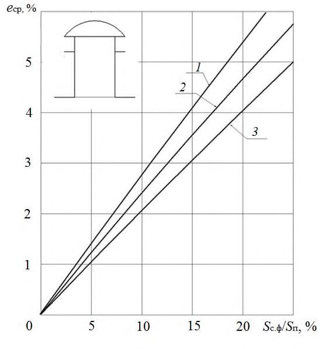
2,9×5,9 ( 1 ); 2,7×2,7; 2,9×2,9; 1,5×5,9 ( 2 ); 1,5×1,7 ( 3 )
СП .1325800.2018
Рисунок 6.2 - График для определения среднего значения КЕО e ср в производственных помещениях с шахтными фонарями направленного света с глубиной светопроводной шахты 3,50 м и размерами в плане, м: 2,9×5,9 ( 1 ); 2,7×2,7; 2,9×2,9; 1,5×5,9 ( 2 ); 1,5×1,7 ( 3 )
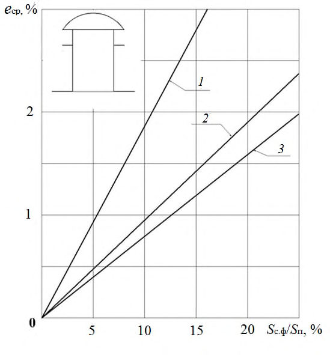
СП .1325800.2018
Рисунок 6.3 - График для определения среднего значения КЕО e ср в производственных помещениях с шахтными фонарями диффузного света с глубиной светопроводной шахты 3,50 м и размерами в плане, м: 2,9×5,9 ( 1 ); 2,7×2,7; 2,9×2,9; 1,5×2,9 ( 2 ); 1,5×1,7 ( 3 )
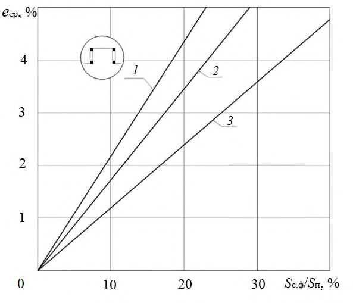
СП .1325800.2018
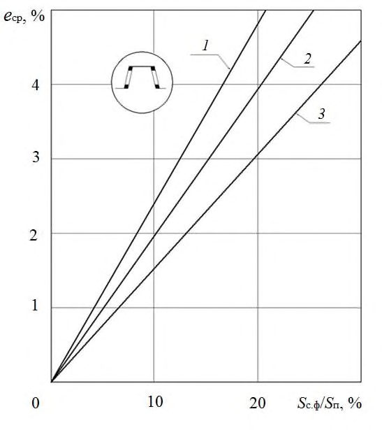
1 - три пролета и более; 2 - два пролета; 3 - один пролет
Рисунок 6.4 - График для определения среднего значения КЕО e ср в производственных помещениях с прямоугольными фонарями
СП .1325800.2018
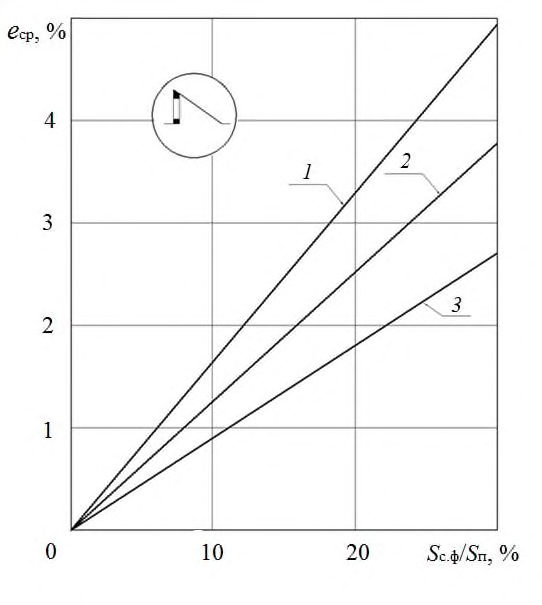
1 - три пролета и более; 2 - два пролета; 3 - один пролет
Рисунок 6.5 - График для определения среднего значения КЕО e ср в производственных помещениях с трапециевидными фонарями
СП .1325800.2018
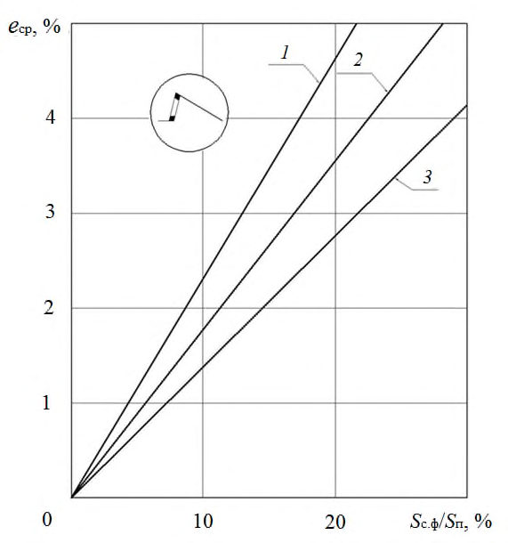
1 - три пролета и более; 2 - два пролета; 3 - один пролет
Рисунок 6.6 - График для определения среднего значения КЕО e ср в производственных помещениях с шедовыми фонарями, имеющими вертикальное остекление
СП .1325800.2018
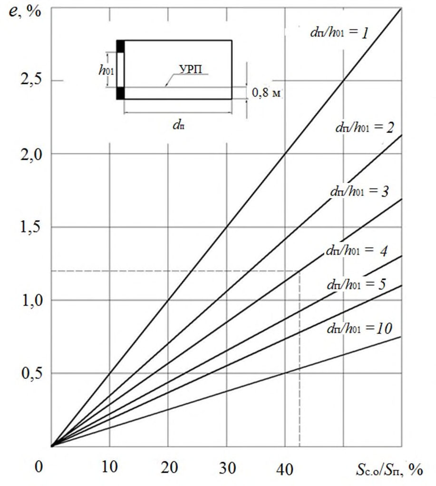
1 - три пролета и более; 2 - два пролета; 3 - один пролет
Рисунок 6.7 - График для определения среднего значения КЕО e ср в производственных помещениях с шедовыми фонарями, имеющими наклонное остекление
СП .1325800.2018
Рисунок 6.8 - График для определения КЕО e ср при боковом освещении помещений производственных зданий и рабочих кабинетов
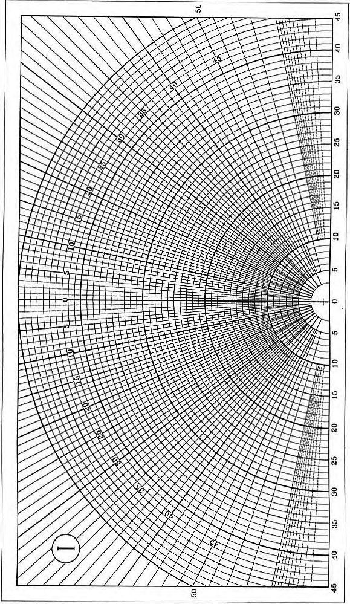
Значения КЕО определяют по рисункам 6.1-6.7 в такой последовательности:
- а) по строительным чертежам находят суммарную площадь световых проемов в свету (фонарей) S с.ф, освещаемую площадь пола помещений S п и определяют значение S с.ф /S п ;
- б) с учетом типа светового проема и количества пролетов в помещении выбирают соответствующий график (рисунки 6.1-6.7);
- в) по значениям S с.ф /S п на графике находят точку с соответствующим значением КЕО.
- а) по строительным чертежам находят суммарную площадь световых проемов (в свету) S с.о и освещаемую площадь пола помещений S п и определяют значение S c.о /S п ;
- б) определяют глубину помещения d п , высоту верхней грани световых проемов над уровнем УПР h 01 и отношение d п /h 01 ;
- в) по значениям S с.о /S п и d п /h 01 на графике находят точку с соответствующим значением КЕО .
- Графики (рисунки 6.1-6.7) разработаны применительно к наиболее часто встречающимся в практике проектирования габаритным схемам производственных зданий и типовому решению светопрозрачных конструкций:
- зенитных фонарей (рисунки 6.1-6.3) со стеклопакетами в металлических одинарных глухих переплетах;
- прямоугольных, трапециевидных и шедовых фонарей (рисунки 6.46.7) с одним слоем остекления в металлических одинарных переплетах.
СП .1325800.2018
График, приведенный на рисунке 6.8, разработан применительно к двухслойным стеклопакетам в спаренных металлических переплетах.
Таблица 6.1 Поправочные коэффициенты К 1 для определения относительной площади световых проемов
| Тип заполнения | Значения коэффициента К 1 для графиков | Значения коэффициента К 1 для графиков | Значения коэффициента К 1 для графиков |
|---|---|---|---|
| на рисун- ках 6.1-6.3 | на рисун- ках 6.4-6.7 | на рисун- ке 6.8 | |
| Один слой оконного стекла в стальных одинарных глухих переплетах | 1,10 | 1,20 | 1,26 |
| То же, в открывающихся переплетах | 0,94 | 1,00 | 1,05 |
| Один слой оконного стекла в деревянных одинар- ных открывающихся переплетах | - | - | 1,05 |
| Три слоя оконного стекла в раздельно спаренных металлических открывающихся переплетах | 0,73 | - | 0,82 |
| То же, в деревянных переплетах | - | - | 0,59 |
| Два слоя оконного стекла в стальных двойных от- крывающихся переплетах | 0,67 | 0,7 | 0,75 |
| То же, в глухих переплетах | 1,00 | 1,05 | - |
| Стеклопакеты (два слоя остекления) в стальных одинарных открывающихся переплетах* | 0,83 | 0,88 | 1,00 |
| То же, в глухих переплетах* | 1,00 | 1,06 | 1,15 |
| Стеклопакеты (три слоя остекления) в стальных глухих спаренных переплетах* | 0,89 | - | 1,00 |
| Пустотелые стеклянные блоки | - | - | 0,70 |
В случаях, когда при верхнем освещении длина помещения менее 72 м или высота более 10 м, найденное по рисункам 6.1-6.7 значение относительной площади световых проемов следует делить, а значение КЕО умножать на коэффициент К 2: при устройстве фонарей прямоугольных, трапециевидных и шедовых по таблице 6.2 и зенитных по таблице 6.3.
Таблица 6.2 Поправочные коэффициенты К 2 для определения относительной площади световых проемов при устройстве фонарей прямоугольных, трапециевидных и шедовых
| Высота от расчетной плоскости до низа остекления фонаря, м | Значение К 2 при длине помещения а п , м | Значение К 2 при длине помещения а п , м | Значение К 2 при длине помещения а п , м | Значение К 2 при длине помещения а п , м | Значение К 2 при длине помещения а п , м |
|---|---|---|---|---|---|
| Высота от расчетной плоскости до низа остекления фонаря, м | 72 и более | 60 | 48 | 36 | 24 |
| 10 | 1,00 | 0,95 | 0,90 | 0,80 | 0,70 |
| 15 | 0,85 | 0,83 | 0,80 | 0,70 | 0,55 |
| 25 | 0,65 | 0,60 | 0,55 | 0,45 | 0,32 |
| 35 | 0,55 | 0,48 | 0,45 | 0,32 | 0,18 |
| 45 | 0,50 | 0,43 | 0,45 | 0,23 | 0,12 |
| 55 | 0,47 | 0,40 | 0,32 | 0,20 | 0,10 |
Таблица 6.3 Поправочные коэффициенты К 2 для определения относительной площади световых проемов при устройстве зенитных фонарей
| Высота от рас- четной плоскости до низа остекле- ния, м | 15 | 20 | 25 | 30 | 35 | 40 | 45 | 50 | 55 |
|---|---|---|---|---|---|---|---|---|---|
| Значение К 2 | 0,95 | 0,91 | 0,87 | 0,84 | 0,77 | 0,73 | 0,68 | 0,64 | 0,60 |
6.5Проверочный расчет КЕО при боковом освещении
Расчет КЕО проводят в такой последовательности:
- а) график I (рисунок 6.9) накладывают на поперечный разрез помещения таким образом, чтобы его полюс (центр) 0 совместился с расчетной точ-
СП .1325800.2018
кой А (рисунок 6.11), а нижняя линия графика - со следом рабочей поверхности; б) по графику I подсчитывают число лучей, проходящих через поперечный разрез светового проема от неба n 1 и от противостоящего здания n ′ 1 в расчетную точку А; в) отмечают номера полуокружностей на графике I, совпадающих с серединой С 1 участка светопроема, через который из расчетной точки видно небо, и с серединой С 2 участка светопроема, через который из расчетной точки видно противостоящее здание (рисунок 6.11); г) график II (рисунок 6.10) накладывают на план помещения таким образом, чтобы его вертикальная ось и горизонталь, номер которой соответствует номеру концентрической полуокружности [перечисление в)], проходили через точку С 1 (рисунок 6.12); д) подсчитывают число лучей n 2 по графику II, проходящих от неба через световой проем на плане помещения в расчетную точку А; е) определяют значение геометрического КЕО б, учитывающего прямой свет от неба, по формуле (А.9); ж) график II накладывают на план помещения таким образом, чтобы его вертикальная ось и горизонталь, номер которой соответствует номеру концентрической полуокружности [перечисление в)], проходили через точку С 2 ; и) подсчитывают число лучей n 1 2 по графику II, проходящих от противостоящего здания через световой проем на плане помещения в расчетную точку А; к) по формуле (А.10) определяют значение геометрического коэффициента естественной освещенности зд, учитывающего свет, отраженный от противостоящего здания; л) определяют значение угла γ, под которым видна середина участка неба из расчетной точки на поперечном разрезе помещения (рисунок 6.11);
СП .1325800.2018
Рисунок 6.9 - График I для расчета геометрического КЕО

Рисунок 6.10 - График II для расчета геометрического КЕО
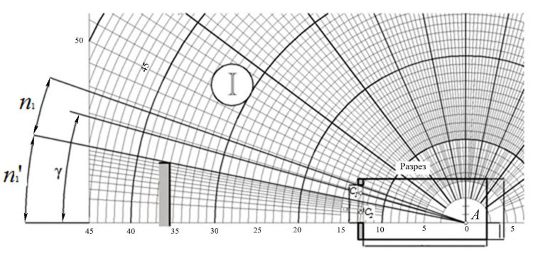
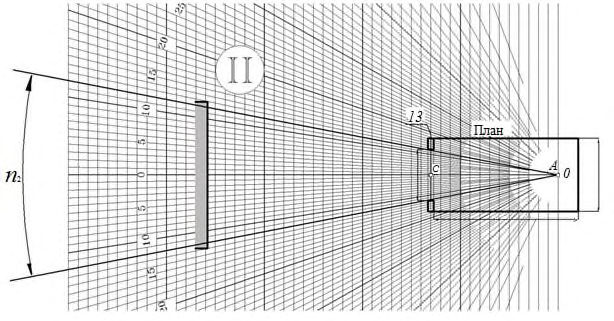
А - расчетная точка; 0 - полюс графика I;
С 1 - середина участка светового проема, через который из расчетной точки видно небо;
С 2 - середина участка светового проема, через который из расчетной точки видно противостоящее здание
Рисунок 6.11 - Пример использования графика I для подсчета числа лучей от неба и противостоящего здания
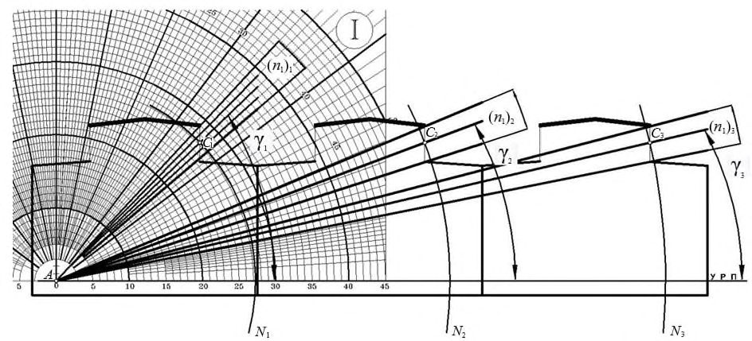
А - расчетная точка; 0 - полюс графика II;
13 - горизонталь, номер которой соответствует номеру концентрической полуокружности, проходящей через точку С1
Рисунок 6.12 - Пример использования графика II для подсчета числа лучей от неба и противостоящего здания м) по значению угла γ и заданным параметрам помещения и окружающей застройки в соответствии с приложением А определяют значения коэффициентов СN, q (γ) , b ф , k зд , r 0 , 0 и MF , подставляют в формулу (А.1) и вычисляют значение КЕО в расчетной точке помещения.
Примечания
- 1 Графики I и II применимы только для световых проемов прямоугольной формы.
2 План и разрез помещения выполняют (вычерчивают) в одинаковом масштабе.
6.6Проверочный расчет КЕО при верхнем освещении
Расчет КЕО проводят в такой последовательности: а) график I (рисунок 6.9) накладывают на поперечный разрез помещения таким образом, чтобы полюс (центр) 0 графика совмещался с расчетной точкой А, а нижняя линия графика - со следом рабочей поверхности (рисунки 6.13 и 6.14). Подсчитывают число радиально направленных лучей графика I, проходящих через поперечный разрез первого проема ( n 1)1, второго проема ( n 1)2, третьего проема ( n 1)3 и т.д.; при этом отмечают номера полуокружностей, которые проходят через середину первого, второго, третьего проемов и т. д. б) определяют углы γ1, γ2, γ3 и т.д. между нижней линией графика I и линией, соединяющей полюс (центр) графика I с серединой первого, второго, третьего проемов и т.д.;
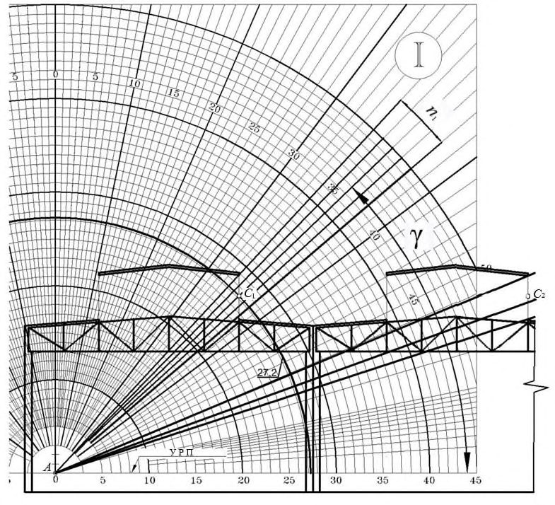
А - расчетная точка; С 1 - середина светопроема; γ - угол между нижней линией графика I и линией, соединяющей центр графика I c серединой светопроема; N - номер полуокружности графика I, проходящей через середину светопроема; УРП - уровень рабочей поверхности
Рисунок 6.13 - Схема определения по графику I количества лучей n , углов γ и номеров полуокружностей в трехпролетном производственном здании с прямоугольными фонарями верхнего света
СП .1325800.2018
Рисунок 6.14 - Определение количества лучей n 1, проходящих через световой проем прямоугольного фонаря при верхнем освещении, по графику I
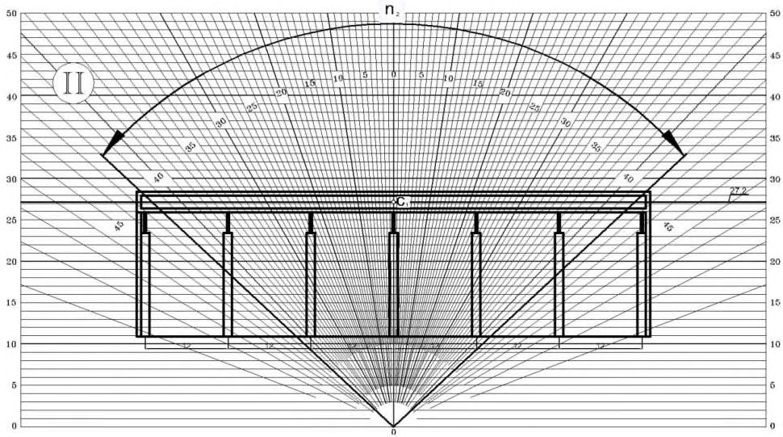
в) график II (рисунок 6.10) накладывают на продольный разрез помещения; при этом график располагают так, чтобы его вертикальная ось и горизонталь, номер которой должен соответствовать номеру полуокружности на графике I, проходили через середину проема (рисунок 6.15, точка С 1 ).
Подсчитывают число лучей по графику II, проходящих через продольный разрез первого проема ( n 2)1, второго проема ( n 2)2, третьего проема ( n 2 ) 3 и т.д.;
СП .1325800.2018
Рисунок 6.15 - Определение количества лучей n 2, проходящих через световой проем прямоугольного фонаря при верхнем освещении, по графику II
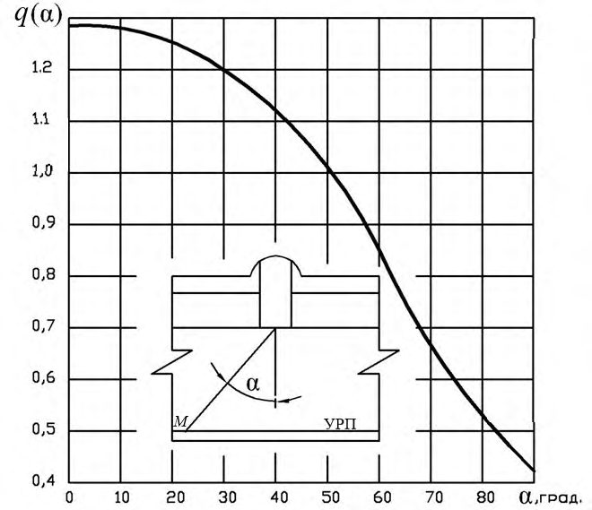
- г) вычисляют значение геометрического КЕО εB1 в первой точке характерного разреза помещения по формуле
где i - число световых проемов;
- q (γ) - коэффициент, учитывающий неравномерную яркость участка небосвода, видимого из первой точки соответственно под углами γ1, γ2, γ3 и т. д.;
- д) повторяют вычисления в соответствии с перечислениями а) - г) для всех точек характерного разреза помещения до N включительно (где N -число точек, в которых производят расчет КЕО);
- е) определяют среднее значение геометрического КЕО ср по формуле (А.7);
- ж) по заданным параметрам помещения и световых проемов в соответствии с приложением А определяют значения r 2 , k ф , 0 ;
- и) последовательно для всех точек вычисляют расчетное значение КЕО по формуле (А.2).
где S ф.в - площадь входного отверстия фонаря;
N ф - число фонарей; i - номер фонаря; q ( ) - коэффициент, учитывающий неравномерную яркость фонаря и определяемый по рисунку 6.16;
- угол между прямой, соединяющей расчетную точку с центром нижнего отверстия фонаря, и нормалью к этому отверстию;
ср - среднее значение геометрического КЕО;
К с - коэффициент светопередачи фонаря, определяемый для фонарей с диффузным отражением стенок по рисунку 6.17, а для фонарей с направленным отражением стенок - по рисунку 6.18 по значению индекса светового проема шахтного фонаря i ф;
MF - расчетный коэффициент, учитывающий снижение КЕО и освещенности в процессе эксплуатации вследствие загрязнения и старения светопрозрачных заполнений в световых проемах, а также снижение отражающих свойств поверхностей помещения (коэффициент эксплуатации).
Индекс светового проема фонаря с отверстиями в форме прямоугольника i ф определяют по формуле
где S ф.н - площадь нижнего отверстия фонаря;
S ф.в - площадь верхнего отверстия фонаря; h с.ф - высота светового проема фонаря;
СП .1325800.2018
Р ф.н , Р ф.в - периметр верхнего и нижнего отверстий фонаря соответственно.
Индекс светового проема фонаря с отверстиями в форме круга определяется по формуле
где r ф.в, rф.н - радиус верхнего и нижнего отверстий фонаря.
Коэффициент 0 определяют по формуле А.7, r 2 -по таблице А.11, коэффициент эксплуатации MF - по таблице 4.3 СП 52.13330.2016.
Расчет проводят в следующем порядке:
- а) вычисляют значение геометрического КЕО в первой точке характерного разреза помещения по формуле
б) повторяют вычисления в соответствии с перечислением а) для всех точек характерного разреза помещения до Nj включительно (где Nj - число точек, в которых производят расчет КЕО);
- в) определяют ср по формуле
- г) последовательно для всех точек вычисляют прямую составляющую КЕО пр по формуле
д) определяют отраженную составляющую КЕО отр, значение которой одинаково для всех точек, по формуле
е) определяют расчетное значение КЕО 𝑒p в в каждой точке характерного разреза с учетом отраженного от поверхностей помещения и прямого света по формуле
Рисунок 6.16 - График для определения коэффициента q ( ) в зависимости от угла
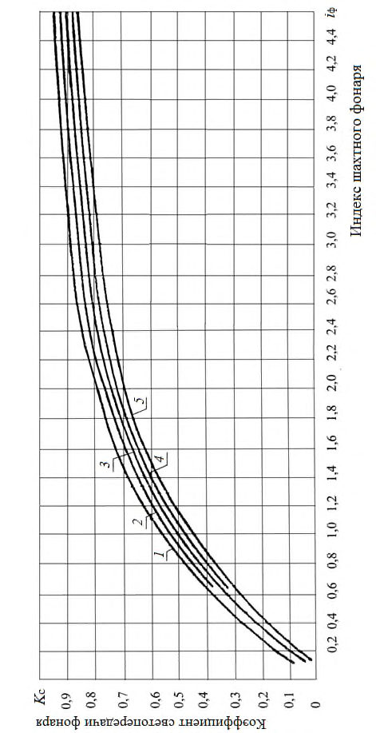
СП .1325800.2018
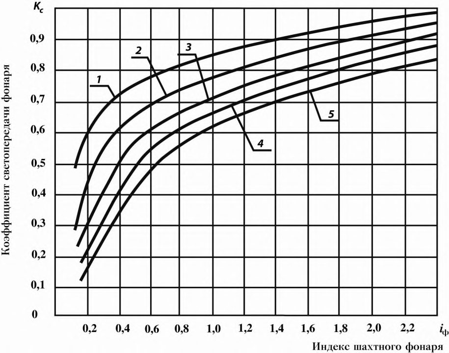
1 - ρд = 0,9; 2 - ρд = 0,8; 3 - ρд = 0,7; 4 - ρд = 0,6; 5 - ρд = 0,5 ρд - коэффициент диффузного отражения
Рисунок 6.17 - График для определения коэффициента светопередачи К с фонарей с диффузным отражением стенок шахты
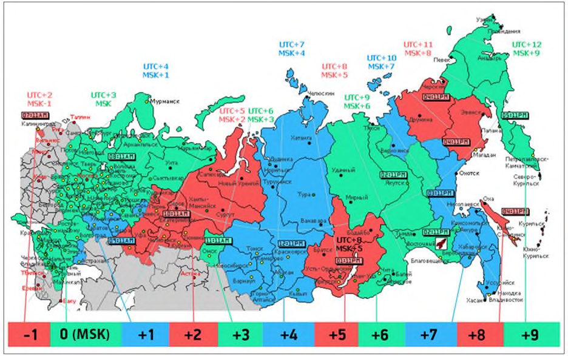
н
= 0,9;
н
= 0,8;
н
= 0,7;
н
= 0,6;
н = 0,5 н - коэффициент направленного отражения
Рисунок 6.18 - График для определения коэффициента светопередачи К с фонарей с направленным отражением стенок шахты
7Совмещенное освещение
7.1Общие положения
- а) при технико-экономических преимуществах по сравнению с естественным освещением;
- б) в помещениях, в которых выполняются зрительные работы I и II разрядов точности;
СП .1325800.2018
- в) когда выбранные по условиям технологии и организации производства объемно-планировочные решения зданий не позволяют обеспечить достаточное по нормам естественное освещение помещений;
- г) при строительстве зданий в районах с суровыми климатическими условиями (северные строительно-климатические районы), в которых с целью снижения теплопотерь целесообразно сокращать до минимума площадь световых проемов;
- д) в цехах с крупногабаритным оборудованием, затеняющим естественный свет;
- е) при повышенных требованиях к интенсивности, качеству и постоянству освещения на рабочих местах, которые трудно или невозможно удовлетворить при одном естественном освещении;
- ж) когда по условиям выбора рациональных объемно-планировочных решений вспомогательных помещений промышленных предприятий предусматриваются помещения большой глубины с боковым освещением.
Примечания
- 1 Совмещенным освещением называют освещение, при котором в светлое время суток одновременно используются естественный и искусственный свет, при этом недостаточное по условиям зрительной работы естественное освещение дополняют искусственным освещением.
- 2 Совмещенное освещение устраивают только в помещениях с недостаточным естественным освещением, в которых расчетное значение КЕО составляет менее 90 % нормированного.
7.2Выбор значений КЕО и освещенности при совмещенном освещении
- а) в районах с температурой наиболее холодной пятидневки по СП 131.13330 минус 28 °С и ниже;
- б) в помещениях с боковым освещением, глубина которых по технологии или рациональным объемно-планировочным решениям не позволяет обеспечить нормируемое значение КЕО, указанное в таблице 4.1 СП 52.13330.2016 для совмещенного освещения;
- в) в помещениях, в которых выполняются зрительные работы разрядов I-III.
- а) освещенность от светильников системы общего освещения должна составлять не менее 200 лк;
- б) освещенность от светильников общего освещения в системе комбинированного освещения необходимо повышать на одну ступень по шкале освещенности, за исключением помещений, в которых выполняют зрительные работы разрядов Iа, Iб, IIа;
- в) коэффициент пульсации K п для зрительных работ разрядов I-III не должен превышать 10 %.
Таблица 7.1 -Наименьшие значения нормируемых КЕО для производственных помещений при совмещенном освещении
| Разряд зрительных работ | Наименьшее значение нормируемого КЕО е н , %, при совмещенном освещении | Наименьшее значение нормируемого КЕО е н , %, при совмещенном освещении |
|---|---|---|
| Разряд зрительных работ | при верхнем или комбинированном освещении | при боковом освещении |
| I | 3,0 | 1,2 |
| II | 2,5 | 1,0 |
| III | 2,0 | 0,7 |
| IV | 1,5 | 0,5 |
| V, VII | 1,0 | 0,3 |
| VI | 0,7 | 0,2 |
СП .1325800.2018
7.3Проектирование совмещенного освещения
- а) в соответствии с исходными данными и требованиями СП 52.13330 определяют разряд преобладающих в помещении зрительных работ, по разряду зрительной работы устанавливают нормируемые значения КЕО и освещенности от искусственного освещения;
- б) определяют характеристики системы естественного освещения и ограждений здания: тип, размеры, заполнение и расположение световых проемов, светотехнические и теплотехнические параметры заполнения световых проемов, теплотехнические параметры глухих ограждений здания;
- в) определяют характеристики системы общего искусственного освещения: тип, число и световой поток источников света; тип и число светильников, их светотехнические характеристики, время использования искусственного освещения;
- г) определяют место расположения здания на карте строительноклиматического районирования территории по СП 131.13330 и устанавливают основные климатические параметры: среднюю температуру наиболее холодной пятидневки, среднюю температуру наружного воздуха за отопительный период; продолжительность отопительного периода; продолжительность вентиляционного периода; среднесуточные значения суммарной солнечной радиации на различно ориентированные поверхности;
- д) выполняют расчет энергетических затрат по методике, изложенной разделе 10 настоящего свода правил; е) выбирают вариант, обеспечивающий минимальный срок окупаемости и удовлетворяющий требованиям СП 52.13330. Равноэкономичные (различающиеся не более чем на 5%) по сроку окупаемости варианты освещения следует сравнивать по суммарным энергозатратам и выбрать наименее энергоемкий.
8Проектирование естественного и совмещенного освещения типовых производственных помещений
8.1Основные производственные помещения предприятий машиностроения
Выбор типоразмеров унифицированных зенитных фонарей рекомендуется производить в зависимости от разряда зрительной работы и высоты производственных помещений согласно таблицы 8.2.
СП .1325800.2018
б) возможности сохранения равноценных условий освещения при изменении расположения технологического оборудования, перепланировки помещения и т.п.
Таблица 8.1 - Количество слоев остекления в зависимости от климата места расположения зданий и характера внутренней среды производственных помещений
| Категория помещения по внутрен- ней среде | Характеристика внутренней среды | Примерный перечень помещений | ( t в - t 3,5 )*, °С | Количество слоев остек- ления |
|---|---|---|---|---|
| С нормаль- ным темпе- ратурно-вла- жностным режимом | Избыток тепловыделений - не более 23 Вт/м³ , тем- пература в рабочей зоне - 16-18°С, относительная влажность - 50-60 %, скорость движения возду- ха в рабочей зоне - 0,3 м/с | Цехи: механические и инстру- ментальные; сварных кон- струкций (заготовительные, механические и сборочные от- деления); ремонтно- строительные; метал- лопокрытий; окрасочные | До 35 От 35 до 49 Св. 49 | 1 2 3 |
| С повышен- ным темпера- турно-влаж- ностным ре- жимом с го- рячей сухой средой | Избыток тепловыделений - свыше 23 Вт/м³ , темпе- ратура в рабочей зоне - 20-25°С, относительная влажность - менее 50 %, скорость движения возду- ха - 0,5 м/с | Чугунолитейные и сталелитей- ные (комплексномеханизиро- ванные участки литейного про- изводства); кузнечные; терми- ческие; плавильные; склады горячих заготовок | Любая | 1** |
| С повышен- ным темпера- турно-влаж- ностным ре- жимом с го- рячей влаж- ной средой | Избыток тепловыделе- ний - свыше 23 Вт/м³ , температура в рабочей зоне 18-20 °С, относи- тельная влажность 60- 75 %, скорость движения воздуха - 0,5 м/с | Травильные; гальванические; электролиза меди и никеля; сушильные | До 49 Св. 49 | 1** 2** |
| С влажной средой и не- значитель- ными тепло- выделениями | Избыток тепловыделений менее 23 Вт/м³ , темпера- тура в рабочей зоне 16- 18°С, относительная влажность 60-75 %, ско- рость движения воздуха - 0,3 м/с | Никелировочные | До 35 Св. 35 | 3 (при обеспе- чении мер защиты от выпадения конденсата) |
| Со строго заданными параметрами (постоянная температура, влажность и чистота воз- духа) | Избыток тепловыделе- ний - менее 23 Вт/м³ ; остальные параметры сре- ды определяются техноло- гическими требованиями | Точного машиностроения, при- боростроения, сборки радио- электронной аппаратуры, опти- ко-механических и электроиз- мерительных приборов | До 49 Св. 49 | 2 2 3 (при влажно- сти свыше 60 % необхо- димы меры защиты от выпадения |
| С внутренней средой, зави- сящей от условий внешней сре- ды | Ограничения по темпера- туре и влажности устанав- ливаются в зависимости от технологических требова- ний и физических свойств материалов и изделий | Склады сырья, полу- фабрикатов, готовой продук- ции, гаражи и производствен- ные помещения без постоянно- го пребывания в них людей; цехи металлических конструк- ций и металлозаготовительные | Любая | 1 |
СП .1325800.2018
| Категория помещения по внутрен- ней среде | Характеристика внутренней среды | Примерный перечень помещений | ( t в - t 3,5 )*, °С | Количество слоев остек- ления |
|---|---|---|---|---|
| * Разность температуры внутреннего воздуха и средней температуры наиболее холодной пятидневки, | * Разность температуры внутреннего воздуха и средней температуры наиболее холодной пятидневки, | * Разность температуры внутреннего воздуха и средней температуры наиболее холодной пятидневки, | * Разность температуры внутреннего воздуха и средней температуры наиболее холодной пятидневки, | * Разность температуры внутреннего воздуха и средней температуры наиболее холодной пятидневки, |
| °С. ** Целесообразно применять светоаэрационные фонари. | °С. ** Целесообразно применять светоаэрационные фонари. | °С. ** Целесообразно применять светоаэрационные фонари. | °С. ** Целесообразно применять светоаэрационные фонари. | °С. ** Целесообразно применять светоаэрационные фонари. |
Таблица 8.2 Типоразмеры зенитных фонарей в зависимости от разряда зрительной работы и высоты производственных помещений
| Высота здания ( до низа фермы), м | Разряд зрительной работы | Размеры фонарей в плане, м |
|---|---|---|
| До 6 | I -III | 1,5 × 5,9 2,7 ×2,7 2,9 × 2,9 |
| До 6 | IV-VIII | 1,5 × 1,7 1,5 × 2,9 1,5 × 3,9 |
| 6-12,6 | I -III | 2,7 × 2,7 2,9 × 2,9 2,9 × 3,9 2,9 × 5,9 |
| 6-12,6 | IV-VIII | 1,5 × 3,9 1,5 × 5,9 |
| Св. 12,6 | I-V | 2,9 × 5,9 |
| Св. 12,6 | VI-VIII | 1,5 × 5,9 2,7 × 2,7 2,9 × 2,9 2,9 × 3,9 |
Для экономии электроэнергии освещенность от искусственного освещения целесообразно повышать на одну ступень только в зоне расположения технологического оборудования и рабочих мест, исключая проходы и проезды.
СП .1325800.2018
ряда зрительной работы, особенностей технологии и высоты производственных помещений по таблице 8.3.
Таблица 8.3 Источники света и светильники для совмещенного освещения
| Разряд зрительной работы | Высота помещений, м | Тип светильника и источника света |
|---|---|---|
| I-IV | До 6 м | Светодиодные светильники с матовыми рассе- ивателями со световым потоком не менее 3000 лм, светильники с люминесцентными лампами Т5 с матовыми рассеивателями |
| I-IV | От 6 до 10 | Светодиодные светильники с рассеивателем со световым потоком не менее 5000 лм, светиль- ники с рассеивателями с металлогалогенными лампами мощностью не менее 250 Вт |
| I-IV | Св. 10 | Светодиодные светильники с рассеивателем со световым потоком не менее 9000 лм, металло- галогенные лампы мощностью не менее 400 Вт |
| V-VIII | До 6 м | Светодиодные светильники с рассеивателем со световым потоком не менее 5000 лм, светиль- ники с металлогалогенными лампами с рассеи- вателями мощностью не менее 250 Вт |
| V-VIII | От 6 до 10 | Светодиодные светильники со световым пото- ком не менее 5000 лм, светильники с металло- галогенными лампами мощностью не менее 250 Вт |
| V-VIII | Св. 10 | Светодиодные светильники со световым пото- ком не менее 9000 лм, металлогалогенные лам- пы мощностью не менее 400 Вт |
Ряды светильников рекомендуется располагать параллельно световым проемам в наружных стенах или параллельно технологическому оборудованию.
0,6-0,8 - для верхней зоны интерьера - потолков, открытых ферм, балок, ригелей, участков стен и перегородок в межферменном пространстве, подъемно-транспортных средств, мостовых кранов и т.п.;
0,4-0,7 - для средней зоны интерьеров - стен, перегородок, колонн, антресолей, этажерок, ворот, дверей и т.п.;
- 0,3-0,5 - для производственного оборудования - станков, машин, аппаратов, приборов, средств внутрицехового транспорта и т.п.;
- 0,2-0,45 - для нижней зоны интерьера - полов, цокольных участков стен и перегородок, фундаментов машин и аппаратов.
8.2Помещения с зенитными и шахтными фонарями
Размещать зенитные и шахтные фонари следует с учетом конструктивных элементов покрытия, инженерных коммуникаций и оборудования, размещаемых в межферменном этаже или пространстве подвесного потолка, а также в увязке с расположением светильников и с учетом требований равномерности освещения: а) в плане квадратные и круглые фонари рекомендуется размещать по углам квадрата, а прямоугольные - по углам прямоугольник с соотношением сторон в поперечном и продольном направлениях, соответствующим соотношению сторон основания опорного стакана или выходного отверстия светопроводной шахты; б) в целях обеспечения равномерности освещения размеры выходных отверстий фонарей должны быть не более 0,25-0,50 высоты помещения, а расстояние между крайним рядом фонарей и стеной для светопроема не должно превышать 0,50 расстояния между средними рядами фонарей; в) фонари рекомендуется размещать между фермами покрытия на площади, свободной от инженерных коммуникаций и оборудования.
СП .1325800.2018
- а) стенки шахты из листовой стали с антикоррозионным покрытием облицовывают алюминиевой технической фольгой толщиной не менее 0,20 мм и крепят по контуру алюминиевыми накладками и самонарезающими винтами;
- б) стенки шахты из асбоцементных листов обклеивают алюминиевой фольгой, используя каучуковые клеи. Асбоцементные листы с наклеенной фольгой крепят к каркасу шахты с помощью алюминиевых фасонных профилей и самонарезающих винтов;
- в) каркас шахты из алюминиевого профиля облицовывают листами алюминиевой технической фольги толщиной 0,50 мм, которые крепят болтами после предварительного натяжения.
8.3Рабочие кабинеты и здания управления
- в) защита помещений от слепящего и теплового действия инсоляции;
- г) благоприятное распределение яркостей в поле зрения.
СП .1325800.2018
9Расчет времени использования естественного освещения в помещениях
В помещениях производственных зданий, в которых расчетное значение КЕО составляет 80 % и нормируемого значения КЕО и менее, нормы искусственной освещенности повышают на одну ступень по шкале освещенности.
- а) при расположении зданий в 1, 3 и 4-й группах административных районов для всех месяцев года - по облачному году; б) при расположении зданий во 2-й и 5-й группах административных районов для зимней половины года (ноябрь - апрель) - по облачному небу, для летней половины года (май - октябрь) - по безоблачному небу.
где ср e - среднее значение КЕО; определяют по формуле (А.8); о г E - наружная горизонтальная освещенность при сплошной облачности; принимают по таблице Е.1.
Примечание - Значения наружной освещенности в приложении Е приведены для местного среднего солнечного времени M T . Переход от местного декретного времени к местному среднему солнечному производят по формуле
где Д Т - местное декретное время;
N - номер часового пояса (рисунок 9.1);
- географическая долгота пункта, выраженная в часовой мере (15 = 1 ч ).
UTS - Всемирное координированное время; MSK - московское время

Рисунок 9.1 -Карта часовых поясов Российской Федерации
где б р e - расчетное значение КЕО в точке А помещения при боковом освещении; определяют по формуле (А.1) приложения А; о г Е - наружная освещенность на горизонтальной поверхности при облачном небе.
- а) при отсутствии солнцезащитных средств в светопроемах и противостоящих зданий по формуле
- б) при затенении окон противостоящими зданиями по формуле
- в) при наличии солнцезащитных средств в светопроемах по формуле
где б i - геометрический КЕО, определяемый по формуле (А.9) приложения А;
б - коэффициент относительной яркости участка неба, видимого через светопроем; принимают по таблице 9.1.
Таблица 9.1 Коэффициенты относительной яркости участка безоблачного неба, видимого из расчетной точки через световой проем
| Ориентация светопроемов | Значение коэффициента б в зависимости от времени суток, ч:мин | Значение коэффициента б в зависимости от времени суток, ч:мин | Значение коэффициента б в зависимости от времени суток, ч:мин | Значение коэффициента б в зависимости от времени суток, ч:мин | Значение коэффициента б в зависимости от времени суток, ч:мин | Значение коэффициента б в зависимости от времени суток, ч:мин | Значение коэффициента б в зависимости от времени суток, ч:мин | Значение коэффициента б в зависимости от времени суток, ч:мин | Значение коэффициента б в зависимости от времени суток, ч:мин | Значение коэффициента б в зависимости от времени суток, ч:мин | Значение коэффициента б в зависимости от времени суток, ч:мин | Значение коэффициента б в зависимости от времени суток, ч:мин | Значение коэффициента б в зависимости от времени суток, ч:мин | Значение коэффициента б в зависимости от времени суток, ч:мин | Значение коэффициента б в зависимости от времени суток, ч:мин |
|---|---|---|---|---|---|---|---|---|---|---|---|---|---|---|---|
| Ориентация светопроемов | 5:00 | 6:00 | 7:00 | 8:00 | 9:00 | 10:00 | 11:00 | 12:00 | 13:00 | 14:00 | 15:00 | 16:00 | 17:00 | 18:00 | 19:00 |
| В | 2 | 3,1 | 3 | 1,9 | 1,4 | 1,25 | 1,2 | 1,3 | 1,4 | 1,55 | 1,7 | 1,8 | 1,9 | 1,95 | 1,85 |
| ЮВ | 1,05 | 1,1 | 1,45 | 2,5 | 2,6 | 1,9 | 1,5 | 1,3 | 1,25 | 1,3 | 1,35 | 1,45 | 1,6 | 1,85 | 1,9 |
| Ю | 1,5 | 1,35 | 1,1 | 1,2 | 1,3 | 1,5 | 1,7 | 1,85 | 1,7 | 1,5 | 1,3 | 1,2 | 1,1 | 1,35 | 1,5 |
СП .1325800.2018
| Ориентация светопроемов | Значение коэффициента б в зависимости от времени суток, ч:мин | Значение коэффициента б в зависимости от времени суток, ч:мин | Значение коэффициента б в зависимости от времени суток, ч:мин | Значение коэффициента б в зависимости от времени суток, ч:мин | Значение коэффициента б в зависимости от времени суток, ч:мин | Значение коэффициента б в зависимости от времени суток, ч:мин | Значение коэффициента б в зависимости от времени суток, ч:мин | Значение коэффициента б в зависимости от времени суток, ч:мин | Значение коэффициента б в зависимости от времени суток, ч:мин | Значение коэффициента б в зависимости от времени суток, ч:мин | Значение коэффициента б в зависимости от времени суток, ч:мин | Значение коэффициента б в зависимости от времени суток, ч:мин | Значение коэффициента б в зависимости от времени суток, ч:мин | Значение коэффициента б в зависимости от времени суток, ч:мин | Значение коэффициента б в зависимости от времени суток, ч:мин |
|---|---|---|---|---|---|---|---|---|---|---|---|---|---|---|---|
| Ориентация светопроемов | 5:00 | 6:00 | 7:00 | 8:00 | 9:00 | 10:00 | 11:00 | 12:00 | 13:00 | 14:00 | 15:00 | 16:00 | 17:00 | 18:00 | 19:00 |
| ЮЗ | 1,9 | 1,85 | 1,6 | 1,45 | 1,35 | 1,3 | 1,25 | 1,3 | 1,5 | 1,9 | 2,6 | 2,5 | 1,45 | 1,1 | 1,05 |
| З | 1,85 | 1,95 | 1,9 | 1,8 | 1,7 | 1,55 | 1,4 | 1,3 | 1,2 | 1,25 | 1,4 | 1,9 | 3 | 3,1 | 2 |
| СЗ | 1,3 | 1,5 | 1,7 | 1,75 | 1,75 | 1,7 | 1,6 | 1,5 | 1,4 | 1,3 | 1,25 | 1,25 | 1,3 | 1,9 | 2,9 |
| С | 1,2 | 1,2 | 1,3 | 1,45 | 1,5 | 1,6 | 1,6 | 1,65 | 1,6 | 1,6 | 1,5 | 1,45 | 1,3 | 1,2 | 1,2 |
| СВ | 2,9 | 1,9 | 1,3 | 1,25 | 1,25 | 1,3 | 1,4 | 1,5 | 1,6 | 1,7 | 1,75 | 1,75 | 1,7 | 1,5 | 1,3 |
| Примечание - В настоящей таблице применены следующие условные обозначения: В - во- сток; З - запад; С - север; СВ - северо-восток; СЗ - северо-запад; Ю-юг; ЮВ - юго-восток; ЮЗ - юго- запад. | Примечание - В настоящей таблице применены следующие условные обозначения: В - во- сток; З - запад; С - север; СВ - северо-восток; СЗ - северо-запад; Ю-юг; ЮВ - юго-восток; ЮЗ - юго- запад. | Примечание - В настоящей таблице применены следующие условные обозначения: В - во- сток; З - запад; С - север; СВ - северо-восток; СЗ - северо-запад; Ю-юг; ЮВ - юго-восток; ЮЗ - юго- запад. | Примечание - В настоящей таблице применены следующие условные обозначения: В - во- сток; З - запад; С - север; СВ - северо-восток; СЗ - северо-запад; Ю-юг; ЮВ - юго-восток; ЮЗ - юго- запад. | Примечание - В настоящей таблице применены следующие условные обозначения: В - во- сток; З - запад; С - север; СВ - северо-восток; СЗ - северо-запад; Ю-юг; ЮВ - юго-восток; ЮЗ - юго- запад. | Примечание - В настоящей таблице применены следующие условные обозначения: В - во- сток; З - запад; С - север; СВ - северо-восток; СЗ - северо-запад; Ю-юг; ЮВ - юго-восток; ЮЗ - юго- запад. | Примечание - В настоящей таблице применены следующие условные обозначения: В - во- сток; З - запад; С - север; СВ - северо-восток; СЗ - северо-запад; Ю-юг; ЮВ - юго-восток; ЮЗ - юго- запад. | Примечание - В настоящей таблице применены следующие условные обозначения: В - во- сток; З - запад; С - север; СВ - северо-восток; СЗ - северо-запад; Ю-юг; ЮВ - юго-восток; ЮЗ - юго- запад. | Примечание - В настоящей таблице применены следующие условные обозначения: В - во- сток; З - запад; С - север; СВ - северо-восток; СЗ - северо-запад; Ю-юг; ЮВ - юго-восток; ЮЗ - юго- запад. | Примечание - В настоящей таблице применены следующие условные обозначения: В - во- сток; З - запад; С - север; СВ - северо-восток; СЗ - северо-запад; Ю-юг; ЮВ - юго-восток; ЮЗ - юго- запад. | Примечание - В настоящей таблице применены следующие условные обозначения: В - во- сток; З - запад; С - север; СВ - северо-восток; СЗ - северо-запад; Ю-юг; ЮВ - юго-восток; ЮЗ - юго- запад. | Примечание - В настоящей таблице применены следующие условные обозначения: В - во- сток; З - запад; С - север; СВ - северо-восток; СЗ - северо-запад; Ю-юг; ЮВ - юго-восток; ЮЗ - юго- запад. | Примечание - В настоящей таблице применены следующие условные обозначения: В - во- сток; З - запад; С - север; СВ - северо-восток; СЗ - северо-запад; Ю-юг; ЮВ - юго-восток; ЮЗ - юго- запад. | Примечание - В настоящей таблице применены следующие условные обозначения: В - во- сток; З - запад; С - север; СВ - северо-восток; СЗ - северо-запад; Ю-юг; ЮВ - юго-восток; ЮЗ - юго- запад. | Примечание - В настоящей таблице применены следующие условные обозначения: В - во- сток; З - запад; С - север; СВ - северо-восток; СЗ - северо-запад; Ю-юг; ЮВ - юго-восток; ЮЗ - юго- запад. | Примечание - В настоящей таблице применены следующие условные обозначения: В - во- сток; З - запад; С - север; СВ - северо-восток; СЗ - северо-запад; Ю-юг; ЮВ - юго-восток; ЮЗ - юго- запад. |
Е в я - наружная освещенность в вертикальной плоскости, создаваемая рассеянным светом безоблачного неба; принимают в зависимости от ориентации поверхности фасада здания и времени суток по таблице Е.4; b ф i - средняя относительная яркость фасадов противостоящих зданий; определяют по таблице А.2;
К зд i -определяют по формуле (А.5).
ф - средневзвешенный коэффициент отражения фасадов противостоящих зданий; принимают по таблице А.3;
E в сум - наружная суммарная освещенность на вертикальной поверхности, создаваемая рассеянным светом неба, прямым светом солнца и светом, отраженным от земной поверхности; принимают по таблице Е.4.
б) при световых проемах в плоскости покрытия, имеющих заполнение из светопрозрачных материалов, по формуле
в) при шедовых фонарях по формуле
СП .1325800.2018
г) при прямоугольных фонарях по формуле
где 0 - общий коэффициент пропускания света; r 2 - коэффициент, учитывающий повышение КЕО при верхнем освещении, благодаря свету, отраженному от поверхностей помещения, принимаемый по таблице А.11;
K ф - коэффициент, принимаемый в зависимости от типа фонаря и определяемой по таблице А.12;
ср - см. формулу (А.8);
E г сум - суммарная наружная освещенность на горизонтальной поверхности, создаваемая безоблачным небом и прямым светом солнца; принимают по таблице Е.3;
Е г я - наружная освещенность на горизонтальной поверхности, создаваемая безоблачным небом; принимают по таблице Е.3;
в - коэффициент относительной яркости участков безоблачного неба, видимых через светопроемы; принимают по таблице 9.2;
E в я и E в я -наружная освещенность на двух противоположных сторонах вертикальной поверхности; принимают по таблице Е.4.
Примечания
- 1 Прямой солнечный свет в расчетах освещенности учитывают при наличии в световых проемах солнцезащитных средств или светорассеивающих материалов, в остальных случаях прямой солнечный свет не учитывают.
- 2 Значения расчетных коэффициентов в таблицах 9.1 и 9.2 приведены для местного среднего солнечного времени.
СП .1325800.2018
Таблица 9.2 -Коэффициенты относительной яркости участков безоблачного неба, видимых из расчетной точки через световые проемы
| Значение коэффициента В в зависимости от времени суток, ч:мин | Значение коэффициента В в зависимости от времени суток, ч:мин | Значение коэффициента В в зависимости от времени суток, ч:мин | Значение коэффициента В в зависимости от времени суток, ч:мин | Значение коэффициента В в зависимости от времени суток, ч:мин | Значение коэффициента В в зависимости от времени суток, ч:мин | Значение коэффициента В в зависимости от времени суток, ч:мин | Значение коэффициента В в зависимости от времени суток, ч:мин | Значение коэффициента В в зависимости от времени суток, ч:мин | Значение коэффициента В в зависимости от времени суток, ч:мин | Значение коэффициента В в зависимости от времени суток, ч:мин | Значение коэффициента В в зависимости от времени суток, ч:мин | Значение коэффициента В в зависимости от времени суток, ч:мин | Значение коэффициента В в зависимости от времени суток, ч:мин | Значение коэффициента В в зависимости от времени суток, ч:мин | |
|---|---|---|---|---|---|---|---|---|---|---|---|---|---|---|---|
| Тип светового проема | 5:00 | 6:00 | 7:00 | 8:00 | 9:00 | 10:00 | 11:00 | 12:00 | 13:00 | 14:00 | 15:00 | 16:00 | 17:00 | 18:00 | 19:00 |
| Прямоугольный фонарь | 1,3 | 1,42 | 1,52 | 1,54 | 1,42 | 1,23 | 1,15 | 1,14 | 1,15 | 1,23 | 1,42 | 1,54 | 1,52 | 1,42 | 1,3 |
| В плоскости покрытия | 0,7 | 0,85 | 0,95 | 1,05 | 1,1 | 1,14 | 1,16 | 1,17 | 1,16 | 1,14 | 1,1 | 1,05 | 0,95 | 0,85 | 0,7 |
| Шедовый фонарь (ориентированный на СЗ, С, СВ) | 1 | 1,17 | 1,13 | 1,04 | 0,95 | 0,9 | 0,85 | 0,8 | 0,85 | 0,9 | 0,95 | 1,04 | 1,13 | 1,17 | 1 |
10Технико-экономическая оценка систем естественного освещения по энергетическим затратам
- а) определяют нормируемые значения КЕО для помещения при естественном и совмещенном освещении;
- б) определяют нормы искусственной освещенности в соответствии с разрядом и подразрядом зрительных работ в соответствии с СП 52.13330;
- в) определяют расчетное значение КЕО е р ;
- г) расчетное значение КЕО е p сравнивают с нормируемым значением, при этом могут иметь место три случая:
- 1) е p более нормируемого. В этом случае возможно уменьшение размеров световых проемов и дальнейший технико-экономический расчет проводят для сравнения вариантов систем естественного освещения с различными размерами световых проемов;
- 2) е p более 0,8 нормируемого. В этом случае возможно увеличение размеров световых проемов и дальнейший технико-экономический расчет проводят для сравнения вариантов систем естественного освещения с раз- личными размерами световых проемов;
3) е p более нормируемого при совмещенном освещении, но менее 0,8 нормируемого при естественном освещении. В этом случае возможно увеличение размеров световых проемов и дальнейший техникоэкономический расчет проводят для сравнения варианта системы естественного освещения с увеличенными размерами световых проемов с вариантом системы совмещенного освещения без увеличения размеров световых проемов.
1) в рассматриваемой системе освещения помещения нормы искусственной освещенности повышают на одну ступень шкалы освещенности в соответствии с пунктом 6.6 СП 52.13330.2016 (первая система естественного освещения);
2) изменяют систему естественного освещения, отличающуюся увеличением площади световых проемов. Эта система естественного освещения помещения должна обеспечивать расчетное значение КЕО не менее 0,8 нормируемого (вторая система естественного освещения помещения).
где S 1 и S 2 -площади светопроемов, м² ;
ок - цена заполнения светопроема, руб/м² ;
ст - цена возведения ограждающей конструкции, в которой расположен светопроем, руб/м² ;
СП .1325800.2018
б) рассчитывают разницу теплопоступлений через световые проемы между первой и второй системами естественного освещения помещения в течение отопительного периода.
Теплопоступления через светопроем с ориентацией j , кВт·ч/год, рассчитывают по формуле
где вер j I - суммарная радиация за отопительный период для вертикальной поверхности, ориентированной по направлению j , МДж/(год·м² );
S - площадь окна, ориентированного по направлению j , м² ; g ок - коэффициент общего пропускания солнечной энергии светопрозрачной частью, относительные единицы;
2ок -коэффициент, учитывающий затенение светового проема непрозрачными элементами заполнения, относительные единицы;
Разницу теплопоступлений через световые проемы между первой и второй системами естественного освещения рассчитывают по формуле
в) рассчитывают разницу теплопотерь через световые проемы между первой и второй системами естественного освещения помещения в течение отопительного периода, кВт·ч/год, по формуле
где ГСОП - градусо-сутки отопительного периода района строительства С° сут/год; правила определения приведены в [1]; рассчитывают по формуле
где t в - нормируемая температура внутреннего воздуха, °С; t от.пер - средняя температура отопительного периода района строительства, °С, определяемая по СП 50.13330; z от.пер - продолжительность отопительного периода района строительства, сут/ год, определяемая по СП 50.13330;
R ок пр - приведенное сопротивление теплопередаче заполнения светового проема, м² °С/Вт;
R ст пр - приведенное сопротивление теплопередаче ограждающей конструкции, в которой расположен световой проем, м² °С/Вт; г) рассчитывают разницу среднегодовых затрат на потери теплоты за отопительный период Зт, обусловленную изменением системы естественного освещения помещения, с учетом притока тепла от солнечной радиации через световые проемы по формуле
С т - перспективная цена тепловой энергии, руб/(кВт ч); д) рассчитывают разницу среднегодовых затрат на потребление электрической энергии Зэ, обусловленную изменением системы естественного освещения помещения, по формуле
где w 1 , w 2 -удельная установленная мощность системы искусственного освещения помещения, Вт/м² , для первой и второй систем естественного освещения помещения; определяют по таблице 7.2 СП 52.13330.2016;
z 1 , z 2 - продолжительность использования искусственного освещения в помещении, ч/год, для первой и второй систем естественного освещения помещения; определяют расчетом;
S п - площадь помещения, м² ;
С э - перспективная цена электрической энергии, руб./(кВт·ч); е) рассчитывают разницу среднегодовых эксплуатационных затрат по формуле
СП .1325800.2018
естественного освещения помещения с первой на вторую:
где р процентная ставка по кредиту банка, %.
Если условие (10.9) не выполняется, то это означает, что затраты на изменение системы естественного освещения помещения в соответствии со второй системой естественного освещения помещения не окупятся и выгоднее принять первую систему естественного освещения помещения, т.е. повысить нормы искусственного освещения помещения на ступень. При этом технико-экономический расчет заканчивают.
Проводят сопоставление расчетного срока окупаемости измененной системы естественного освещения помещения с принятым предельно допустимым значением T о.доп. Если Т o < Т о.доп, то экономически оправдан выбор второй системы естественного освещения помещения, в противном случае экономически оправдан выбор первой системы естественного освещения помещения.
АПриложение А. Методика расчета естественного освещения помещений
А.1 Методика предназначена для расчета коэффициента естественной освещенности КЕО применительно к боковой системе освещения с различными схемами расположения зданий в условиях застройки, а также для расчета КЕО в помещениях с верхней (через фонари различных конструкций) и комбинированной (верхней и боковой) системами естественного освещения.
А.2Расчет коэффициента естественной освещенности
Расчет коэффициента естественной освещенности КЕО следует проводить: а) при боковом освещении по формуле
б) при верхнем освещении шедовыми прямоугольными, Аобразными, трапециевидными, зенитными фонарями по формуле
в) при верхнем освещении шахтными фонарями по формуле
г) при комбинированном (верхнем и боковом) освещении по формуле
где СN - коэффициент, учитывающий особенности светового климата, принимают по таблице 5.1 СП 52.13330.2016 в зависимости от номера
СП .1325800.2018
группы административных районов Российской Федерации;
L число участков небосвода, видимых через световой проем из расчетной точки;
б i - геометрический КЕО в расчетной точке при боковом освещении, учитывающий прямой свет от i -го участка неба, определяемый по формуле (А.10); q () i -коэффициент, учитывающий неравномерную яркость i -го участка облачного неба МКО, определяемый по таблице А.1;
М число участков фасадов зданий противостоящей застройки, видимых через световой проем из расчетной точки;
N ф -число световых проемов в покрытии;
зд j - геометрический КЕО в расчетной точке при боковом освещении, учитывающий свет, отраженный от j -го участка фасадов зданий противостоящей застройки, определяемый по формуле (А.11); b ф j - средняя относительная яркость j -го участка противостоящего (экранирующего) здания, расположенного параллельно исследуемому зданию (помещению), определяемая по таблице А.2. Иные схемы застройки необходимо приводить к схеме № 1 с параллельным расположением зданий согласно рисунку А.1; r 0 -коэффициент, учитывающий повышение КЕО при боковом освещении благодаря свету, отраженному от поверхностей помещения и подстилающего слоя, прилегающего к зданию, принимаемый по таблицам А.4 и А.5;
MF - коэффициент эксплуатации, определяемый по таблице 4.3 СП 52.13330.2016,
в i -геометрический КЕО в расчетной точке при верхнем освещении от i -го проема.
При расчете средней относительной яркости фасадов b ф j по таблице А.2 коэффициент отражения строительных и облицовочных материалов для фасадов противостоящих зданий без оконных проемов, а также сред- невзвешенный коэффициент отражения фасадов ф с учетом оконных проемов следует принимать по таблице А.3. Для строящихся зданий допускается принимать ф по данным, приведенным в документации на отделочный материал фасада, или по данным измерений.
Средневзвешенный коэффициент отражения оконных проемов с учетом переплетов ок в расчетах принимают равным 0,20.
Средневзвешенный коэффициент отражения фасадов ф с отделочными материалами, отличающимися от приведенных в таблице А.3, с учетом оконных блоков следует определять по формуле
где и ок - коэффициент отражения отделочного материала фасада и оконных блоков соответственно;
S фас и S ок - площадь фасада без учета оконных блоков и площадь оконных блоков соответственно;
Кзд j - коэффициент, учитывающий изменения внутренней отраженной составляющей КЕО в помещении при наличии противостоящих зданий, определяемый по формуле
где Кзд0 - коэффициент, учитывающий изменения внутренней отраженной составляющей КЕО в помещении при полном закрытии небосвода зданиями, видимыми из расчетной точки, определяемый по таблице А.6.
Для наиболее часто встречающихся в практике строительства схем застройки зданий, отличающихся от приведенных на рисунке А.1, коэффициент К зд определяют согласно схемам, приведенным на рисунках А.2 А.3;
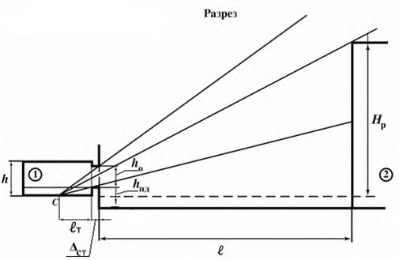
- исследуемое помещение;
- экранирующее здание;
- С -расчетная точка в разрезе; С ´ - расчетная точка в плане;
I-II - участок экранирующего здания, видимый из расчетной точки через световой проем; z 1 - индекс экранирующего здания в плане; z 2 -индекс экранирующего здания в разрезе
Примечание - Другие обозначения см. в разделе 4.
Рисунок А.1 -Схема № 1 к определению параметров застройки при параллельном расположении зданий в застройке
СП .1325800.2018
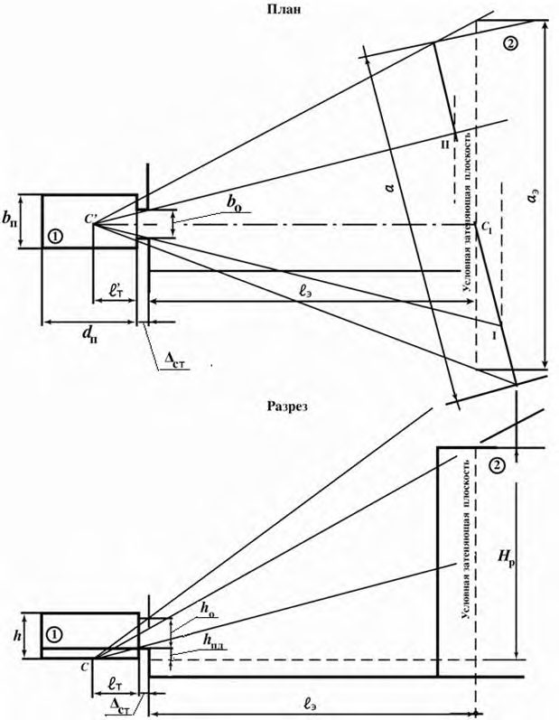
С расчетная точка в разрезе;
С
´
- расчетная точка в плане;
I-II - участок экранирующего здания, видимый из расчетной точки через световой проем
Примечание - Другие обозначения см. в разделе 4 и А.3.
Рисунок А.2 -Схема № 2 к определению параметров застройки при расположении экранирующего здания под углом к исследуемому зданию

- исследуемое помещение;
- экранирующее здание;
С -расчетная точка в разрезе; С ´ - расчетная точка в плане; I-II-III - участки экранирующего здания, видимые из расчетной точки через световой проем
Примечание - Другие обозначения см. в разделе 4 и А.3.
Рисунок А.3 -Схема № 3 к определению параметров Г-образного расположения зданий в застройке
0 - общий коэффициент пропускания света, определяемый по формуле
где 1 - коэффициент светопропускания материала, определяемый по таблицам А.7 и А.8;
2 - коэффициент, учитывающий потери света в переплетах светопроема, определяемый по таблице А.9. Размеры светопроема принимают равными размерам коробки переплета по наружному обмеру;
- 3 - коэффициент, учитывающий потери света в несущих конструкциях, определяемый по таблице А.10 (при боковом освещении 3 = 1);
- 4 - коэффициент, учитывающий потери света в солнцезащитных устройствах, определяемый в соответствии с таблицей А.10;
- 5 - коэффициент, учитывающий потери света в защитной сетке, устанавливаемой под фонарями, принимаемый равным 0,9;
ср - среднее значение геометрического КЕО при верхнем освещении на линии пересечения УРП и плоскости характерного вертикального разреза помещения, определяемое из соотношения
где N число расчетных точек.
Среднее значение КЕО е ср при верхнем или комбинированном освещении определяют по формуле
где е 1 и eN значения КЕО при верхнем или комбинированном освещении в первой и последней точках характерного разреза помещения; еi -значения КЕО в остальных точках характерного разреза помещения ( i = 2, 3, ..., N - 1).
СП .1325800.2018
Геометрический коэффициент естественной освещенности, учитывающий прямой свет неба от равнояркого небосвода в какой-либо точке помещения при боковом освещении, определяют по формуле
где n 1 - число лучей по графику I, проходящих от неба через световые проемы в расчетную точку на поперечном разрезе помещения; n 2 - число лучей по графику II, проходящих от неба через световые проемы в расчетную точку на плане помещения.
Геометрический коэффициент естественной освещенности ЗД j , учитывающий свет, отраженный от противостоящего здания при боковом освещении, определяют по формуле
где п 1 -число лучей по графику I, проходящих от противостоящего здания через световые проемы в расчетную точку на поперечном разрезе помещения; n 2 - число лучей по графику II, проходящих от противостоящего здания через световой проем в расчетную точку на плане помещения.
Расчетные значения КЕО е p , полученные по формулам (А.1) - (А.4), (А.7), (А.8), следует округлять до сотых долей. Допускается снижение расчетного значения КЕО еp по сравнению с нормируемым КЕО на 10 %.
Таблица А.1 -Значения коэффициента q ( γ )
СП .1325800.2018 (по ГОСТ Р 57260)
| Угол возвышения середины участка небосвода γ (угловая высота среднего луча i -го участка небосвода), видимого из расчетной точки через световой проем в разрезе помещения, град | Значения коэффициентов q (γ) |
|---|---|
| 1 | 2 |
| 2 10 14 18 22 26 30 34 38 42 46 50 54 58 62 66 70 74 | 0,429 |
| 6 | 0,431 |
| 0,459 | |
| 0,524 | |
| 0,607 | |
| 0,694 | |
| 0,777 | |
| 0,852 | |
| 0,920 | |
| 0,980 | |
| 1,032 | |
| 1,077 | |
| 1,117 | |
| 1,151 | |
| 1,181 | |
| 1,206 | |
| 1,227 | |
| 1,244 | |
| 1,257 | |
| 78 | 1,268 |
| 82 | 1,275 |
| 86 | 1,280 |
| 90 | 1,281 |
| Примечания 1 При значениях угловых высот среднего луча, отличных от приведенных в настоящей таблице, значе- ния коэффициента q (γ) определяют интерполяцией. 2 В практических расчетах угловую высоту среднего луча участка небосвода, видимого из расчетной точки через световой проем в разрезе помещения, следует заменять угловой высотой середины участка небосвода, видимого из расчетной точки через световой проем. | Примечания 1 При значениях угловых высот среднего луча, отличных от приведенных в настоящей таблице, значе- ния коэффициента q (γ) определяют интерполяцией. 2 В практических расчетах угловую высоту среднего луча участка небосвода, видимого из расчетной точки через световой проем в разрезе помещения, следует заменять угловой высотой середины участка небосвода, видимого из расчетной точки через световой проем. |
СП .1325800.2018
Таблица А.2 -Значения средней относительной яркости фасадов экранирующих (противостоящих) зданий b ф с параллельным их расположением по схеме № 1
| Средневзвешенный коэффициент от- ражения фасада ф | Отношение расстоя- ния между зданиями l к длине противо- стоящего здания а | Значения средней относительной яркости фасада b ф противо- стоящего здания при отношении длины противостоящего зда- ния а к его расчетной высоте H р | Значения средней относительной яркости фасада b ф противо- стоящего здания при отношении длины противостоящего зда- ния а к его расчетной высоте H р | Значения средней относительной яркости фасада b ф противо- стоящего здания при отношении длины противостоящего зда- ния а к его расчетной высоте H р | Значения средней относительной яркости фасада b ф противо- стоящего здания при отношении длины противостоящего зда- ния а к его расчетной высоте H р | Значения средней относительной яркости фасада b ф противо- стоящего здания при отношении длины противостоящего зда- ния а к его расчетной высоте H р | Значения средней относительной яркости фасада b ф противо- стоящего здания при отношении длины противостоящего зда- ния а к его расчетной высоте H р | Значения средней относительной яркости фасада b ф противо- стоящего здания при отношении длины противостоящего зда- ния а к его расчетной высоте H р |
|---|---|---|---|---|---|---|---|---|
| Средневзвешенный коэффициент от- ражения фасада ф | Отношение расстоя- ния между зданиями l к длине противо- стоящего здания а | 0,25 | 0,50 | 1,00 | 1,50 | 2,00 | 3,00 | 4,00 |
| 0,6 | 2,00 и более | 0,29 | 0,33 | 0,37 | 0,39 | 0,40 | 0,41 | 0,41 |
| 0,6 | 1,00 | 0,24 | 0,27 | 0,32 | 0,34 | 0,35 | 0,36 | 0,36 |
| 0,6 | 0,50 | 0,20 | 0,21 | 0,25 | 0,28 | 0,30 | 0,32 | 0,33 |
| 0,6 | 0,25 и менее | 0,17 | 0,17 | 0,18 | 0,21 | 0,23 | 0,27 | 0,29 |
| 0,5 | 2,00 и более | 0,24 | 0,27 | 0,31 | 0,32 | 0,33 | 0,34 | 0,34 |
| 0,5 | 1,00 | 0,19 | 0,22 | 0,26 | 0,28 | 0,28 | 0,29 | 0,30 |
| 0,5 | 0,50 | 0,15 | 0,16 | 0,19 | 0,22 | 0,24 | 0,26 | 0,27 |
| 0,5 | 0,25 и менее | 0,12 | 0,12 | 0,14 | 0,16 | 0,18 | 0,21 | 0,23 |
| 0,4 | 2,00 и более | 0,19 | 0,22 | 0,24 | 0,25 | 0,26 | 0,27 | 0,27 |
| 0,4 | 1,00 | 0,15 | 0,17 | 0,20 | 0,22 | 0,22 | 0,23 | 0,24 |
| 0,4 | 0,50 | 0,11 | 0,12 | 0,15 | 0,17 | 0,19 | 0,20 | 0,21 |
| 0,4 | 0,25 и менее | 0,09 | 0,09 | 0,10 | 0,12 | 0,14 | 0,16 | 0,18 |
| 0,3 | 2,00 и более | 0,14 | 0,16 | 0,18 | 0,19 | 0,20 | 0,20 | 0,20 |
| 0,3 | 1,00 | 0,11 | 0,12 | 0,15 | 0,16 | 0,17 | 0,17 | 0,18 |
| 0,3 | 0,50 | 0,08 | 0,08 | 0,10 | 0,12 | 0,13 | 0,15 | 0,15 |
| 0,3 | 0,25 и менее | 0,06 | 0,06 | 0,07 | 0,08 | 0,10 | 0,12 | 0,13 |
| 0,2 | 2,00 и более | 0,09 | 0,11 | 0,12 | 0,13 | 0,13 | 0,13 | 0,14 |
| 0,2 | 1,00 | 0,07 | 0,08 | 0,10 | 0,10 | 0,11 | 0,11 | 0,12 |
| 0,2 | 0,50 | 0,05 | 0,05 | 0,07 | 0,08 | 0,09 | 0,10 | 0,10 |
| 0,2 | 0,25 и менее | 0,04 | 0,04 | 0,04 | 0,05 | 0,06 | 0,07 | 0,08 |
Примечание - При значениях параметров ф, l / а, а / Н p , отличных от приведенных в настоящей таблице, коэффициент b ф определяют интерполяцией и экстраполяцией.
Таблица А.3 - Значения коэффициента отражения некоторых строительных материалов и средневзвешенного коэффициента отражения фасада ф
| Материал | Коэффициент отражения ма- териала | Средневзвешенный коэффициент отра- жения фасада ф |
|---|---|---|
| Белая фасадная краска, белый мрамор | 0,70 | 0,55 |
| Светло-серый бетон, белый силикатный кирпич, очень светлые фасадные краски | 0,60 | 0,48 |
| Серый бетон, известняк, желтый песчаник, светло-зеленая, беже- вая, светло-серая фасадная краска, светлые породы мрамора | 0,50 | 0,41 |
| Серый офактуренный бетон, серая фасадная краска, светлое дере- во, серый силикатный кирпич | 0,40 | 0,34 |
| Розовый силикатный кирпич, темно-голубая, темно-бежевая, свет- ло-коричневая фасадная краска, потемневшее дерево | 0,30 | 0,27 |
| Темно-серый мрамор, гранит, темно-коричневая, синяя, темно- зеленая, красная фасадная краска | 0,20 | 0,20 |
Таблица А.4 Значения r 0 для УРП
| Отношение глубины поме- щения d п к высо- те от уровня УРП до верха окна h 01 | Отношение расстояния рас- четной точки от внутренней по- верхности наруж- ной стены l т к глу- бине помещения | Средневзвешенный коэффициент отражения пола, стен и потолка ρ | Средневзвешенный коэффициент отражения пола, стен и потолка ρ | Средневзвешенный коэффициент отражения пола, стен и потолка ρ | Средневзвешенный коэффициент отражения пола, стен и потолка ρ | Средневзвешенный коэффициент отражения пола, стен и потолка ρ | Средневзвешенный коэффициент отражения пола, стен и потолка ρ | Средневзвешенный коэффициент отражения пола, стен и потолка ρ | Средневзвешенный коэффициент отражения пола, стен и потолка ρ | Средневзвешенный коэффициент отражения пола, стен и потолка ρ | Средневзвешенный коэффициент отражения пола, стен и потолка ρ | Средневзвешенный коэффициент отражения пола, стен и потолка ρ | Средневзвешенный коэффициент отражения пола, стен и потолка ρ | Средневзвешенный коэффициент отражения пола, стен и потолка ρ | Средневзвешенный коэффициент отражения пола, стен и потолка ρ | Средневзвешенный коэффициент отражения пола, стен и потолка ρ | Средневзвешенный коэффициент отражения пола, стен и потолка ρ | Средневзвешенный коэффициент отражения пола, стен и потолка ρ | Средневзвешенный коэффициент отражения пола, стен и потолка ρ |
|---|---|---|---|---|---|---|---|---|---|---|---|---|---|---|---|---|---|---|---|
| Отношение глубины поме- щения d п к высо- те от уровня УРП до верха окна h 01 | Отношение расстояния рас- четной точки от внутренней по- верхности наруж- ной стены l т к глу- бине помещения | 0,65 | 0,65 | 0,65 | 0,60 | 0,60 | 0,60 | 0,55 | 0,55 | 0,55 | 0,50 | 0,50 | 0,50 | 0,45 | 0,45 | 0,45 | 0,35 | 0,35 | 0,35 |
| Отношение глубины поме- щения d п к высо- те от уровня УРП до верха окна h 01 | Отношение расстояния рас- четной точки от внутренней по- верхности наруж- ной стены l т к глу- бине помещения | Отношение ширины помещения b п к его глубине d п | Отношение ширины помещения b п к его глубине d п | Отношение ширины помещения b п к его глубине d п | Отношение ширины помещения b п к его глубине d п | Отношение ширины помещения b п к его глубине d п | Отношение ширины помещения b п к его глубине d п | Отношение ширины помещения b п к его глубине d п | Отношение ширины помещения b п к его глубине d п | Отношение ширины помещения b п к его глубине d п | Отношение ширины помещения b п к его глубине d п | Отношение ширины помещения b п к его глубине d п | Отношение ширины помещения b п к его глубине d п | Отношение ширины помещения b п к его глубине d п | Отношение ширины помещения b п к его глубине d п | Отношение ширины помещения b п к его глубине d п | Отношение ширины помещения b п к его глубине d п | Отношение ширины помещения b п к его глубине d п | Отношение ширины помещения b п к его глубине d п |
| Отношение глубины поме- щения d п к высо- те от уровня УРП до верха окна h 01 | d п | 0,5 | 1,0 | 2,0 | 0,5 | 1,0 | 2,0 | 0,5 | 1,0 | 2,0 | 0,5 | 1,0 | 2,0 | 0,5 | 1,0 | 2,0 | 0,5 | 1,0 | 2,0 |
| 1,00 | 0,10 | 1,04 | 1,03 | 1,03 | 1,03 | 1,03 | 1,02 | 1,03 | 1,03 | 1,02 | 1,02 | 1,02 | 1,02 | 1,02 | 1,02 | 1,01 | 1,01 | 1,01 | 1,01 |
| 1,00 | 0,50 | 1,75 | 1,67 | 1,52 | 1,66 | 1,59 | 1,46 | 1,56 | 1,51 | 1,39 | 1,47 | 1,42 | 1,33 | 1,37 | 1,34 | 1,26 | 1,19 | 1,17 | 1,13 |
| 1,00 | 0,90 | 3,12 | 2,91 | 2,48 | 2,86 | 2,67 | 2,30 | 2,59 | 2,43 | 2,11 | 2,33 | 2,19 | 1,93 | 2,06 | 1,95 | 1,74 | 1,53 | 1,48 | 1,37 |
| 3,00 | 0,10 | 1,11 | 1,10 | 1,08 | 1,10 | 1,09 | 1,07 | 1,08 | 1,08 | 1,06 | 1,07 | 1,06 | 1,05 | 1,06 | 1,05 | 1,04 | 1,03 | 1,03 | 1,02 |
| 3,00 | 0,20 | 1,36 | 1,33 | 1,25 | 1,32 | 1,29 | 1,22 | 1,27 | 1,25 | 1,19 | 1,23 | 1,20 | 1,16 | 1,18 | 1,16 | 1,13 | 1,09 | 1,08 | 1,06 |
| 3,00 | 0,30 | 1,82 | 1,74 | 1,57 | 1,72 | 1,64 | 1,50 | 1,61 | 1,55 | 1,43 | 1,51 | 1,46 | 1,36 | 1,41 | 1,37 | 1,29 | 1,20 | 1,18 | 1,14 |
| 3,00 | 0,40 | 2,46 | 2,32 | 2,02 | 2,28 | 2,15 | 1,90 | 2,10 | 1,99 | 1,77 | 1,91 | 1,82 | 1,64 | 1,73 | 1,66 | 1,51 | 1,37 | 1,33 | 1,26 |
| 3,00 | 0,50 | 3,25 | 3,02 | 2,57 | 2,97 | 2,77 | 2,38 | 2,68 | 2,52 | 2,18 | 2,40 | 2,26 | 1,98 | 2,12 | 2,01 | 1,79 | 1,56 | 1,51 | 1,39 |
| 3,00 | 0,60 | 4,14 | 3,82 | 3,20 | 3,75 | 3,47 | 2,92 | 3,35 | 3,12 | 2,65 | 2,96 | 2,76 | 2,37 | 2,57 | 2,41 | 2,10 | 1,78 | 1,71 | 1,55 |
| 3,00 | 0,70 | 5,12 | 4,71 | 3,89 | 4,61 | 4,25 | 3,52 | 4,09 | 3,78 | 3,16 | 3,58 | 3,32 | 2,80 | 3,06 | 2,86 | 2,44 | 2,03 | 1,93 | 1,72 |
| 3,00 | 0,80 | 6,20 | 5,68 | 4,64 | 5,55 | 5,09 | 4,18 | 4,90 | 4,51 | 3,73 | 4,25 | 3,92 | 3,27 | 3,60 | 3,34 | 2,82 | 2,30 | 2,17 | 1,91 |
| 3,00 | 0,90 | 7,36 | 6,73 | 5,45 | 6,57 | 6,01 | 4,90 | 5,77 | 5,29 | 4,34 | 4,98 | 4,58 | 3,78 | 4,18 | 3,86 | 3,23 | 2,59 | 2,43 | 2,11 |
| 5,00 | 0,10 | 1,19 | 1,17 | 1,13 | 1,16 | 1,15 | 1,11 | 1,14 | 1,13 | 1,10 | 1,12 | 1,11 | 1,08 | 1,09 | 1,08 | 1,07 | 1,05 | 1,04 | 1,03 |
| 5,00 | 0,20 | 1,61 | 1,55 | 1,42 | 1,53 | 1,48 | 1,37 | 1,45 | 1,41 | 1,32 | 1,38 | 1,34 | 1,27 | 1,30 | 1,27 | 1,21 | 1,15 | 1,14 | 1,11 |
| 5,00 | 0,30 | 2,36 | 2,23 | 1,96 | 2,19 | 2,07 | 1,84 | 2,02 | 1,92 | 1,72 | 1,85 | 1,77 | 1,60 | 1,68 | 1,61 | 1,48 | 1,34 | 1,31 | 1,24 |
| 5,00 | 0,40 | 3,44 | 3,19 | 2,71 | 3,13 | 2,92 | 2,49 | 2,83 | 2,65 | 2,28 | 2,52 | 2,37 | 2,07 | 2,22 | 2,10 | 1,85 | 1,61 | 1,55 | 1,43 |
| 5,00 | 0,50 | 4,74 | 4,37 | 3,62 | 4,28 | 3,95 | 3,29 | 3,81 | 3,53 | 2,97 | 3,34 | 3,11 | 2,64 | 2,87 | 2,68 | 2,31 | 1,94 | 1,84 | 1,66 |
| 5,00 | 0,60 | 6,23 | 5,71 | 4,66 | 5,58 | 5,12 | 4,20 | 4,92 | 4,53 | 3,75 | 4,27 | 3,94 | 3,29 | 3,61 | 3,35 | 2,83 | 2,31 | 2,18 | 1,92 |
| 5,00 | 7,87 | 7,18 | 5,21 | 2,72 | 2,55 | 2,20 | |||||||||||||
| 0,70 | 8,80 | 5,81 | 7,01 | 6,41 | 6,15 | 5,64 | 4,61 | 5,29 | 4,86 | 4,01 | 4,44 | 4,09 | 3,40 | ||||||
| 5,00 | 0,80 | 9,66 | 7,06 | 8,58 | 7,82 | 6,31 | 7,50 | 6,85 | 5,55 | 6,41 | 5,87 | 4,79 | 5,33 | 4,90 | 4,03 | 3,17 | 2,95 | 2,52 | |
| 5,00 | 0,90 | 11,60 | 10,54 | 8,42 | 10,28 | 9,35 | 7,49 | 8,95 | 8,16 | 6,57 | 7,63 | 6,96 | 5,64 | 6,30 | 5,77 | 4,71 | 3,65 | 3,39 | 2,86 |
Примечания
1 При промежуточных значениях d п/ h 01 , l т / d п, b п/ d п и ср коэффициент r 0 определяют интерполяцией и экстраполяцией.
2 Средневзвешенный коэффициент отражения помещения (пола, стен, потолка и окна) расчитывают по формуле
где ρп, ρст, ρпот, ρо - коэффициенты отражения материала пола, стен, потолка и окна соответственно;
S п, S ст , S пот , S о - площадь пола, стен, потолка и окна соответственно.
Если коэффициенты отражения света отделки поверхностей помещения неизвестны, то для помещений производственных зданий средневзвешенный коэфициент отражения ρср следует принимать равным 0,5.
Таблица А.5 Значения r 0 на уровне пола
| Отношение глубины поме- щения d п к высо- те от уровня УРП до верха окна h 01 | Отношение расстояния четной точки внутренней верхности наруж- ной стены l т | Средневзвешенный коэффициент отражения пола, стен и потолка ρ ср | Средневзвешенный коэффициент отражения пола, стен и потолка ρ ср | Средневзвешенный коэффициент отражения пола, стен и потолка ρ ср | Средневзвешенный коэффициент отражения пола, стен и потолка ρ ср | Средневзвешенный коэффициент отражения пола, стен и потолка ρ ср | Средневзвешенный коэффициент отражения пола, стен и потолка ρ ср | Средневзвешенный коэффициент отражения пола, стен и потолка ρ ср | Средневзвешенный коэффициент отражения пола, стен и потолка ρ ср | Средневзвешенный коэффициент отражения пола, стен и потолка ρ ср | Средневзвешенный коэффициент отражения пола, стен и потолка ρ ср | Средневзвешенный коэффициент отражения пола, стен и потолка ρ ср | Средневзвешенный коэффициент отражения пола, стен и потолка ρ ср | Средневзвешенный коэффициент отражения пола, стен и потолка ρ ср | Средневзвешенный коэффициент отражения пола, стен и потолка ρ ср | Средневзвешенный коэффициент отражения пола, стен и потолка ρ ср | Средневзвешенный коэффициент отражения пола, стен и потолка ρ ср | Средневзвешенный коэффициент отражения пола, стен и потолка ρ ср | Средневзвешенный коэффициент отражения пола, стен и потолка ρ ср |
|---|---|---|---|---|---|---|---|---|---|---|---|---|---|---|---|---|---|---|---|
| Отношение глубины поме- щения d п к высо- те от уровня УРП до верха окна h 01 | Отношение расстояния четной точки внутренней верхности наруж- ной стены l т | 0,65 | 0,65 | 0,65 | 0,60 | 0,60 | 0,60 | 0,55 | 0,55 | 0,55 | 0,50 | 0,50 | 0,50 | 0,45 | 0,45 | 0,45 | 0,35 | 0,35 | 0,35 |
| Отношение глубины поме- щения d п к высо- те от уровня УРП до верха окна h 01 | Отношение расстояния четной точки внутренней верхности наруж- ной стены l т | Отношение ширины помещения b п к его глубине d п | Отношение ширины помещения b п к его глубине d п | Отношение ширины помещения b п к его глубине d п | Отношение ширины помещения b п к его глубине d п | Отношение ширины помещения b п к его глубине d п | Отношение ширины помещения b п к его глубине d п | Отношение ширины помещения b п к его глубине d п | Отношение ширины помещения b п к его глубине d п | Отношение ширины помещения b п к его глубине d п | Отношение ширины помещения b п к его глубине d п | Отношение ширины помещения b п к его глубине d п | Отношение ширины помещения b п к его глубине d п | Отношение ширины помещения b п к его глубине d п | Отношение ширины помещения b п к его глубине d п | Отношение ширины помещения b п к его глубине d п | Отношение ширины помещения b п к его глубине d п | Отношение ширины помещения b п к его глубине d п | Отношение ширины помещения b п к его глубине d п |
| Отношение глубины поме- щения d п к высо- те от уровня УРП до верха окна h 01 | бине помещения d п | 0,5 | 1,0 | 2,0 | 0,5 | 1,0 | 2,0 | 0,5 | 1,0 | 2,0 | 0,5 | 1,0 | 2,0 | 0,5 | 1,0 | 2,0 | 0,5 | 1,0 | 2,0 |
| 1,00 | 0,10 | 1,05 | 1,05 | 1,05 | 1,05 | 1,05 | 1,05 | 1,05 | 1,05 | 1,05 | 1,04 | 1,04 | 1,04 | 1,04 | 1,04 | 1,04 | 1,03 | 1,03 | 1,03 |
| 1,00 | 0,50 | 1,54 | 1,48 | 1,36 | 1,46 | 1,41 | 1,31 | 1,39 | 1,34 | 1,25 | 1,31 | 1,27 | 1,20 | 1,23 | 1,20 | 1,14 | 1,08 | 1,06 | 1,03 |
| 1,00 | 0,90 | 2,53 | 2,36 | 2,03 | 2,32 | 2,17 | 1,88 | 2,10 | 1,98 | 1,72 | 1,89 | 1,79 | 1,57 | 1,68 | 1,59 | 1,42 | 1,25 | 1,21 | 1,12 |
| 3,00 | 0,10 | 1,07 | 1,07 | 1,07 | 1,07 | 1,07 | 1,07 | 1,06 | 1,06 | 1,06 | 1,06 | 1,06 | 1,06 | 1,05 | 1,05 | 1,05 | 1,05 | 1,05 | 1,05 |
| 3,00 | 0,20 | 1,05 | 1,05 | 1,05 | 1,04 | 1,04 | 1,04 | 1,04 | 1,04 | 1,04 | 1,03 | 1,03 | 1,03 | 1,03 | 1,03 | 1,03 | 1,02 | 1,02 | 1,02 |
| 3,00 | 0,30 | 1,36 | 1,33 | 1,26 | 1,32 | 1,29 | 1,23 | 1,27 | 1,24 | 1,19 | 1,22 | 1,20 | 1,16 | 1,17 | 1,16 | 1,12 | 1,08 | 1,07 | 1,05 |
| 3,00 | 0,40 | 1,98 | 1,88 | 1,68 | 1,85 | 1,77 | 1,59 | 1,73 | 1,65 | 1,50 | 1,60 | 1,54 | 1,41 | 1,47 | 1,42 | 1,32 | 1,21 | 1,19 | 1,14 |
| 3,00 | 0,50 | 2,74 | 2,56 | 2,21 | 2,51 | 2,36 | 2,05 | 2,29 | 2,16 | 1,89 | 2,06 | 1,95 | 1,73 | 1,84 | 1,75 | 1,57 | 1,38 | 1,34 | 1,25 |
| 3,00 | 0,60 | 3,54 | 3,28 | 2,76 | 3,21 | 2,98 | 2,53 | 2,88 | 2,68 | 1,26 | 2,55 | 2,39 | 2,06 | 2,22 | 2,09 | 1,83 | 1,56 | 1,50 | 1,37 |
| 3,00 | 0,70 | 4,34 | 3,99 | 3,31 | 3,90 | 3,60 | 3,00 | 3,47 | 3,22 | 2,70 | 3,04 | 2,83 | 2,40 | 2,61 | 2,44 | 2,09 | 1,74 | 1,66 | 1,49 |
| 3,00 | 0,80 | 5,13 | 4,71 | 3,86 | 4,60 | 4,23 | 3,48 | 4,06 | 3,74 | 3,11 | 3,53 | 3,26 | 2,73 | 2,99 | 2,78 | 2,36 | 1,92 | 1,82 | 1,61 |
| 3,00 | 0,90 | 5,93 | 5,42 | 4,41 | 5,29 | 4,85 | 3,96 | 4,65 | 4,27 | 3,51 | 4,02 | 3,70 | 3,06 | 3,38 | 3,12 | 2,62 | 2,10 | 1,98 | 1,72 |
| 5,00 | 0,10 | 1,09 | 1,09 | 1,09 | 1,09 | 1,09 | 1,09 | 1,08 | 1,08 | 1,08 | 1,08 | 1,07 | 1,07 | 1,07 | 1,07 | 1,07 | 1,06 | 1,06 | 1,06 |
| 5,00 | 0,20 | 1,07 | 1,07 | 1,07 | 1,06 | 1,06 | 1,06 | 1,06 | 1,06 | 1,06 | 1,05 | 1,05 | 1,05 | 1,04 | 1,04 | 1,04 | 1,03 | 1,03 | 1,03 |
| 5,00 | 0,30 | 1,61 | 1,55 | 1,44 | 1,53 | 1,48 | 1,38 | 1,46 | 1,41 | 1,33 | 1,38 | 1,34 | 1,27 | 1,30 | 1,27 | 1,22 | 1,15 | 1,13 | 1,10 |
| 5,00 | 0,40 | 2,66 | 2,49 | 2,16 | 2,45 | 2,30 | 2,01 | 2,24 | 2,11 | 1,86 | 2,02 | 1,92 | 1,71 | 1,81 | 1,73 | 1,56 | 1,39 | 1,35 | 1,27 |
| 5,00 | 0,50 | 3,94 | 3,65 | 3,05 | 3,57 | 3,31 | 2,79 | 3,19 | 2,97 | 2,52 | 2,82 | 2,63 | 2,26 | 2,44 | 2,29 | 2,00 | 1,69 | 1,62 | 1,47 |
| 5,00 | 0,60 | 5,29 | 4,85 | 3,99 | 4,74 | 4,36 | 3,60 | 4,19 | 3,87 | 3,22 | 3,65 | 3,38 | 2,83 | 3,10 | 2,88 | 2,45 | 2,01 | 1,90 | 1,68 |
| 5,00 | 0,70 | 6,64 | 6,06 | 4,92 | 5,92 | 5,42 | 4,42 | 5,20 | 4,77 | 3,91 | 4,48 | 4,12 | 3,41 | 3,76 | 3,48 | 2,91 | 2,32 | 2,18 | 1,90 |
| 6,47 | 5,23 | 6,20 | 4,66 | 3,36 | |||||||||||||||
| 5,00 | 0,80 | 7,98 | 7,27 | 5,85 | 7,09 | 5,67 | 4,61 | 5,31 | 4,87 | 3,98 | 4,42 | 4,07 | 2,64 | 2,46 | 2,11 | ||||
| 5,00 | 0,90 | 9,32 | 8,48 | 6,79 | 8,26 | 7,52 | 6,04 | 7,20 | 6,57 | 5,30 | 6,14 | 5,61 | 4,56 | 5,08 | 3,81 | 2,96 | 2,75 | 2,32 |
Примечания
1 При промежуточных значениях d п/ h 01 , l т / d п, b п/ d п и ср коэффициент r 0 определяют интерполяцией и экстраполяцией.
2 Средневзвешенный коэффициент отражения помещения (пола, стен и потолка и окна) рассчитывается по формуле
где п, ст , пот, ρо - коэффициенты отражения материала пола, стен, потолка и окна соответственно;
S п, S ст , S пот , S о - площадь пола, стен, потолка и окна соответственно.
Если коэффициенты отражения света отделки поверхностей помещения неизвестны, то для помещений производственных зданий средневзвешенный коэффициент отражения ср следует принимать равным 0,5.
СП .1325800.2018
Таблица А.6 - Значения коэффициента К зд0 для схемы № 1 (рисунок А.1) с параллельным расположением зданий
| Средневзвешенный коэффициент | Средневзвешенный коэффициент | Индекс противо- стоящего здания | Значения коэффициента К зд0 при значениях ин- декса противостоящего здания в разрезе z 2 | Значения коэффициента К зд0 при значениях ин- декса противостоящего здания в разрезе z 2 | Значения коэффициента К зд0 при значениях ин- декса противостоящего здания в разрезе z 2 | Значения коэффициента К зд0 при значениях ин- декса противостоящего здания в разрезе z 2 | Значения коэффициента К зд0 при значениях ин- декса противостоящего здания в разрезе z 2 | Значения коэффициента К зд0 при значениях ин- декса противостоящего здания в разрезе z 2 |
|---|---|---|---|---|---|---|---|---|
| фасада экрани- рующего здания ф | внутренней по- верхности поме- щения ср | в плане z 1 | 0,10 и менее | 0,50 | 1,00 | 1,50 | 2,00 | 4,00 и более |
| Отношение расстояния расчетной точки от наружной стены к глубине помещения l т / d п = 0,90 | Отношение расстояния расчетной точки от наружной стены к глубине помещения l т / d п = 0,90 | Отношение расстояния расчетной точки от наружной стены к глубине помещения l т / d п = 0,90 | Отношение расстояния расчетной точки от наружной стены к глубине помещения l т / d п = 0,90 | Отношение расстояния расчетной точки от наружной стены к глубине помещения l т / d п = 0,90 | Отношение расстояния расчетной точки от наружной стены к глубине помещения l т / d п = 0,90 | Отношение расстояния расчетной точки от наружной стены к глубине помещения l т / d п = 0,90 | Отношение расстояния расчетной точки от наружной стены к глубине помещения l т / d п = 0,90 | Отношение расстояния расчетной точки от наружной стены к глубине помещения l т / d п = 0,90 |
| 0,60 | 0,55 | 0,5 и менее | 1,00 | 1,65 | 1,73 | 1,69 | 1,42 | 1,30 |
| 0,60 | 0,55 | 2,0 | 1,00 | 1,54 | 1,63 | 1,59 | 1,39 | 1,28 |
| 0,60 | 0,55 | 4,0 и более | 1,00 | 1,41 | 1,50 | 1,45 | 1,34 | 1,25 |
| 0,60 | 0,50 | 0,5 и менее | 1,00 | 1,58 | 1,67 | 1,62 | 1,38 | 1,28 |
| 0,60 | 0,50 | 2,0 | 1,00 | 1,48 | 1,57 | 1,53 | 1,35 | 1,26 |
| 0,60 | 0,50 | 4,0 и более | 1,00 | 1,36 | 1,45 | 1,40 | 1,30 | 1,23 |
| 0,60 | 0,45 | 0,5 и менее | 1,00 | 1,51 | 1,60 | 1,56 | 1,34 | 1,26 |
| 0,60 | 0,45 | 2,0 | 1,00 | 1,42 | 1,51 | 1,47 | 1,31 | 1,24 |
| 0,60 | 0,45 | 4,0 и более | 1,00 | 1,30 | 1,39 | 1,35 | 1,26 | 1,21 |
| 0,60 | 0,40 | 0,5 и менее | 1,00 | 1,45 | 1,54 | 1,49 | 1,30 | 1,24 |
| 0,60 | 0,40 | 2,0 | 1,00 | 1,36 | 1,45 | 1,41 | 1,26 | 1,22 |
| 0,60 | 0,40 | 4,0 и более | 1,00 | 1,25 | 1,34 | 1,29 | 1,22 | 1,19 |
| 0,50 | 0,55 | 0,5 и менее | 1,00 | 1,76 | 1,85 | 1,80 | 1,50 | 1,34 |
| 0,50 | 0,55 | 2,0 | 1,00 | 1,66 | 1,75 | 1,70 | 1,47 | 1,32 |
| 0,50 | 0,55 | 4,0 и более | 1,00 | 1,52 | 1,61 | 1,57 | 1,43 | 1,30 |
| 0,50 | 0,50 | 0,5 и менее | 1,00 | 1,69 | 1,78 | 1,74 | 1,46 | 1,32 |
| 0,50 | 0,50 | 2,0 | 1,00 | 1,60 | 1,69 | 1,64 | 1,43 | 1,30 |
| 0,50 | 0,50 | 4,0 и более | 1,00 | 1,47 | 1,56 | 1,51 | 1,39 | 1,28 |
| 0,50 | 0,45 | 0,5 и менее | 1,00 | 1,63 | 1,72 | 1,67 | 1,42 | 1,30 |
| 0,50 | 0,45 | 2,0 | 1,00 | 1,54 | 1,63 | 1,58 | 1,39 | 1,28 |
| 0,50 | 0,45 | 4,0 и более | 1,00 | 1,42 | 1,51 | 1,46 | 1,34 | 1,26 |
| 0,50 | 0,40 | 0,5 и менее | 1,00 | 1,56 | 1,65 | 1,60 | 1,38 | 1,28 |
| 0,50 | 0,40 | 2,0 | 1,00 | 1,48 | 1,57 | 1,52 | 1,35 | 1,26 |
| 0,50 | 0,40 | 4,0 и более | 1,00 | 1,36 | 1,45 | 1,41 | 1,30 | 1,24 |
| 0,40 | 0,55 | 0,5 и менее | 1,00 | 1,87 | 1,96 | 1,91 | 1,59 | 1,38 |
| 0,40 | 0,55 | 2,0 | 1,00 | 1,77 | 1,86 | 1,81 | 1,55 | 1,36 |
| 0,40 | 0,55 | 4,0 и более | 1,00 | 1,64 | 1,72 | 1,68 | 1,51 | 1,34 |
| 0,40 | 0,50 | 0,5 и менее | 1,00 | 1,81 | 1,89 | 1,85 | 1,55 | 1,36 |
| 0,40 | 0,50 | 2,0 | 1,00 | 1,71 | 1,80 | 1,75 | 1,51 | 1,34 |
| 0,40 | 0,50 | 4,0 и более | 1,00 | 1,58 | 1,67 | 1,63 | 1,47 | 1,32 |
| 0,40 | 0,45 | 0,5 и менее | 1,00 | 1,74 | 1,83 | 1,78 | 1,51 | 1,34 |
| 0,40 | 0,45 | 2,0 | 1,00 | 1,65 | 1,74 | 1,69 | 1,47 | 1,32 |
| 0,40 | 0,45 | 4,0 и более | 1,00 | 1,53 | 1,62 | 1,57 | 1,43 | 1,30 |
| 0,40 | 0,40 | 0,5 и менее | 1,00 | 1,67 | 1,76 | 1,72 | 1,47 | 1,32 |
| 0,40 | 0,40 | 2,0 | 1,00 | 1,59 | 1,68 | 1,63 | 1,43 | 1,31 |
| 0,40 | 0,40 | 4,0 и более | 1,00 | 1,48 | 1,56 | 1,52 | 1,39 | 1,28 |
| 0,30 | 0,55 | 0,5 и менее | 1,00 | 1,98 | 2,07 | 2,03 | 1,67 | 1,43 |
| 0,30 | 0,55 | 2,0 | 1,00 | 1,88 | 1,97 | 1,93 | 1,64 | 1,41 |
| 0,30 | 0,55 | 4,0 и более | 1,00 | 1,75 | 1,84 | 1,79 | 1,59 | 1,38 |
| 0,30 | 0,50 | 0,5 и менее | 1,00 | 1,92 | 2,01 | 1,96 | 1,63 | 1,41 |
| 0,30 | 0,50 | 2,0 | 1,00 | 1,82 | 1,91 | 1,87 | 1,60 | 1,39 |
| 0,30 | 0,50 | 4,0 и более | 1,00 | 1,70 | 1,78 | 1,74 | 1,55 | 1,36 |
| 0,30 | 0,45 | 0,5 и менее | 1,00 | 1,85 | 1,94 | 1,90 | 1,59 | 1,39 |
| 0,30 | 0,45 | 2,0 | 1,00 | 1,76 | 1,85 | 1,81 | 1,56 | 1,37 |
| 0,30 | 0,45 | 4,0 и более 0,5 и менее | 1,00 1,00 | 1,64 1,79 | 1,73 1,88 | 1,69 1,83 | 1,51 | 1,34 |
| 0,30 | 0,40 | 1,55 | 1,37 | |||||
| 0,30 | 0,40 | 2,0 | 1,00 | 1,70 | 1,79 | 1,75 | 1,52 | 1,35 1,32 |
| 0,30 | 0,40 | 4,0 и более | 1,00 | 1,59 | 1,68 | 1,63 | 1,47 |
СП .1325800.2018
| Средневзвешенный коэффициент | Средневзвешенный коэффициент | Индекс противо- стоящего здания | Значения коэффициента К зд0 при значениях ин- декса противостоящего здания в разрезе z 2 | Значения коэффициента К зд0 при значениях ин- декса противостоящего здания в разрезе z 2 | Значения коэффициента К зд0 при значениях ин- декса противостоящего здания в разрезе z 2 | Значения коэффициента К зд0 при значениях ин- декса противостоящего здания в разрезе z 2 | Значения коэффициента К зд0 при значениях ин- декса противостоящего здания в разрезе z 2 | Значения коэффициента К зд0 при значениях ин- декса противостоящего здания в разрезе z 2 |
|---|---|---|---|---|---|---|---|---|
| фасада экрани- рующего здания ф | внутренней по- верхности поме- щения ср | в плане z 1 | 0,10 и менее | 0,50 | 1,00 | 1,50 | 2,00 | 4,00 и более |
| Отношение расстояния расчетной точки от наружной стены к глубине помещения l т / d п = 0,50 | Отношение расстояния расчетной точки от наружной стены к глубине помещения l т / d п = 0,50 | Отношение расстояния расчетной точки от наружной стены к глубине помещения l т / d п = 0,50 | Отношение расстояния расчетной точки от наружной стены к глубине помещения l т / d п = 0,50 | Отношение расстояния расчетной точки от наружной стены к глубине помещения l т / d п = 0,50 | Отношение расстояния расчетной точки от наружной стены к глубине помещения l т / d п = 0,50 | Отношение расстояния расчетной точки от наружной стены к глубине помещения l т / d п = 0,50 | Отношение расстояния расчетной точки от наружной стены к глубине помещения l т / d п = 0,50 | Отношение расстояния расчетной точки от наружной стены к глубине помещения l т / d п = 0,50 |
| 0,60 | 0,55 | 0,5 и менее | 1,00 | 1,31 | 1,39 | 1,35 | 1,20 | 1,23 |
| 0,60 | 0,55 | 2,0 | 1,00 | 1,27 | 1,36 | 1,31 | 1,18 | 1,22 |
| 0,60 | 0,55 | 4,0 и более | 1,00 | 1,22 | 1,31 | 1,26 | 1,15 | 1,21 |
| 0,60 | 0,50 | 0,5 и менее | 1,00 | 1,27 | 1,35 | 1,31 | 1,17 | 1,22 |
| 0,60 | 0,50 | 2,0 | 1,00 | 1,24 | 1,32 | 1,28 | 1,15 | 1,21 |
| 0,60 | 0,50 | 4,0 и более | 1,00 | 1,19 | 1,28 | 1,24 | 1,12 | 1,21 |
| 0,60 | 0,45 | 0,5 и менее | 1,00 | 1,23 | 1,31 | 1,27 | 1,14 | 1,21 |
| 0,60 | 0,45 | 2,0 | 1,00 | 1,20 | 1,29 | 1,24 | 1,12 | 1,21 |
| 0,60 | 0,45 | 4,0 и более | 1,00 | 1,17 | 1,25 | 1,21 | 1,09 | 1,20 |
| 0,60 | 0,40 | 0,5 и менее | 1,00 | 1,19 | 1,27 | 1,23 | 1,11 | 1,20 |
| 0,60 | 0,40 | 2,0 | 1,00 | 1,17 | 1,25 | 1,21 | 1,09 | 1,20 |
| 0,60 | 0,40 | 4,0 и более | 1,00 | 1,14 | 1,23 | 1,18 | 1,07 | 1,19 |
| 0,50 | 0,55 | 0,5 и менее | 1,00 | 1,37 | 1,46 | 1,41 | 1,25 | 1,24 |
| 0,50 | 0,55 | 2,0 | 1,00 | 1,33 | 1,42 | 1,37 | 1,23 | 1,23 |
| 0,50 | 0,55 | 4,0 и более | 1,00 | 1,28 | 1,37 | 1,33 | 1,20 | 1,23 |
| 0,50 | 0,50 | 0,5 и менее | 1,00 | 1,33 | 1,42 | 1,37 | 1,22 | 1,23 |
| 0,50 | 0,50 | 2,0 | 1,00 | 1,30 | 1,39 | 1,34 | 1,20 | 1,23 |
| 0,50 | 0,50 | 4,0 и более | 1,00 | 1,26 | 1,34 | 1,30 | 1,18 | 1,22 |
| 0,50 | 0,45 | 0,5 и менее | 1,00 | 1,29 | 1,38 | 1,33 | 1,19 | 1,22 |
| 0,50 | 0,45 | 2,0 | 1,00 | 1,26 | 1,35 | 1,30 | 1,17 | 1,22 |
| 0,50 | 0,45 | 4,0 и более | 1,00 | 1,23 | 1,32 | 1,27 | 1,15 | 1,21 |
| 0,50 | 0,40 | 0,5 и менее | 1,00 | 1,25 | 1,34 | 1,29 | 1,17 | 1,22 |
| 0,50 | 0,40 | 2,0 | 1,00 | 1,23 | 1,32 | 1,27 | 1,15 | 1,21 |
| 0,50 | 0,40 | 4,0 и более | 1,00 | 1,20 | 1,29 | 1,24 | 1,12 | 1,21 |
| 0,40 | 0,55 | 0,5 и менее | 1,00 | 1,43 | 1,52 | 1,47 | 1,30 | 1,25 |
| 0,40 | 0,55 | 2,0 | 1,00 | 1,39 | 1,48 | 1,44 | 1,28 | 1,25 |
| 0,40 | 0,55 | 4,0 и более | 1,00 | 1,34 | 1,43 | 1,39 | 1,26 | 1,24 |
| 0,40 | 0,50 | 0,5 и менее | 1,00 | 1,39 | 1,48 | 1,43 | 1,28 | 1,24 |
| 0,40 | 0,50 | 2,0 | 1,00 | 1,36 | 1,45 | 1,40 | 1,26 | 1,24 |
| 0,40 | 0,50 | 4,0 и более | 1,00 | 1,32 | 1,40 | 1,36 | 1,23 | 1,23 |
| 0,40 | 0,45 | 0,5 и менее | 1,00 | 1,35 | 1,44 | 1,39 | 1,25 | 1,24 |
| 0,40 | 0,45 | 2,0 | 1,00 | 1,32 | 1,41 | 1,37 | 1,23 | 1,23 |
| 0,40 | 0,45 | 4,0 и более | 1,00 | 1,29 | 1,38 | 1,33 | 1,20 | 1,23 |
| 0,40 | 0,40 | 0,5 и менее | 1,00 | 1,31 | 1,40 | 1,35 | 1,22 | 1,23 |
| 0,40 | 0,40 | 2,0 | 1,00 | 1,29 | 1,38 | 1,33 | 1,20 | 1,23 |
| 0,40 | 0,40 | 4,0 и более | 1,00 | 1,26 | 1,35 | 1,30 | 1,17 | 1,22 |
| 0,30 | 0,55 | 0,5 и менее | 1,00 | 1,49 | 1,58 | 1,53 | 1,36 | 1,26 |
| 0,30 | 0,55 | 2,0 | 1,00 | 1,45 | 1,54 | 1,50 | 1,34 | 1,26 |
| 0,30 | 0,55 | 4,0 и более | 1,00 | 1,41 | 1,49 | 1,45 | 1,31 | 1,25 |
| 0,30 | 0,50 | 0,5 и менее | 1,00 | 1,45 | 1,54 | 1,49 | 1,33 | 1,26 |
| 0,30 | 0,50 | 2,0 | 1,00 | 1,42 | 1,51 | 1,46 | 1,31 | 1,25 |
| 0,30 | 0,50 | 4,0 и более | 1,00 1,00 | 1,38 | 1,47 | 1,42 | 1,28 1,30 | 1,25 1,25 |
| 0,30 0,30 | 0,45 0,45 | 0,5 и менее 2,0 | 1,00 | 1,41 1,38 | 1,50 | 1,45 | 1,28 | 1,25 |
| 0,30 | 0,45 | 4,0 и более | 1,00 | 1,35 | 1,47 1,44 | 1,43 1,39 | 1,25 | 1,24 |
| 0,30 | 0,40 | 0,50 и менее | 1,00 | 1,37 | 1,46 | 1,41 | 1,27 | 1,24 |
| 0,30 | 0,40 | 2,0 | 1,00 | 1,25 | 1,24 | |||
| 0,30 | 0,40 | 4,0 и более | 1,00 | 1,35 1,32 | 1,44 1,41 | 1,39 1,37 | 1,23 | 1,23 |
СП .1325800.2018
| Средневзвешенный коэффициент | Средневзвешенный коэффициент | Индекс противо- | Значения коэффициента К зд0 при значениях ин- декса противостоящего здания в разрезе z 2 | Значения коэффициента К зд0 при значениях ин- декса противостоящего здания в разрезе z 2 | Значения коэффициента К зд0 при значениях ин- декса противостоящего здания в разрезе z 2 | Значения коэффициента К зд0 при значениях ин- декса противостоящего здания в разрезе z 2 | Значения коэффициента К зд0 при значениях ин- декса противостоящего здания в разрезе z 2 | Значения коэффициента К зд0 при значениях ин- декса противостоящего здания в разрезе z 2 |
|---|---|---|---|---|---|---|---|---|
| фасада экрани- рующего здания ф | внутренней по- верхности поме- щения ср | стоящего здания в плане z 1 | 0,10 и менее | 0,50 | 1,00 | 1,50 | 2,00 | 4,00 и более |
| Отношение расстояния расчетной точки от наружной стены к глубине помещения l т / d п = 0,10 | Отношение расстояния расчетной точки от наружной стены к глубине помещения l т / d п = 0,10 | Отношение расстояния расчетной точки от наружной стены к глубине помещения l т / d п = 0,10 | Отношение расстояния расчетной точки от наружной стены к глубине помещения l т / d п = 0,10 | Отношение расстояния расчетной точки от наружной стены к глубине помещения l т / d п = 0,10 | Отношение расстояния расчетной точки от наружной стены к глубине помещения l т / d п = 0,10 | Отношение расстояния расчетной точки от наружной стены к глубине помещения l т / d п = 0,10 | Отношение расстояния расчетной точки от наружной стены к глубине помещения l т / d п = 0,10 | Отношение расстояния расчетной точки от наружной стены к глубине помещения l т / d п = 0,10 |
| 0,60 | 0,55 | 0,5 и менее | 1,00 | 0,97 | 1,06 | 1,01 | 0,97 | 1,16 |
| 0,60 | 0,55 | 2,0 | 1,00 | 1,00 | 1,08 | 1,04 | 0,97 | 1,16 |
| 0,60 | 0,55 | 4,0 и более | 1,00 | 1,03 | 1,12 | 1,08 | 0,96 | 1,18 |
| 0,60 | 0,50 | 0,5 и менее | 1,00 | 0,95 | 1,04 | 1,00 | 0,96 | 1,16 |
| 0,60 | 0,50 | 2,0 | 1,00 | 0,99 | 1,07 | 1,03 | 0,95 | 1,17 |
| 0,60 | 0,50 | 4,0 и более | 1,00 | 1,03 | 1,12 | 1,07 | 0,94 | 1,18 |
| 0,60 | 0,45 | 0,5 и менее | 1,00 | 0,94 | 1,03 | 0,98 | 0,94 | 1,17 |
| 0,60 | 0,45 | 2,0 | 1,00 | 0,98 | 1,07 | 1,02 | 0,94 | 1,18 |
| 0,60 | 0,45 | 4,0 и более | 1,00 | 1,03 | 1,12 | 1,07 | 0,93 | 1,19 |
| 0,60 | 0,40 | 0,5 и менее | 1,00 | 0,92 | 1,01 | 0,97 | 0,93 | 1,17 |
| 0,60 | 0,40 | 2,0 | 1,00 | 0,97 | 1,06 | 1,01 | 0,92 | 1,18 |
| 0,60 | 0,40 | 4,0 и более | 1,00 | 1,03 | 1,11 | 1,07 | 0,91 | 1,19 |
| 0,50 | 0,55 | 0,5 и менее | 1,00 | 0,98 | 1,07 | 1,02 | 1,00 | 1,14 |
| 0,50 | 0,55 | 2,0 | 1,00 | 1,01 | 1,09 | 1,05 | 0,99 | 1,15 |
| 0,50 | 0,55 | 4,0 и более | 1,00 | 1,04 | 1,13 | 1,09 | 0,98 | 1,16 |
| 0,50 | 0,50 | 0,5 и менее | 1,00 | 0,96 | 1,05 | 1,01 | 0,98 | 1,14 |
| 0,50 | 0,50 | 2,0 | 1,00 | 1,00 | 1,08 | 1,04 | 0,97 | 1,15 |
| 0,50 | 0,50 | 4,0 и более | 1,00 | 1,04 | 1,13 | 1,08 | 0,97 | 1,16 |
| 0,50 | 0,45 | 0,5 и менее | 1,00 | 0,95 | 1,04 | 0,99 | 0,97 | 1,15 |
| 0,50 | 0,45 | 2,0 | 1,00 | 0,99 | 1,08 | 1,03 | 0,96 | 1,16 |
| 0,50 | 0,45 | 4,0 и более | 1,00 | 1,04 | 1,13 | 1,08 | 0,95 | 1,17 |
| 0,50 | 0,40 | 0,5 и менее | 1,00 | 0,93 | 1,02 | 0,98 | 0,95 | 1,16 |
| 0,50 | 0,40 | 2,0 | 1,00 | 0,98 | 1,07 | 1,02 | 0,94 | 1,16 |
| 0,50 | 0,40 | 4,0 и более | 1,00 | 1,04 | 1,12 | 1,08 | 0,93 | 1,18 |
| 0,40 | 0,55 | 0,5 и менее | 1,00 | 0,99 | 1,08 | 1,03 | 1,02 | 1,12 |
| 0,40 | 0,55 | 2,0 | 1,00 | 1,02 | 1,10 | 1,06 | 1,01 | 1,13 |
| 0,40 | 0,55 | 4,0 и более | 1,00 | 1,05 | 1,14 | 1,10 | 1,00 | 1,14 |
| 0,40 | 0,50 | 0,5 и менее | 1,00 | 0,97 1,01 | 1,06 1,09 | 1,02 | 1,00 | 1,13 |
| 0,40 0,40 | 0,50 0,50 | 2,0 4,0 и более | 1,00 1,00 | 1,05 | 1,14 | 1,05 1,09 | 1,00 0,99 | 1,14 1,15 |
| 0,40 | 0,45 | 0,5 и менее | 1,00 | 0,96 | 1,05 | 1,00 | 0,99 | 1,13 |
| 0,40 | 0,45 | 2,0 | 1,00 | 1,00 | 1,08 | 1,04 | 0,98 | 1,14 |
| 0,40 | 0,45 | 4,0 и более | 1,00 | 1,05 | 1,14 | 1,09 | 0,97 | 1,15 |
| 0,40 | 0,40 | 0,5 и менее | 1,00 | 0,94 | 1,03 | 0,99 | 0,97 | 1,14 |
| 0,40 | 0,40 | 2,0 | 1,00 | 0,99 | 1,08 | 1,03 | 0,97 | 1,15 |
| 0,40 | 0,40 | 4,0 и более | 1,00 | 1,05 | 1,13 | 1,09 | 0,96 | 1,16 |
| 0,30 | 0,55 | 0,5 и менее | 1,09 | 1,04 | 1,04 | 1,10 | ||
| 2,0 | 1,00 1,00 | 1,00 | 1,11 | 1,07 | 1,04 | 1,11 | ||
| 0,30 | 0,55 | 1,03 1,06 | 1,15 | 1,11 | 1,03 | |||
| 0,30 | 0,55 | 4,0 и более | 1,00 | 0,98 | 1,07 | 1,03 | 1,12 1,11 | |
| 0,30 | 0,50 | 0,5 и менее | 1,00 | 1,10 | 1,06 | 1,03 | 1,12 | |
| 0,30 0,30 | 0,50 | 2,0 | 1,00 | 1,02 | 1,15 | 1,10 | 1,02 1,01 | 1,13 |
| 0,50 0,45 | 4,0 и более 0,5 и менее | 1,00 1,00 | 1,06 | 1,06 | 1,01 | 1,01 | 1,11 | |
| 0,30 | 0,45 | 2,0 | 1,00 | 0,97 | 1,05 | 1,01 | 1,12 | |
| 0,30 | 1,01 | 1,09 | ||||||
| 0,30 | 0,45 | 4,0 и более | 1,00 | 1,06 | 1,15 | 1,10 | 1,00 | 1,14 |
| 0,30 | 0,5 и менее 2,0 | 1,00 1,00 | 0,95 1,00 | 1,04 1,09 | 1,00 0,99 | 1,12 1,13 | ||
| 0,30 0,30 | 0,40 0,40 0,40 | 4,0 и более | 1,00 | 1,06 | 1,14 | 1,00 1,04 1,10 | 0,98 | 1,14 |
СП .1325800.2018
2 Значения коэффициента K ЗД0 для схем застройки зданий, отличающихся от схемы № 1 (рисунок А.1), определяют по настоящей таблице с учетом указаний, приведенных в приложении А.
Таблица А.7 Коэффициенты отражения и пропускания строительных стекол 1 )
| Коэффициент пропускания света τ, | Коэффициент отражения света, отн. единицы | Коэффициент отражения света, отн. единицы | |
|---|---|---|---|
| Тип стекла, номинальная толщина | отн.единицы | стороной с покрытием | стороной без покрытия |
| Стекло листовое бесцветное 2 ) | Стекло листовое бесцветное 2 ) | Стекло листовое бесцветное 2 ) | Стекло листовое бесцветное 2 ) |
| Флоат-стекло бесцветное (4-12 мм) | 0,87-0,91 | - | 0,08 |
| Стекло многослойное бесцветное 3 ) | Стекло многослойное бесцветное 3 ) | Стекло многослойное бесцветное 3 ) | Стекло многослойное бесцветное 3 ) |
| Флоат-стекло (6,38-17,52 мм) | 0,84-0,89 | - | 0,08 |
| Стекла с покрытиями | Стекла с покрытиями | Стекла с покрытиями | Стекла с покрытиями |
| Стекла с низкоэмиссионными мягкими покрытия- ми (4 мм) 4) | 0,76-0,90 | 0,04-0,14 | 0,05-0,18 |
| Стекла с солнцезащитным мягким покрытием для применения в стеклопакете, 6 мм 5) | 0,08-0,67 | 0,10-0,51 | 0,10-0,43 |
| Стекла с солнцезащитным твердым покрытием для применения в стеклопакете и моноостеклении, 6 мм 6) | 0,08-0,70 | 0,10-0,51 | 0,05-0,41 |
| Стекло листовое, окрашенное в массе, 6 мм 7) | 0,35-0,73 | - | 0,05-0,07 |
| Стекла с мультифункциональными мягкими по- крытиями, 6 мм 5) | 0,16-0,88 | 0,03-0,37 | 0,05-0,47 |
\_\_\_\_\_\_\_\_\_\_\_\_\_\_\_\_\_\_\_\_\_
1) Характеристики остекления (без учета его непрозрачных частей) рассчитываются по ГОСТ EN 410. Для получения характеристик конкретного остекления необходимо использовать данные производителей либо провести измерения в лаборатории.
2) По ГОСТ 111.
3) По ГОСТ 30826.
4) По ГОСТ 31364.
5) По ГОСТ 33086.
6) По ГОСТ 33017.
7 ) По ГОСТ 32997.
Таблица А.8 -Значения коэффициента пропускания наиболее распространенных стеклопакетов 1
| Формула остекления | τ 1 , отн.ед. |
|---|---|
| 4M1 | 0,90-0,92 |
| 6M1 | 0,88-0,91 |
| 4M1-16 -4M1 | 0,81-0,83 |
| 4M1-16-4M1-16-4M1 | 0,74-0,76 |
| 6M1-16-4M1-12-4M1 | 0,73 |
| 4K | 0,81; 0,82 |
| 4М1-16Ar- K4 | 0,74; 0,75 |
| 4M1-16Ar-K6 | 0,73 |
| 4K-16-4M1-16-K4 | 0,63 |
СП .1325800.2018
| 6СK-16-6M1 | 0,60 |
|---|---|
| 6СK-16- K6 | 0,56 |
| 6СK-16- И6 | 0,58 |
| 6СK-16-4M1-12-4M1 | 0,56 |
| 4М1-16- И4 | 0,70;0,78;0,80;0,81 |
| 4M1-16-И6 | 0,77 |
| 4И-16-4M1-16-И4 | 0,56;0,71-0,74 |
| 4M1-12-4M1-12-И4 | 0,73 |
| 4И-12-4M1-12-И4 | 0,55; 0,71-0,74 |
| 6И-16-4M1-16-И6 | 0,71 |
| 4СИ-16-4M1 | 0,67;0,71;0,75 |
| 6СИ-16-4M 1 6СИ-16-4M1-12-4M1 | 0,40-0,71;0,74 0,36-0,64 |
Примечания
- 1 Формулы стеклопакетов - в соответствии с ГОСТ 24866.
- 2 СИ - солнцезащитное и низкоэмисионное И-стекло. СК - солнцезащитное и низкоэмисионное К-стекло.
- 3 Дискретные и интервальные значения коэффициента светопропускания соответствуют номенклатуре стеклопакетов и обусловлены различиями в светотехнических характеристиках.
- 4 Расстояние между стеклами в стеклопакете не влияет на светопропускание и указано условно.
Таблица А.9 Значения коэффициента τ2
| Вид переплета | Значение 2 |
|---|---|
| Переплеты для окон и фонарей промышленных зданий: | |
| Одинарные | 0,75 |
| спаренные | 0,7 |
| двойные раздельные | 0,6 |
| одинарные открывающиеся | 0,75 |
| одинарные глухие | 0,9 |
| двойные открывающиеся | 0,6 |
| двойные глухие | 0,8 |
| Переплеты для окон вспомогательных зданий: | |
| Одинарные | 0,8 |
| Спаренные | 0,75 |
| двойные раздельные | 0,65 |
| с тройным остеклением | 0,5 |
| металлические: | |
| Одинарные | 0,9 |
| Спаренные | 0,85 |
| двойные раздельные | 0,8 |
| с тройным остеклением | 0,7 |
| Стекложелезобетонные панели с пустотелыми стеклянными блоками при толщине шва: | |
| 20 мм и менее | 0,9 |
| более 20 мм | 0,85 |
Примечание - Значения коэффициентов 1 и 2 для светопропускающего материала и переплетов, не указанных в таблицах А.7- А.9 следует определять по ГОСТ 26602.4.
СП .1325800.2018
Таблица А.10 Значения коэффициентов 3 и 4
| Несущие конструкции покрытий | Коэффициент, учитывающий потери света в несущих кон- струкциях, 3 | Солнцезащитные устройства, изде- лия и материалы | Коэффициент, учитывающий потери света в солнцезащитных устройствах, 4 |
|---|---|---|---|
| Стальные фермы | 0,9 | Убирающиеся регулируемые жалю- зи и шторы (межстекольные, внут- ренние, наружные) | 1,0 |
| Железобетонные и деревянные фермы и арки | 0,8 | Стационарные жалюзи и экраны с защитным углом не более 45° при расположении пластин жалюзи или экранов под углом 90° к плоскости окна: | |
| горизонтальные вертикальные | 0,65 0,75 | ||
| Балки и рамы сплошные при высоте сечения: | Горизонтальные козырьки: | ||
| с защитным углом не более 30° | 0,8 | ||
| - 50 см и более | 0,8 | с защитным углом от 15° до 45° (многоступенчатые) | 0,9 - 0,6 |
| - менее 50 см | 0,9 | Балконы глубиной: | |
| до 1,20 м | 0,90 | ||
| 1,50 м | 0,85 | ||
| 2,00 м | 0,78 | ||
| 3,00 м | 0,62 | ||
| Лоджии глубиной: | |||
| до 1,20 м | 0,80 | ||
| 1,50 м | 0,70 | ||
| 2,00 м | 0,55 | ||
| 3,00 м | 0,22 |
Примечание - Значения коэффициентов 4 балконов и лоджий для глубины, не указанной в настоящей таблице, следует определять интерполяцией и экстраполяциией.
Таблица А.11 Значения коэффициента r 2
| Средневзвешенный коэффициент отражения пола, стен и потолка | Средневзвешенный коэффициент отражения пола, стен и потолка | Средневзвешенный коэффициент отражения пола, стен и потолка | Средневзвешенный коэффициент отражения пола, стен и потолка | Средневзвешенный коэффициент отражения пола, стен и потолка | Средневзвешенный коэффициент отражения пола, стен и потолка | Средневзвешенный коэффициент отражения пола, стен и потолка | Средневзвешенный коэффициент отражения пола, стен и потолка | Средневзвешенный коэффициент отражения пола, стен и потолка | |
|---|---|---|---|---|---|---|---|---|---|
| Отношение высоты помеще- ния, принимаемой от УРП до | ср = 0,5 | ср = 0,5 | ср = 0,5 | ср = 0,4 Число | пролетов | ср = 0,4 Число | ср = 0,3 | ср = 0,3 | ср = 0,3 |
| нижней грани остекления, h ф к ширине пролета l 1 | 1 | 2 | 3 и бо- лее | 1 | 2 | 3 и бо- лее | 1 | 2 | 3 и бо- лее |
| 2 | 1,7 | 1,5 | 1,15 | 1,6 | 1,4 | 1,1 | 1,4 | 1,1 | 1,05 |
| 1 | 1,5 | 1,4 | 1,15 | 1,4 | 1,3 | 1,1 | 1,3 | 1,1 | 1,05 |
| 0,75 | 1,45 | 1,35 | 1,15 | 1,35 | 1,25 | 1,1 | 1,25 | 1,1 | 1,05 |
| 0,5 | 1,4 | 1,3 | 1,15 | 1,3 | 1,2 | 1,1 | 1,2 | 1,1 | 1,05 |
| 0,25 | 1,35 | 1,25 | 1,15 | 1,25 | 1,15 | 1,1 | 1,15 | 1,1 | 1,05 |
| Тип фонаря | Значения k ф |
|---|---|
| Световые проемы в плоскости покрытия, ленточные | 1,0 |
| Световые проемы в плоскости покрытия, штучные | 1,1 |
| Фонари с наклонным двусторонним остеклением (трапециевидные) | 1,15 |
| Фонари с вертикальным двусторонним остеклением (прямоугольные) | 1,2 |
| Шедовые фонари с односторонним наклонным остеклением | 1,3 |
| Шедовые фонари с односторонним вертикальным остеклением | 1,4 |
Геометрический коэффициент естественной освещенности Bi в какой-либо точке помещения от неба МКО при верхнем освещении определяют по формуле
где n 1 - число лучей по графику I, проходящих от неба в расчетную точку через i -й световой проем на поперечном разрезе помещения; n 2 - число лучей по графику II, проходящих от неба в расчетную точку через i -й световой проем на продольном разрезе помещения.
А.3Расчет параметров для различных схем застройки зданий
В случае когда проектируемое здание и экранирующее его здание расположены не параллельно (т.е. отличаются по схеме застройки от схемы № 1 (рисунок А.1), их необходимо привести к эквивалентной схеме с параллельным расположением по схеме № 1. Ниже рассмотрены наиболее часто встречающиеся схемы застройки и приведение их к схеме № 1 с эквивалентными параметрами. По параметрам схем, приведенным к параметрам схемы № 1, определяют значения средней относительной яркости экранирующих зданий и коэффициент K зд, учитывающий изменение внутренней отраженной составляющей КЕО в помещении при наличии противостоящих зданий.
Схема № 2
Противостоящее (экранирующее) здание расположено под углом к исследуемому зданию (рисунок А.2)
1 Накладывают график II для расчета КЕО на план исследуемого помещения (рисунок А.2) таким образом, чтобы его вертикальная ось совместилась с характерным разрезом помещения, а полюс графика 0 совместился с
СП .1325800.2018
расчетной точкой С . Подсчитывают по графику II число лучей, проходящих от части фасада (участок I-II) экранирующего здания через световой проем.
- 2 Отмечают точку С 1, расположенную на середине участка I-II экранирующего здания.
- 3 Строят условную затеняющую плоскость в плане, равную проекции плоскости фасада экранирующего здания на плоскость, параллельную фасаду исследуемого здания (помещения) и проходящую через точку С 1 .
- 4 Определяют расстояние l э от фасада исследуемого здания (помещения) до условной затеняющей плоскости (рисунок А.2).
- 5 Определяют расчетную высоту Н p от уровня пола исследуемого помещения до верха парапета или других затеняющих элементов экранирующего здания.
- 6 Вычисляют отношение расстояния между исследуемым помещением и условной затеняющей плоскостью к длине условной затеняющей плоскости l э / a э .
- 7 Вычисляют отношение длины условной затеняющей плоскости к расчетной высоте экранирующего здания а э / H p .
- 8 Определяют значение средней относительной яркости фасада экранирующего здания по таблице А.2.
- 9 Вычисляют индекс экранирующего здания в плане z 1 по формуле
- 10 Вычисляют индекс экранирующего здания в разрезе z 2 по формуле
- 11 Определяют значение коэффициента K зд0 по таблице А.6.
Схема № 3
Г-образное расположение зданий (рисунок А.3)
Определение параметров застройки по схеме № 3 аналогично определению параметров застройки по схеме № 2, за исключением пункта 3. Строят условную затеняющую плоскость в плане, равную проекции видимой из расчетной точки части экранирующего здания, находящегося в пределах светового угла (участок II-III), на плоскость, параллельную плоскости фасада исследуемого здания (помещения) и проходящую через точку С 1 (середина участка I-II).
СП .1325800.2018
БПриложение Б. Порядок выполнения расчета естественного освещения помещения с шахтными фонарями
- Б.1 Порядок расчета среднего значения КЕО в точках характерного разреза в производственном цехе с шахтными фонарями рассмотрим на примере цеха, имеющего следующие исходные данные:
- размер в плане 18 18 м;
- высота цеха от условной рабочей поверхности до подвесного потолка, совпадающего с плоскостью выходного отверстия светопроводной шахты фонаря, 10 м;
- шахтные фонари направленного света размером в плане 1,5 1,5 м и высотой h 3 = 3,8 м.
- Средневзвешенный коэффициент диффузного отражения потолка, стен и пола ср = 0,4;
- коэффициент направленного отражения стенок фонаря н = 0,7;
- световой проем фонаря заполнен двойным листовым стеклом по металлическим переплетам;
- загрязнение остекления незначительное - воздушная среда в цехе содержит менее 1 мг/м³ пыли, дыма и копоти.
- Б.2 Расчет КЕО выполняют в такой последовательности:
- 1) отмечают на плане размещения фонарей в цехе расчетные точки и фонари согласно рисунку Б.1;
СП .1325800.2018
Рисунок Б.1 - Схема размещения шахтных фонарей
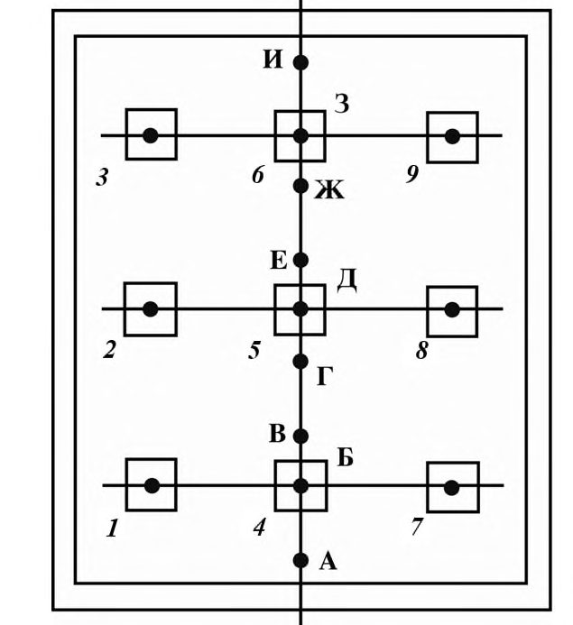
- 2) определяют по плану с учетом масштаба рисунка Б.1 определяют расстояние l ф от каждой из расчетных точек до центров шахтных фонарей и заносят в таблицу Б1;
- 3) вычисляют значения tg по заданной высоте помещения h п и расстояниям l ф вычисляют tg и заносят их в таблицу Б.1.
- 4) определяют по tg значение угла .
- 5) определяют по рисунку 6.16 значения q ( ) для всех расчетных точек и фонарей и заносят их в таблицу Б.1;
94 Таблица Б .1 Таблица расчета среднего КЕО в помещениях с шахтными фонарями
| Номер рас- четной точ- ки | Номер фонаря | Высота помещения h п от условной ра- бочей поверхности до низа фонаря, м | Расстояние l ф в плане от расчетной точки до центра фо- наря, м | tg | , град, мин. | q ( ) | cos m | N ф q ( )cos m | = ф ф 1 )cos ( N j m q | j ,% | пр ,% | отр ,% | e j ,% |
|---|---|---|---|---|---|---|---|---|---|---|---|---|---|
| 1 | 2 | 3 | 4 | 5 | 6 | 7 | 8 | 9 | 10 | 11 | 12 | 13 | 14 |
| А | 1; 7 | 10 | 6,3 | 0,63 | 32°12 | 1,18 | 0,397 | 0,936 | 3,160 | 2,265 | 0,883 | 0,448 | 1,331 |
| А | 2; 8 | 10 | 10,0 | 1,00 | 45° | 1,067 | 0,148 | 0,316 | - | - | - | - | - |
| А | 3; 9 | 10 | 15,1 | 1,51 | 56°30 | 0,912 | 0,038 | 0,070 | - | - | - | - | - |
| А | 4 | 10 | 2,0 | 0,20 | 11°18 | 1,269 | 0,981 | 1,245 | - | - | - | - | - |
| А | 5 | 10 | 6,0 | 0,60 | 31° | 1,187 | 0,427 | 0,507 | - | - | - | - | |
| А | 6 | 10 | 12,0 | 1,20 | 50°12 | 1,00 | 0,086 | 0,086 | - | - | - | - | - |
| Б | 1; 5; 7 | 10 | 6,0 | 0,60 | 31° | 1,187 | 0,427 | 1,521 | 3,496 | 2,505 | 0,977 | 0,448 | 1,425 |
| Б | 2; 8 | 10 | 8,5 | 0,35 | 40°24 | 1,113 | 0,224 | 0,498 | - | - | - | - | - |
| Б | 3; 9 | 10 | 13,5 | 1,35 | 53°30 | 0,958 | 0,057 | 0,110 | - | - | - | - | - |
| Б | 4 | 10 | 0 | 0 | 0 | 1,281 | 1,00 | 1,281 | - | - | - | - | - |
| Б | 6 | 10 | 12,0 | 1,20 | 50°12 | 1,00 | 0,086 | 0,086 | - | - | - | - | - |
| В | 1; 7 | 10 | 6,3 | 0,63 | 32°12 | 1,18 | 0,397 | 0,936 | 4,056 | 2,907 | 1,134 | 0,448 | 1,582 |
| В | 2; 8 | 10 | 2,3 | 0,73 | 36°6 | 1,151 | 0,309 | 0,712 | - | - | - | - | - |
| В | 3; 9 | 10 | 11,7 | 1,17 | 49°30 | 1,013 | 0,092 | 0,186 | - | - | - | - | - |
| В | 4 | 10 | 2,0 | 0,02 | 11°18 | 1,269 | 0,981 | 1,245 | - | - | - | - | - |
| В | 5 | 10 | 4,0 | 0,40 | 21°48 | 1,236 | 0,663 | 0,819 | - | - | - | - | - |
| В | 6 | 10 | 10,0 | 1,00 | 45° | 1,067 | 0,148 | 0,158 | - | - | - | - | - |
| Г | 1; 7 | 10 | 7,3 | 0,73 | 36 6 | 1,151 | 0,309 | 0,712 | 4,384 | 3,142 | 1,225 | 0,448 | 1,673 |
| Г | 2; 8 | 10 | 6,3 | 0,63 | 32°12 | 1,18 | 0,397 | 0,936 | - | - | - | - | - |
| Г | 3; 9 | 10 | 10,0 | 1,00 | 45° | 1,067 | 0,148 | 0,316 | - | - | - | - | - |
| Г | 4 | 10 | 4,0 | 1,21 | 21°48 | 1,236 | 0,663 | 0,819 | - | - | - | - | - |
| Г | 5 | 10 | 2,0 | 0,20 | 11°18 | 1,269 | 0,981 | 1,245 | - | - | - | - | - |
| Г | 6 | 10 | 8,0 | 0,80 | 36°6 | 1,151 | 0,309 | 0,356 | - | - | - | - | - |
| Д | 1; 3; 7; 9 | 10 | 8,5 | 0,85 | 40°24 | 1,113 | 0,224 | 0,996 | 4,305 | 3,085 | 1,203 | 0,448 | 1,651 |
| Д | 2; 4; 6; 8 | 10 | 6,0 | 0,60 | 31° | 1,187 | 0,427 | 2,028 | - | - | - | - | - |
| Д | 5 | 10 | 0 | 0 | 0 | 1,281 | 1,00 | 1,281 | - | - | - | - | - |
СП .1325800.2018
СП .1325800.2018
- 6) определяют индекс шахтного фонаря i ф по формуле
- 7) определяют коэффициент светопередачи шахтного фонаря К с по рисунку 6.18. Для шахтного фонаря с индексом i ф = 0,45 и коэффициентом направленного отражения н = 0,7 K с = 0,57;
- 8) определяют показатель степени cos m по формуле
- 9) вычисляют cos m для всех расчетных точек и фонарей и заносят их в графу 8 таблицы Б.1;
- 10) вычисляют произведение q ( ) cos m для всех расчетных точек и фонарей и заносят в графу 9 таблицы Б.1;
- 11) вычисляют для каждой расчетной точки сумму носят ее в графу 10 таблицы Б.1; 4. ( ) ф ф 1 cos N m j = и за-
- 12) вычисляют j по формуле (6.6) и заносят в графу 11 таблицы Б.1;
- 13) по заданным параметрам остекления таблицы А.7 находят: коэффициент светопропускания двух слоев стекла 1 = 0,8; коэффициент, учитывающий потери света в металлических двойных глухих переплетах 2 = 0,8; коэффициент, учитывающий потери света в защитной сетке 5 = 0,9;
- 14) по таблице 4.3 СП 52.13330.2016 находят коэффициент эксплуатации: MF = 0,67.
- 15) определяют произведение общего коэффициента светопропускания фонаря и коэффициента эксплуатации
- 16) рассчитывают прямую составляющую КЕО пр в точках характерного разреза по формуле (6.8) и записывают результаты расчета в графу 12
СП .1325800.2018
таблицы Б.1;
- 17) находят отношение h п / b п = 0,56.
- 18) находят по заданному среднему коэффициенту отражения ср и отношению h п / b п по таблице А.11 коэффициент, учитывающий увеличение КЕО за счет света, отраженного от поверхностей помещения, r 2 = 1,3;
- 19) определяют среднее значение геометрического КЕО по формуле (6.7)
2,
- 20) определяют по формуле (6.9) отраженную составляющую КЕО в точках характерного разреза: отр = 3,833(1,3 - 1,0) 0,39= 0,448 % и записывают результат расчета в графу 13 таблицы Б.1;
- 21) определяют суммированием прямой пр и отраженной отр составляющих результирующие значения КЕО еj в точках характерного разреза помещения и записывают результаты в графу 14 таблицы Б.1.
ВПриложение В. Порядок выполнения расчета естественного освещения рабочего кабинета с боковым освещением
- В.1 Порядок определения необходимых размеров окна и расчета значения КЕО рабочего кабинета с боковым освещением в отсутствии затенения противостоящим зданием рассмотрим на примере помещения, приведенного на рисунке В.1, имеющего следующие исходные данные:
- глубина помещения d п = 5,9 м, высота h = 2,9 м, ширина b п =3,0 м, площадь пола S п=17,7 м² ;
- заполнение световых проемов двойным остеклением по спаренным алюминиевым переплетам;
- толщина наружных стен 0,35 м;
- коэффициент отражения потолка пот = 0,70; стен ст = 0,40; пола п = 0,25.
Рисунок В.1 - Разрез и план рабочего кабинета
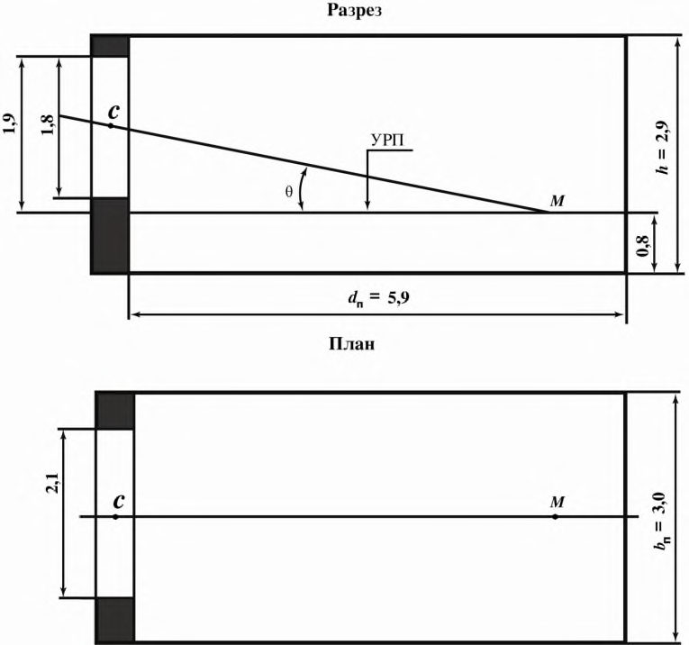
СП .1325800.2018
- В.2 Расчет КЕО выполняют в такой последовательности:
- 1) находят по приложению Л СП 52.13330.2016 нормируемое значение КЕО в рабочем кабинете - 0,6 %;
- 2) производят предварительный расчет естественного освещения, при котором определяют размеры окна. По исходной глубине помещения d п = 5,9 м и высоте верхней грани светового проема над условной рабочей поверхностью h 01 = 1,9 м определяют: d п / h 01 = 3,1;
- 3) находят на рисунке 6.8 на соответствующей кривой е = 0,6 % точку с абсциссой d п /h 01=3,1. По ординате этой точки определяют необходимую относительную суммарную площадь светового проема: S с.о / S п = 21,5 %;
- 4) Определяют площадь светового проема S о по формуле 0,215 · S п = = 0,215 · 17,7= 3,81 м² . Следовательно, ширина светового проема b о = 3,81/1,8 = 2,12 м. Принимают оконный блок размером 1,8 2,1 м;
- 5) производят проверочный расчет КЕО в точке М на рисунке В.1 в соответствии с приложением А по формуле
учитывая, что противостоящих зданий нет, зд MF= 0;
6) для расчета геометрического КЕО накладывают график I для расчета КЕО на поперечный разрез помещения (рисунок В.2), совмещая полюс графика I - 0 с точкой М , а нижнюю линию с условной рабочей поверхностью; подсчитывают число лучей по графику I, проходящих через поперечный разрез светового проема: n 1 = 2,96.
Отмечают, что через точку С на разрезе помещения (рисунок В.2) проходит концентрическая полуокружность 26 графика I;
Рисунок В.2 -Определение числа лучей на разрезе и плане рабочего кабинета
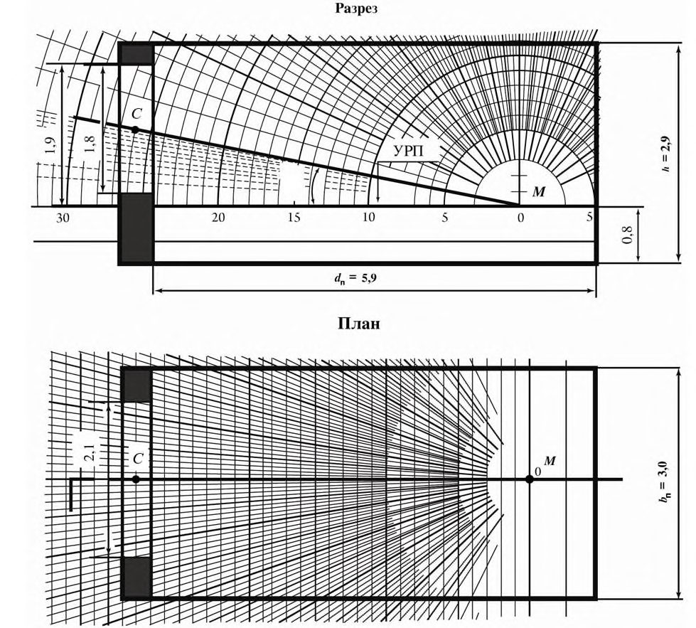
7) накладывают график II для расчета КЕО на план помещения (рисунок В.2) таким образом, чтобы его вертикальная ось и горизонталь 26 проходили через точку С ; подсчитывают по графику II число лучей, проходящих от неба через световой проем: n 2 = 24;
9) определяют на поперечном разрезе помещения в масштабе М 1:50, показанном на рисунке В.1, что середина участка неба, видимого из расчетной точки М через световой проем, находится под углом γ = 11 ; по значению угла γ по приложению А линейной интерполяцией находят ко-
СП .1325800.2018
эффициент, учитывающий неравномерную яркость облачного неба МКО: qi = 0,55;
- 10) находят по размерам помещения и светового проема d п / h 01 = 3,1; l т / d п = 0,83; bп/ d п = 0,51;
- 11) находят площади поверхностей потолка S пот, стен S ст и пола S п и определяют средневзвешенный коэффициент отражения ср по формуле
- 12) находят по найденным значениям d п / h 01 , l т / d п , b п / d п по таблице А.4 r 0 = 2,95;
- 13) находят для спаренного алюминиевого переплета с двойным остеклением находят общий коэффициент пропускания света 0 : 0 = 1 2 = 0,68;
- 14) находят по таблице 4.3 СП 52.13330.2016 коэффициент эксплуатации для окон общественных зданий: MF = 0,8;
- 15) определяют геометрический КЕО в точке М , подставляя значения коэффициентов б , qi , r 0 , 0 и MF в формулу (В.1):
- В.3 На основании вышеизложенного можно сделать вывод, что выбранные размеры светового проема обеспечивают требования норм по совмещенному освещению рабочего кабинета.
ГПриложение Г. Порядок выполнения расчета времени использования естественного освещения в помещениях
Г.1 Порядок расчета времени использования естественного освещения в помещениях рассматривается на примере изменения продолжительности использования естественного освещения в марте за средние сутки в рабочей комнате с верхним естественным освещением через зенитные фонари и с системой общего освещения. При этом запроектированная площадь зенитных фонарей уменьшена в два раза и используется совмещенное освещение.
Рассматриваемая рабочая комната расположена в первой группе административных районов, а точность выполняемых в ней зрительных работ, соответствует разряду Б-1 по приложению Л СП 52.13330.2016.
Первоначально определенная площадь фонарей обеспечивала среднее значение КЕО в рабочей комнате, равное 5 %; при уменьшении площади фонарей в два раза среднее значение КЕО составляет 2,5 %. Работа в помещении выполняется в две смены с 7 до 21 ч по местному времени.
Г.2 Расчет времени использования естественного освещения производится в такой последовательности: расчет естественной освещенности в помещении выполняют для условий облачного неба.
1) находят на таблице Е.1 значение наружной горизонтальной освещенности Е г о при сплошной облачности для разных часов дня в марте, которое вносят в таблицу Г.1;
2) определяют, последовательно подставляя значение Е г о в формулу (9.1), для соответствующих моментов времени значения средней освещенности внутри помещения Е ср . Результаты расчета записывают в таблицу Г.1;
СП .1325800.2018
Таблица Г. 1 Значение наружной горизонтальной освещенности Е г о при облачности для разных часов дня в марте
| Время суток (местное солнечное время) | Наружная горизон- тальная освещенность Е г о , лк | Средняя естественная освещенность в помещении Е ср , лк | Средняя естественная освещенность в помещении Е ср , лк |
|---|---|---|---|
| Время суток (местное солнечное время) | Наружная горизон- тальная освещенность Е г о , лк | приКЕО=5% | при КЕО = 2,5% |
| 7 | 2300 | 115 | 58 |
| 8 | 5000 | 250 | 125 |
| 9 | 7000 | 350 | 175 |
| 10 | 8500 | 425 | 208 |
| 11 | 10000 | 500 | 250 |
| 12 | 10500 | 525 | 263 |
| 13 | 10200 | 510 | 255 |
| 14 | 9000 | 450 | 225 |
| 15 | 7000 | 350 | 175 |
| 16 | 5200 | 260 | 130 |
| 17 | 3000 | 150 | 75 |
| 18 | 800 | 40 | 20 |
| 19 | - | - | - |
| 20 | - | - | - |
| 21 | - | - | - |
- 3) строят по найденным значениям Е ср график (рисунок Г.1) изменения естественной освещенности в помещении в течение рабочего дня при КЕО = 5 % и КЕО = 2,5 %;
- 4) находят по приложению Л СП 52.13330.2016 для рабочей комнаты, расположенной в первой группе административных районов, нормируемое значение КЕО для разряда работ Б-1 - 3 %.
Нормируемая освещенность равна 300 лк. При уменьшении площади фонарей в два раза среднее расчетное значение КЕО составляет 0,5 нормируемого значения КЕО; в этом случае в рабочей комнате нормируемое значение освещенности от искусственного освещения необходимо повысить на одну ступень, т.е. вместо 300 лк следует принять 400 лк;
- 5) находят на ординате графика рисунка Г.1 точку, соответствующую Е о ср 300 лк, через которую проводят горизонталь до пересечения с кривыми 1 и 2 в первой и второй половине дня;
СП .1325800.2018
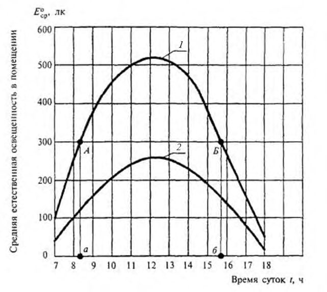
1 - изменение естественной освещенности в помещении при КЕО = 5 %; 2 -то же, при КЕО = 2,5 %; А - точка, соответствующая времени выключения искусственного освещения утром; Б точка, соответствующая времени включения искусственного освещения вечером
Рисунок Г.1 График изменения естественной освещенности в помещении в течение рабочего дня
- 6) проецируют точки А и Б пересечения с кривой 1 на ось абсцисс. Точка а на оси абсцисс соответствует времени t a = 8 ч 20 мин, точка б - tб = 15 ч 45 мин.
Время использования естественного освещения в рабочей комнате при среднем КЕО = 3 %, определяют как разность t б - ta = 7 ч 25 мин.
- Г.3 Из рисунка Г.1 следует, что горизонталь, соответствующая освещенности 400 лк, не пересекается с кривой изменения естественной освещенности при среднем КЕО = 2,5 %, это означает, что время использования естественного освещения в рабочей комнате с уменьшенной в два раза площадью фонарей равно нулю, т.е. в течение всего рабочего времени в рабочей комнате должно использоваться постоянно дополнительное искусственное освещение.
СП .1325800.2018
ДПриложение Д. Технико-экономическая оценка систем естественного освещения по энергетическим затратам
Д.1 Технико-экономическая оценка систем естественного освещения по энергетическим затратам рассматривается на примере оценки системы естественного освещения в рабочем помещении здания, расположенного в первой группе административных районов по световому климату (см. приложение Е СП 52.13330.2016). Здание расположено в 60 м от параллельного здания высотой 27 м. Рабочее помещение имеет размеры в плане 6 6 м и высоту 3,6 м, одно окно высотой 2,4 м, шириной 2,4 м, высота подоконника - 0,8 м. Разряд зрительной работы, выполняемой в помещении, Б-1.
Д.2 Технико-экономическую оценку системы естественного освещения в рабочем помещении здания выполняют в следующей последовательности:
1) определяют по приложению Л СП 52.13330.2016 нормируемое значение КЕО е н данного помещения: при естественном освещении - 1,0 %, при совмещенном освещении - 0,60 %.
Норма освещенности от общего искусственного освещения в соответствии с разрядом и подразрядом зрительных работ по СП 52.13330 составляет 300 лк.
Расчетное значение КЕО е p , определенное по методике приложения А, составляет 0,61, что соответствует норме при системе совмещенного освещения.
Расчетное значение КЕО е p более е н при совмещенном освещении, но менее 0,8 e н при боковом естественном освещении;
2) рассматривают целесообразность перехода от системы совмещенного освещения к системе естественного освещения;
3) повышают норму искусственной освещенности в рассматриваемой системе совмещенного освещения на одну ступень в соответствии с пунктом 6.6 СП 52.13330.2016, что составляет 400 лк.
В альтернативном случае предлагается система естественного освещения в помещении, при которой окно имеет размеры 2,4 3,6 м. При этом расчетное значение КЕО составляет 0,91 % и необходимость повышения нормы искусственной освещенности отпадает;
4) проводят экономическое сравнение этих двух систем освещения:
- рассчитывают разницу единовременных затрат K на первую и вторую системы естественного освещения помещения по формуле (10.1).
- рассчитывают разницу среднегодовых затрат на потери теплоты за отопительный период Зт, обусловленную изменением системы естественного освещения помещения, по формулам (10.4) - (10.6)
- рассчитывают разницу среднегодовых затрат на потребление электрической энергии Зэ, обусловленную изменением системы естественного освещения помещения, по формуле (10.7). Установленную мощность системы искусственного освещения в первом случае (при нормируемой искусственной освещенности 400 лк) рассчитывают из условия, что удельная установленная мощность составляет ω1 = 20 Вт/м² , во втором случае (при нормируемой искусственной освещенности 300 лк) - ω2 = 16 Вт/м² . При этом потребление электроэнергии помещением в первом случае составит ω1 · S п = 20 36 = 720 Вт, а во втором случае - ω2 · S п = 16 36 = 576 Вт;
5) определяют расчетом по методике раздела 9 продолжительность использования искусственного освещения z в помещении, ч/год, и данные заносят в таблицу Д.1. В обоих случаях продолжительность использования искусственного освещения составляет полный рабочий день, т.е. 16 ч/сут. При этом z = 16 260 = 4160 ч/год.
СП .1325800.2018
Таблица Д.1 -Расчет продолжительности использования искусственного освещения
| Естественная освещенность на горизонтальной поверхности Е г в месяцы года | Естественная освещенность на горизонтальной поверхности Е г в месяцы года | Естественная освещенность на горизонтальной поверхности Е г в месяцы года | Естественная освещенность на горизонтальной поверхности Е г в месяцы года | Естественная освещенность на горизонтальной поверхности Е г в месяцы года | Естественная освещенность на горизонтальной поверхности Е г в месяцы года | Естественная освещенность на горизонтальной поверхности Е г в месяцы года | Естественная освещенность на горизонтальной поверхности Е г в месяцы года | Естественная освещенность на горизонтальной поверхности Е г в месяцы года | Естественная освещенность на горизонтальной поверхности Е г в месяцы года | Естественная освещенность на горизонтальной поверхности Е г в месяцы года | Естественная освещенность на горизонтальной поверхности Е г в месяцы года | |
|---|---|---|---|---|---|---|---|---|---|---|---|---|
| III | III | III | VI | VI | VI | IX | IX | IX | XII | XII | XII | |
| Наружная, клк | В расчетной точке, лк, при значе- нии КЕО | В расчетной точке, лк, при значе- нии КЕО | Наружная, клк | В расчетной точке, лк, при значении КЕО | В расчетной точке, лк, при значении КЕО | Наружная, клк | В расчетной точке, лк, при значе- нии КЕО | В расчетной точке, лк, при значе- нии КЕО | Наружная, клк | В расчетной точке, лк, при значении КЕО | В расчетной точке, лк, при значении КЕО | |
| Наружная, клк | 0,61 | 0,91 | Наружная, клк | 0,61 | 0,91 | Наружная, клк | 0,61 | 0,91 | Наружная, клк | 0,61 | 0,91 | |
| 6 | - | - | - | 5,7 | 35 | 52 | 0,8 | 5 | 7 | - | - | - |
| 7 | 2,3 | 14 | 21 | 8,5 | 52 | 77 | 3,5 | 21 | 32 | - | - | - |
| 8 | 5 | 31 | 46 | 11 | 67 | 100 | 5,7 | 35 | 52 | - | - | - |
| 9 | 7 | 43 | 64 | 13,2 | 81 | 120 | 7 | 43 | 64 | 1 | 6 | 9 |
| 10 | 8,5 | 52 | 77 | 15,3 | 93 | 139 | 9,5 | 58 | 86 | 2,2 | 13 | 20 |
| 11 | 10 | 61 | 91 | 17 | 104 | 155 | 11 | 67 | 100 | 3 | 18 | 27 |
| 12 | 10,5 | 64 | 96 | 17,5 | 107 | 159 | 11 | 67 | 100 | 3,5 | 21 | 32 |
| 13 | 10,2 | 62 | 93 | 17 | 104 | 155 | 10,5 | 64 | 96 | 3 | 18 | 27 |
| 14 | 9 | 55 | 82 | 15,5 | 95 | 141 | 9,3 | 57 | 85 | 2,2 | 13 | 20 |
| 15 | 7 | 43 | 64 | 13,2 | 81 | 120 | 7,5 | 46 | 68 | 0,8 | 5 | 7 |
| 16 | 5,2 | 32 | 47 | 11 | 67 | 100 | 5,2 | 32 | 47 | - | - | - |
| 17 | 3 | 18 | 27 | 8,5 | 52 | 77 | 2,8 | 17 | 25 | - | - | - |
| 18 | 0,8 | 5 | 7 | 5,7 | 35 | 52 | - | - | - | - | - | - |
| 19 | - | - | - | 3,5 | 21 | 32 | - | - | - | - | - | - |
| 20 | - | - | - | 1,3 | 8 | 12 | - | - | - | - | - | - |
- 6) рассчитывают экономию от снижения затрат по формуле (10.8)
- 7) проверяют условие окупаемости затрат на изменение системы естественного освещения помещения по формуле (10.9):
где р = 25 % -ная ставка по кредиту банка;
- 8) производят расчет срока окупаемости измененной системы естественного освещения помещения по формуле (10.10)
- Д.3 Единовременные затраты на изменение системы естественного освещения окупятся в течение восьми лет и, следовательно, такое изменение целесообразно.
Приложение Е
Освещенность различно ориентированных поверхностей при сплошной облачности и при ясном небе Таблица Е.1
| Географическая широта, град. с. ш. | Месяц | Освещенность горизонтальной поверхности в зависимости | Освещенность горизонтальной поверхности в зависимости | Освещенность горизонтальной поверхности в зависимости | Освещенность горизонтальной поверхности в зависимости | Освещенность горизонтальной поверхности в зависимости | Освещенность горизонтальной поверхности в зависимости | Освещенность горизонтальной поверхности в зависимости | от времени | Е г ° при суток, | сплошной ч:мин | облачности, | клк | Освещенность горизонтальной поверхности в зависимости | Освещенность горизонтальной поверхности в зависимости | Освещенность горизонтальной поверхности в зависимости |
|---|---|---|---|---|---|---|---|---|---|---|---|---|---|---|---|---|
| Месяц | 6:00 | 7:00 | 8:00 | 9:00 | 10:00 | 11:00 | 12:00 | 13:00 | 14:00 | 15:00 | 16:00 | 17:00 | 18:00 | 19:00 | 20:00 | |
| 35 | III | - | 3,5 | 7 | 10 | 13 | 15,5 | 16,5 | 16 | 14 | 11 | 8 | 4,2 | 0,8 | - | - |
| 35 | VI | 4 | 7 | 11 | 15 | 18,5 | 21 | 22 | 21 | 18,5 | 15 | 11 | 7 | 4 | 0,8 | - |
| 35 | IX | 1 | 4,2 | 8 | 11,5 | 14 | 16 | 17 | 16 | 14 | 10,5 | 7 | 3,7 | - | - | - |
| 35 | XII | - | - | 2,8 | 5 | 7,5 | 9 | 9,3 | 8,7 | 7 | 5 | 2,5 | - | - | - | - |
| 45 | III | - | 2,8 | 5,6 | 8,5 | 11 | 12,5 | 13,5 | 13 | 11,8 | 9,3 | 6,6 | 3,5 | 0,8 | - | - |
| 45 | VI | 5 | 8 | 11 | 14,3 | 17,5 | 19,5 | 20 | 19,5 | 17,5 | 14,3 | 11,5 | 7,5 | 5 | 2,2 | - |
| 45 | IX | 0,8 | 4 | 7 | 9,5 | 12 | 13,5 | 14 | 13,5 | 11,7 | 9 | 6,3 | 3,4 | - | - | - |
| 45 | XII | - | - | 1 | 3,3 | 5 | 6 | 6,3 | 6 | 5 | 3 | 0,8 | - | - | - | - |
| 55 | II | - | 2,3 | 5 | 7 | 8,5 | 10 | 10,5 | 10,2 | 9 | 7 | 5,2 | 3 | 0,8 | - | - |
| 55 | VI | 5,7 | 8,5 | 11 | 13,2 | 15,3 | 17 | 17,5 | 17 | 15,5 | 13,2 | 11 | 8,5 | 5,7 | 3,5 | 1,3 |
| 55 | IX | 0,8 | 3,5 | 5,7 | 7 | 9,5 | 11 | 11 | 10,5 | 9,3 | 7,5 | 5,2 | 2,8 | - | - | - |
| 55 | XII | - | - | - | 1 | 2,2 | 3 | 3,5 | 3 | 2,2 | 0,8 | - | - | - | - | - |
| 65 | III | - | 2 | 4 | 5 | 6,3 | 7 | 6,5 | 7 | 6,5 | 5, | 4 | 2,3 | - | - | - |
| 65 | VI | 6,5 | 8,2 | 10,5 | 11,6 | 13,5 | 14 | 14,3 | 14 | 13 | 11,6 | 10 | 8,5 | 6,5 | 4,5 | 2,8 |
| 65 | IX | 0,8 | 2,5 | 4 | 5,6 | 7 | 8 | 8,3 | 8 | 7 | 5,6 | 4 | 2 | 0,5 | - | - |
| 65 | XII | - | - | - | - | - | - | 0,8 | - | - | - | - | - | - | - | - |
Таблица Е.2
| Географическая широта, град. с. ш. | Месяц | Освещенность различно ориентированных вертикальных поверхностей Е в ° при сплошной облачности, клк в зависимости от времени суток, ч:мин | Освещенность различно ориентированных вертикальных поверхностей Е в ° при сплошной облачности, клк в зависимости от времени суток, ч:мин | Освещенность различно ориентированных вертикальных поверхностей Е в ° при сплошной облачности, клк в зависимости от времени суток, ч:мин | Освещенность различно ориентированных вертикальных поверхностей Е в ° при сплошной облачности, клк в зависимости от времени суток, ч:мин | Освещенность различно ориентированных вертикальных поверхностей Е в ° при сплошной облачности, клк в зависимости от времени суток, ч:мин | Освещенность различно ориентированных вертикальных поверхностей Е в ° при сплошной облачности, клк в зависимости от времени суток, ч:мин | Освещенность различно ориентированных вертикальных поверхностей Е в ° при сплошной облачности, клк в зависимости от времени суток, ч:мин | Освещенность различно ориентированных вертикальных поверхностей Е в ° при сплошной облачности, клк в зависимости от времени суток, ч:мин | Освещенность различно ориентированных вертикальных поверхностей Е в ° при сплошной облачности, клк в зависимости от времени суток, ч:мин | Освещенность различно ориентированных вертикальных поверхностей Е в ° при сплошной облачности, клк в зависимости от времени суток, ч:мин | Освещенность различно ориентированных вертикальных поверхностей Е в ° при сплошной облачности, клк в зависимости от времени суток, ч:мин | Освещенность различно ориентированных вертикальных поверхностей Е в ° при сплошной облачности, клк в зависимости от времени суток, ч:мин | Освещенность различно ориентированных вертикальных поверхностей Е в ° при сплошной облачности, клк в зависимости от времени суток, ч:мин | Освещенность различно ориентированных вертикальных поверхностей Е в ° при сплошной облачности, клк в зависимости от времени суток, ч:мин | Освещенность различно ориентированных вертикальных поверхностей Е в ° при сплошной облачности, клк в зависимости от времени суток, ч:мин | Освещенность различно ориентированных вертикальных поверхностей Е в ° при сплошной облачности, клк в зависимости от времени суток, ч:мин |
|---|---|---|---|---|---|---|---|---|---|---|---|---|---|---|---|---|---|
| Географическая широта, град. с. ш. | Месяц | 5:00 | 6:00 | 7:00 | 8:00 | 9:00 | 10:00 | 11:00 | 12:00 | 13:00 | 14:00 | 15:00 | 16:00 | 17:00 | 18:00 | 19:00 | 20:00 |
| 35 | III | - | - | 1,4 | 3,2 | 4,9 | 6,4 | 7,4 | 7,7 | 7,6 | 7,0 | 5,5 | 4,0 | 1,8 | - | - | - |
| 35 | VI | - | 1,8 | 4,0 | 5,7 | 7,5 | 8,6 | 9,2 | 9,6 | 9,2 | 8,6 | 7,5 | 5,7 | 4,0 | 1,8 | - | - |
| 35 | IX | - | 1,0 | 2,0 | 4,2 | 5,9 | 7,4 | 8,0 | 8,3 | 8,0 | 7,2 | 5,5 | 4,0 | 1,8 | - | - | - |
| 35 | XII | - | - | - | 1,4 | 2,4 | 4,0 | 4,5 | 4,7 | 4,4 | 3,8 | 2,4 | 1,4 | - | - | - | - |
| 45 | III | - | - | 1,2 | 2,4 | 4,2 | 5,3 | 6,0 | 6,4 | 6,2 | 5,7 | 4,4 | 3,2 | 1,6 | - | - | - |
| 45 | VI | 1,2 | 2,2 | 4,2 | 5,7 | 7,3 | 8,3 | 8,8 | 9,0 | 8,8 | 8,3 | 7,3 | 5,8 | 4,0 | 2,2 | 1,1 | - |
| 45 | IX | - | 0,6 | 1,9 | 3,8 | 5,1 | 6,2 | 7,1 | 7,3 | 7,1 | 6,0 | 4,9 | 3,4 | 1,7 | 0,1 | - | - |
| 45 | XII | - | - | - | 0,6 | 1,6 | 2,4 | 3,0 | 3,2 | 3,0 | 2,2 | 1,5 | 0,2 | - | - | - | - |
| 55 | III | - | - | 1,0 | 1,8 | 3,2 | 4,1 | 4,5 | 4,9 | 4,9 | 4,3 | 3,6 | 2,2 | 2,4 | - | - | - |
| 55 | VI | 1,6 | 2,8 | 4,3 | 5,6 | 6,8 | 7,6 | 8,1 | 8,3 | 8,1 | 7,7 | 6,8 | 5,6 | 4,3 | 2,6 | 1,6 | - |
| 55 | IX | - | 0,6 | 1,7 | 3,0 | 4,2 | 5,1 | 5,7 | 5,8 | 5,6 | 4,9 | 4,1 | 2,6 | 1,5 | 0,1 | - | - |
| 55 | XII | - | - | - | - | 0,6 | 1,2 | 1,5 | 1,6 | 1,5 | 1,2 | 0,4 | - | - | - | - | - |
| 65 | III | - | - | 0,6 | 1,5 | 1,9 | 2,6 | 3,2 | 3,4 | 3,4 | 3,0 | 2,2 | 1,6 | 1,0 | - | - | - |
| 65 | VI | 2,0 | 3,2 | 4,3 | 5,3 | 5,9 | 6,8 | 7,2 | 7,3 | 7,1 | 6,8 | 5,9 | 5,3 | 4,3 | 3,2 | 1,9 | 1,4 |
| 65 | IX | - | 0,6 | 1,4 | 2,0 | 3,0 | 3,8 | 4,2 | 4,3 | 4,2 | 3,8 | 3,0 | 2,0 | 1,3 | - | - | - |
| 65 | XII | - | - | - | - | - | - | 0 | 0,4 | 0 | - | - | - | - | - | - | - |
Таблица Е.3
| Географическая ши- рота, град. с. ш. | Месяц | Освещенность горизонтальной поверхности Е г я при ясном небе, клк Суммарная освещенность на горизонтальной поверхности Е г сум от ясного неба и солнца, клк, в зависимости от времени суток, ч:мин | Освещенность горизонтальной поверхности Е г я при ясном небе, клк Суммарная освещенность на горизонтальной поверхности Е г сум от ясного неба и солнца, клк, в зависимости от времени суток, ч:мин | Освещенность горизонтальной поверхности Е г я при ясном небе, клк Суммарная освещенность на горизонтальной поверхности Е г сум от ясного неба и солнца, клк, в зависимости от времени суток, ч:мин | Освещенность горизонтальной поверхности Е г я при ясном небе, клк Суммарная освещенность на горизонтальной поверхности Е г сум от ясного неба и солнца, клк, в зависимости от времени суток, ч:мин | Освещенность горизонтальной поверхности Е г я при ясном небе, клк Суммарная освещенность на горизонтальной поверхности Е г сум от ясного неба и солнца, клк, в зависимости от времени суток, ч:мин | Освещенность горизонтальной поверхности Е г я при ясном небе, клк Суммарная освещенность на горизонтальной поверхности Е г сум от ясного неба и солнца, клк, в зависимости от времени суток, ч:мин | Освещенность горизонтальной поверхности Е г я при ясном небе, клк Суммарная освещенность на горизонтальной поверхности Е г сум от ясного неба и солнца, клк, в зависимости от времени суток, ч:мин | Освещенность горизонтальной поверхности Е г я при ясном небе, клк Суммарная освещенность на горизонтальной поверхности Е г сум от ясного неба и солнца, клк, в зависимости от времени суток, ч:мин | Освещенность горизонтальной поверхности Е г я при ясном небе, клк Суммарная освещенность на горизонтальной поверхности Е г сум от ясного неба и солнца, клк, в зависимости от времени суток, ч:мин | Освещенность горизонтальной поверхности Е г я при ясном небе, клк Суммарная освещенность на горизонтальной поверхности Е г сум от ясного неба и солнца, клк, в зависимости от времени суток, ч:мин | Освещенность горизонтальной поверхности Е г я при ясном небе, клк Суммарная освещенность на горизонтальной поверхности Е г сум от ясного неба и солнца, клк, в зависимости от времени суток, ч:мин | Освещенность горизонтальной поверхности Е г я при ясном небе, клк Суммарная освещенность на горизонтальной поверхности Е г сум от ясного неба и солнца, клк, в зависимости от времени суток, ч:мин | Освещенность горизонтальной поверхности Е г я при ясном небе, клк Суммарная освещенность на горизонтальной поверхности Е г сум от ясного неба и солнца, клк, в зависимости от времени суток, ч:мин | Освещенность горизонтальной поверхности Е г я при ясном небе, клк Суммарная освещенность на горизонтальной поверхности Е г сум от ясного неба и солнца, клк, в зависимости от времени суток, ч:мин | Освещенность горизонтальной поверхности Е г я при ясном небе, клк Суммарная освещенность на горизонтальной поверхности Е г сум от ясного неба и солнца, клк, в зависимости от времени суток, ч:мин | Освещенность горизонтальной поверхности Е г я при ясном небе, клк Суммарная освещенность на горизонтальной поверхности Е г сум от ясного неба и солнца, клк, в зависимости от времени суток, ч:мин |
|---|---|---|---|---|---|---|---|---|---|---|---|---|---|---|---|---|---|
| Географическая ши- рота, град. с. ш. | Месяц | 5:00 | 6:00 | 7:00 | 8:00 | 9:00 | 10:00 | 11:00 | 12:00 | 13:00 | 14:00 | 15:00 | 16:00 | 17:00 | 18:00 | 19:00 | 20:00 |
| 35 | III | - | - | 3,7 7,8 | 8,5 24,0 | 13,3 44,0 | 16,4 61,7 | 18,0 70,6 | 18,5 75,2 | 18,3 73,8 | 17,0 65,2 | 14,5 49,8 | 10,5 31,0 | 5,3 12,6 | 0,6 1,0 | - | - |
| 35 | VI | 1,0 1,7 | 5,3 12,6 | 10,4 31,0 | 15,1 53,8 | 18,1 72,3 | 20,1 87,5 | 21,7 95,0 | 21,5 99,0 | 21,7 95,0 | 20,1 87,5 | 18,1 72,3 | 15,1 53,8 | 10,4 31,0 | 5,3 12,6 | 1,0 1,7 | - |
| 35 | IX | - | 1,8 3,0 | 6,0 14,9 | 11,3 34,1 | 15,7 56,5 | 17,7 68,8 | 19,0 79,6 | 19,5 83,0 | 19,0 79,6 | 17,5 67,8 | 14,8 51,9 | 10,3 31,0 | 5,3 12,6 | 0,6 0,9 | - | - |
| 35 | XII | - | - | - | 3,7 8,0 | 6,9 17,9 | 10,5 31,0 | 12,5 40,0 | 13,0 42,0 | 12,1 38,0 | 10,0 29,5 | 6,9 17,9 | 3,2 6,8 | - | - | - | - |
| 45 | III | - | - | 4,0 5,9 | 8,5 18,0 | 12,7 34,1 | 15,8 48,0 | 18,0 58,3 | 18,6 61,5 | 18,3 60,0 | 16,9 53,7 | 13,6 38,1 | 10,3 24,0 | 5,9 10,0 | - | - | - |
| 45 | VI | 2,9 5,9 | 6,5 16,2 | 11,3 34,1 | 15,3 53,8 | 17,7 69,0 | 19,5 83,1 | 20,6 90,1 | 21,1 92,3 | 20,6 90,1 | 19,5 83,1 | 17,7 69,0 | 15,4 55,0 | 10,5 31,0 | 6,5 16,2 | 2,5 4,8 | - |
| 45 | IX | - | 1,4 2,1 | 5,7 14,0 | 10,0 29,5 | 13,7 46,0 | 16,1 60,0 | 17,1 66,2 | 17,7 69,0 | 17,1 66,2 | 15,9 58,4 | 13,3 43,9 | 9,0 25,9 | 4,9 11,5 | 0,6 0,9 | - | - |
| 45 | XII | - | - | - | 1,9 2,1 | 5,9 10,0 | 8,6 18,0 | 9,9 22,2 | 10,3 24,0 | 9,9 22,2 | 8,0 16,0 | 5,5 9,9 | 1,5 1,6 | - | - | - | - |
| 55 | III | - | - | 3,0 4,0 | 6,7 12,5 | 10,3 24,0 | 12,3 38,5 | 14,0 40,0 | 14,8 43,9 | 14,8 43,9 | 13,1 36,1 | 11,1 27,7 | 8,1 16,3 | 4,5 6,9 | - | - | - |
| 55 | VI | 4,5 10,0 | 7,7 21,0 | 11,7 36,0 | 14,8 51,8 | 16,9 64,0 | 18,3 73,9 | 19,2 80,8 | 19,5 83,1 | 19,2 80,8 | 18,5 75,0 | 16,9 64,0 | 14,8 51,8 | 11,7 36,0 | 7,3 19,4 | 4,5 10,0 | - |
| 55 | IX | - | 1,4 2,1 | 4,9 11,4 | 8,1 22,1 | 11,3 34,1 | 13,7 46,0 | 15,1 53,8 | 15,4 55,0 | 14,9 51,8 | 13,3 44,0 | 10,9 32,5 | 7,3 19,2 | 4,1 9,0 | 0,6 0,9 | - | - |
| 55 | XII | - | - | - | - | 2,0 2,1 | 4,0 6,0 | 5,5 9,5 | 6,0 10,0 | 5,5 9,5 | 4,0 6,0 | - | - | - | - | - | - |
| 65 | III | - | - | 2,0 2,1 | 5,5 9,0 | 7,1 14,0 | 9,0 19,3 | 10,3 24,0 | 10,7 25,8 | 10,7 25,8 | 10,0 22,1 | 8,1 16,2 | 5,9 10,1 | 3,0 4,0 | - | - | - |
| 65 | VI | 6,1 15,0 | 8,6 24,0 | 11,3 34,2 | 14,1 48,0 | 15,7 56,6 | 16,9 64,0 | 17,5 67,8 | 17,7 69,0 | 17,3 66,1 | 16,9 64,0 | 15,7 56,6 | 14,1 48,0 | 11,7 36,1 | 8,6 24,0 | 5,7 13,9 | 3,7 8,0 |
| 65 | IX | - | 1,4 2,1 | 3,7 8,0 | 6,1 15,0 | 8,2 22,4 | 10,0 29,5 | 11,3 34,3 | 11,7 36,0 | 11,3 34,3 | 10,0 29,5 | 8,2 22,4 | 6,1 15,0 | 3,2 6,7 | - | - | - |
| 65 | XII | - | - | - | - | - | - | 0,0 0,0 | 1,8 1,8 | 0,0 0,0 | - | - | - | - | - | - | - |
Таблица Е.4
| Географическая широ- та, град. с. ш. | Ориентация поверхности | Месяц | Освещенность различно ориентированных вертикальных поверхностей Е в я при ясном небе, клк Суммарная освещенность различно ориентированных вертикальных поверхностей Е в сум от ясного неба и солнца, клк, в зависимости от времени суток, ч:мин | Освещенность различно ориентированных вертикальных поверхностей Е в я при ясном небе, клк Суммарная освещенность различно ориентированных вертикальных поверхностей Е в сум от ясного неба и солнца, клк, в зависимости от времени суток, ч:мин | Освещенность различно ориентированных вертикальных поверхностей Е в я при ясном небе, клк Суммарная освещенность различно ориентированных вертикальных поверхностей Е в сум от ясного неба и солнца, клк, в зависимости от времени суток, ч:мин | Освещенность различно ориентированных вертикальных поверхностей Е в я при ясном небе, клк Суммарная освещенность различно ориентированных вертикальных поверхностей Е в сум от ясного неба и солнца, клк, в зависимости от времени суток, ч:мин | Освещенность различно ориентированных вертикальных поверхностей Е в я при ясном небе, клк Суммарная освещенность различно ориентированных вертикальных поверхностей Е в сум от ясного неба и солнца, клк, в зависимости от времени суток, ч:мин | Освещенность различно ориентированных вертикальных поверхностей Е в я при ясном небе, клк Суммарная освещенность различно ориентированных вертикальных поверхностей Е в сум от ясного неба и солнца, клк, в зависимости от времени суток, ч:мин | Освещенность различно ориентированных вертикальных поверхностей Е в я при ясном небе, клк Суммарная освещенность различно ориентированных вертикальных поверхностей Е в сум от ясного неба и солнца, клк, в зависимости от времени суток, ч:мин | Освещенность различно ориентированных вертикальных поверхностей Е в я при ясном небе, клк Суммарная освещенность различно ориентированных вертикальных поверхностей Е в сум от ясного неба и солнца, клк, в зависимости от времени суток, ч:мин | Освещенность различно ориентированных вертикальных поверхностей Е в я при ясном небе, клк Суммарная освещенность различно ориентированных вертикальных поверхностей Е в сум от ясного неба и солнца, клк, в зависимости от времени суток, ч:мин | Освещенность различно ориентированных вертикальных поверхностей Е в я при ясном небе, клк Суммарная освещенность различно ориентированных вертикальных поверхностей Е в сум от ясного неба и солнца, клк, в зависимости от времени суток, ч:мин | Освещенность различно ориентированных вертикальных поверхностей Е в я при ясном небе, клк Суммарная освещенность различно ориентированных вертикальных поверхностей Е в сум от ясного неба и солнца, клк, в зависимости от времени суток, ч:мин | Освещенность различно ориентированных вертикальных поверхностей Е в я при ясном небе, клк Суммарная освещенность различно ориентированных вертикальных поверхностей Е в сум от ясного неба и солнца, клк, в зависимости от времени суток, ч:мин | Освещенность различно ориентированных вертикальных поверхностей Е в я при ясном небе, клк Суммарная освещенность различно ориентированных вертикальных поверхностей Е в сум от ясного неба и солнца, клк, в зависимости от времени суток, ч:мин | Освещенность различно ориентированных вертикальных поверхностей Е в я при ясном небе, клк Суммарная освещенность различно ориентированных вертикальных поверхностей Е в сум от ясного неба и солнца, клк, в зависимости от времени суток, ч:мин | Освещенность различно ориентированных вертикальных поверхностей Е в я при ясном небе, клк Суммарная освещенность различно ориентированных вертикальных поверхностей Е в сум от ясного неба и солнца, клк, в зависимости от времени суток, ч:мин | Освещенность различно ориентированных вертикальных поверхностей Е в я при ясном небе, клк Суммарная освещенность различно ориентированных вертикальных поверхностей Е в сум от ясного неба и солнца, клк, в зависимости от времени суток, ч:мин |
|---|---|---|---|---|---|---|---|---|---|---|---|---|---|---|---|---|---|---|
| Географическая широ- та, град. с. ш. | Ориентация поверхности | Месяц | 5:00 | 6:00 | 7:00 | 8:00 | 9:00 | 10:00 | 11:00 | 12:00 | 13:00 | 14:00 | 15:00 | 16:00 | 17:00 | 18:00 | 19:00 | 20:00 |
| 35 | С | III | - | - | - | 6,5 6,5 | 9,8 9,8 | 9,6 9,6 | 11,3 11,3 | 11,8 11,8 | 11,4 11,4 | 10,1 10,1 | 10,1 10,1 | 8,2 8,2 | 3,7 3,5 0,2 0,2 | - | - | |
| 35 | С | VI | 0,6 4,4 | 5,7 17,1 | 11,2 21,5 | 12,4 15,5 | 13,6 13,6 | 15,1 15,1 | 16,5 16,5 | 16,4 16,4 | 16,5 16,5 | 15,0 15,0 | 13,6 13,6 | 12,4 15,4 | 11,2 21,5 | 5,7 17,1 | 0,6 4,4 | - |
| 35 | С | IX | - | 1,2 1,7 | 4,6 4,6 | 9,2 9,2 | 9,4 9,4 | 11,6 11,6 | 13,0 13,0 | 13,1 13,1 | 13,0 13,0 | 11,4 11,4 | 10,0 10,0 | 8,7 8,7 | 4,1 4,1 | 0,2 0,4 | - | - |
| 35 | С | XII | - | - | - | 2,3 2,3 | 4,4 4,4 | 7,2 7,2 | 8,5 8,5 | 8,3 8,3 | 8,1 8,1 | 6,8 6,8 | 4,4 4,4 | 2,0 2,0 | - | - | - | - |
| 35 | СВ | III | - | - | 4,4 18,6 | 10,4 28,7 | 14,4 28,0 | 12,6 14,8 | 12,4 12,4 | 12,0 12,0 | 11,6 11,6 | 10,0 10,0 | 8,5 8,5 | 7,1 7,1 | 3,1 3,1 | 0,2 0,2 | - | - |
| 35 | СВ | VI | 0,8 8,4 | 8,0 38,4 | 16,0 54,0 | 17,5 53,9 | 17,5 46,7 | 19,6 35,8 | 19,2 46,0 | 17,6 17,6 | 15,3 15,3 | 13,7 13,7 | 11,7 11,7 | 9,4 9,4 | 7,7 7,7 | 3,4 3,4 | 0,4 0,4 | - |
| 35 | СВ | IX | - | 2,0 12,6 | 7,8 3,0 | 14,3 36,0 | 13,9 28,8 | 13,6 26,2 | 13,9 13,9 | 13,1 13,1 | 12,8 12,8 | 10,4 10,4 | 8,6 8,6 | 7,2 7,2 | 3,1 3,1 | 0,2 0,2 | - | - |
| 35 | СВ | XII | - | - | - | 3,2 6,2 | 5,5 5,5 | 8,6 8,6 | 9,4 9,4 | 9,2 9,2 | 8,3 8,3 | 6,7 6,7 | 4,1 4,1 | 2,0 2,0 | - | - | - | - |
| 35 | В | III | - | - | 5,9 29,4 | 13,7 53,4 | 19,3 61,0 | 16,9 48,9 | 16,2 36,6 | 14,8 17,3 | 12,8 12,8 | 10,3 10,3 | 9,4 9,4 | 7,1 7,1 | 3,1 3,1 | 0,2 0,2 | - | - |
| 35 | В | VI | 0,7 7,8 | 8,2 39,0 | 17,6 61,4 | 21,2 69,4 | 21,3 66,6 | 22,9 57,1 | 23,5 42,0 | 20,4 20,4 | 16,0 16,0 | 13,4 13,4 | 10,9 10,9 | 8,5 8,5 | 7,0 7,0 | 3,1 3,1 | 0,3 0,3 | - |
| 35 | В | IX | - | 2,5 16,9 | 10,1 47,0 | 18,3 61,9 | 18,4 61,9 | 17,5 49,9 | 18,2 35,9 | 15,4 15,4 | 13,7 13,7 | 11,1 11,1 | 8,7 8,7 | 7,0 7,0 | 3,1 3,1 | 0,2 0,2 | - | - |
| 35 | В | XII | - | - | - | 6,0 23,8 | 9,1 35,3 | 13,4 35,1 | 13,9 25,1 | 12,0 13,0 | 9,5 9,5 | 7,4 7,4 | 4,5 4,5 | 2,0 2,0 | - - | - | - | |
| 35 | ЮВ | III | - | - | 5,0 24,3 | 13,3 51,1 | 20,9 68,8 | 20,9 68,4 | 19,8 67,3 | 19,2 52,8 | 16,9 36,5 | 13,4 16,8 | 11,8 11,8 | 8,1 8,1 | 3,3 0,2 | 0,2 | - | - |
| 35 | ЮВ | VI | 0,5 2,8 | 6,0 19,6 | 13,8 38,6 | 16,8 48,8 | 18,1 51,2 | 22,1 53,9 | 26,6 50,2 | 24,6 36,5 | 18,5 18,5 | 14,6 14,6 | 11,8 11,8 | 9,1 9,1 | 3,3 7,3 7,3 | 3,1 3,1 | 0,6 0,6 | - |
| 35 | ЮВ | IX | - | 1,9 11,8 | 8,6 38,2 | 17,5 58,0 | 19,4 65,2 | 21,3 67,4 | 21,6 60,4 | 20,2 49,2 | 17,3 30,1 | 13,1 13,1 | 10,2 10,2 | 7,8 7,8 | 3,2 3,2 | 0,2 0,2 | - | - |
| 35 | ЮВ | XII | - | - | - | 5,9 | 11,6 | 17,2 | 19,1 | 17,7 | 15,2 | 11,0 | 5,8 | 2,3 | - | - | - | - |
| Географическая широ- та, град. с. ш. | Ориентация поверхности | Месяц | Освещенность различно ориентированных вертикальных поверхностей Е в я при ясном небе, клк Суммарная освещенность различно ориентированных вертикальных поверхностей Е в сум от ясного неба и солнца, клк, в зависимости от времени суток, ч:мин | Освещенность различно ориентированных вертикальных поверхностей Е в я при ясном небе, клк Суммарная освещенность различно ориентированных вертикальных поверхностей Е в сум от ясного неба и солнца, клк, в зависимости от времени суток, ч:мин | Освещенность различно ориентированных вертикальных поверхностей Е в я при ясном небе, клк Суммарная освещенность различно ориентированных вертикальных поверхностей Е в сум от ясного неба и солнца, клк, в зависимости от времени суток, ч:мин | Освещенность различно ориентированных вертикальных поверхностей Е в я при ясном небе, клк Суммарная освещенность различно ориентированных вертикальных поверхностей Е в сум от ясного неба и солнца, клк, в зависимости от времени суток, ч:мин | Освещенность различно ориентированных вертикальных поверхностей Е в я при ясном небе, клк Суммарная освещенность различно ориентированных вертикальных поверхностей Е в сум от ясного неба и солнца, клк, в зависимости от времени суток, ч:мин | Освещенность различно ориентированных вертикальных поверхностей Е в я при ясном небе, клк Суммарная освещенность различно ориентированных вертикальных поверхностей Е в сум от ясного неба и солнца, клк, в зависимости от времени суток, ч:мин | Освещенность различно ориентированных вертикальных поверхностей Е в я при ясном небе, клк Суммарная освещенность различно ориентированных вертикальных поверхностей Е в сум от ясного неба и солнца, клк, в зависимости от времени суток, ч:мин | Освещенность различно ориентированных вертикальных поверхностей Е в я при ясном небе, клк Суммарная освещенность различно ориентированных вертикальных поверхностей Е в сум от ясного неба и солнца, клк, в зависимости от времени суток, ч:мин | Освещенность различно ориентированных вертикальных поверхностей Е в я при ясном небе, клк Суммарная освещенность различно ориентированных вертикальных поверхностей Е в сум от ясного неба и солнца, клк, в зависимости от времени суток, ч:мин | Освещенность различно ориентированных вертикальных поверхностей Е в я при ясном небе, клк Суммарная освещенность различно ориентированных вертикальных поверхностей Е в сум от ясного неба и солнца, клк, в зависимости от времени суток, ч:мин | Освещенность различно ориентированных вертикальных поверхностей Е в я при ясном небе, клк Суммарная освещенность различно ориентированных вертикальных поверхностей Е в сум от ясного неба и солнца, клк, в зависимости от времени суток, ч:мин | Освещенность различно ориентированных вертикальных поверхностей Е в я при ясном небе, клк Суммарная освещенность различно ориентированных вертикальных поверхностей Е в сум от ясного неба и солнца, клк, в зависимости от времени суток, ч:мин | Освещенность различно ориентированных вертикальных поверхностей Е в я при ясном небе, клк Суммарная освещенность различно ориентированных вертикальных поверхностей Е в сум от ясного неба и солнца, клк, в зависимости от времени суток, ч:мин | Освещенность различно ориентированных вертикальных поверхностей Е в я при ясном небе, клк Суммарная освещенность различно ориентированных вертикальных поверхностей Е в сум от ясного неба и солнца, клк, в зависимости от времени суток, ч:мин | Освещенность различно ориентированных вертикальных поверхностей Е в я при ясном небе, клк Суммарная освещенность различно ориентированных вертикальных поверхностей Е в сум от ясного неба и солнца, клк, в зависимости от времени суток, ч:мин | Освещенность различно ориентированных вертикальных поверхностей Е в я при ясном небе, клк Суммарная освещенность различно ориентированных вертикальных поверхностей Е в сум от ясного неба и солнца, клк, в зависимости от времени суток, ч:мин |
|---|---|---|---|---|---|---|---|---|---|---|---|---|---|---|---|---|---|---|
| Географическая широ- та, град. с. ш. | Ориентация поверхности | Месяц | 5:00 | 6:00 | 7:00 | 8:00 | 9:00 | 10:00 | 11:00 | 12:00 | 13:00 | 14:00 | 15:00 | 16:00 | 17:00 | 18:00 | 19:00 | 20:00 |
| Ориентация поверхности | Месяц | 5:00 | 6:00 | 7:00 | 29,6 | 50,3 | 60,2 | 59,2 | 50,8 | 40,3 | 21,9 | 20,0 | 2,3 | |||||
| 35 | Ю | III | - | - | 3,3 7,1 | 9,4 22,5 | 16,3 40,0 | 16,6 48,6 | 19,0 59,0 | 21,7 65,8 | 20,1 61,9 | 17,4 52,6 | 16,5 43,4 | 12,6 29,6 | 5,0 12,0 | 0,2 0,5 | - | - |
| 35 | VI | 0,3 0,3 | 3,5 3,5 | 8,9 8,9 | 11,4 11,4 | 14,2 17,9 | 18,4 28,9 | 22,7 38,6 | 28,2 44,1 | 22,7 38,6 | 18,1 27,3 | 14,2 17,9 | 11,4 11,4 | 8,9 8,9 | 3,5 3,5 | 0,3 0,3 | ||
| 35 | IX | - | 1,2 1,2 | 5,4 10,1 | 13,0 26,3 | 14,9 36,9 | 17,4 48,7 | 21,3 59,0 | 23,4 60,6 | 21,1 57,7 | 17,0 46,8 | 15,9 37,3 | 11,6 22,8 | 4,6 7,5 | 0,2 0,2 | - | - | |
| 35 | XII | - | - | - | 4,5 19,4 | 9,4 38,2 | 16,2 55,8 | 19,3 64,6 | 21,8 68,9 | 19,7 64,3 | 15,4 53,5 | 9,3 37,6 | 3,8 17,3 | - | - | - | - | |
| 35 | ЮЗ | III | - | - | 2,3 2,3 | 6,3 6,3 | 10,7 10,7 | 12,4 12,4 | 15,4 29,9 | 18,8 47,9 | 19,8 59,5 | 19,6 65,8 | 20,6 68,5 | 16,6 57,7 | 7,6 34,7 | 0,4 3,8 | - | - |
| 35 | VI | 0,3 0,3 | 3,1 3,1 | 7,3 7,3 | 9,1 9,1 | 11,8 11,8 | 15,1 15,1 | 18,5 18,5 | 24,6 35,2 | 26,6 50,2 | 21,9 52,5 | 18,1 51,2 | 16,8 48,8 | 13,8 38,4 | 6,0 196 | 0,5 2,8 | - | |
| 35 | IX | - | 0,9 0,9 | 3,8 3,8 | 8,5 8,5 | 10,5 10,5 | 13,4 13,4 | 17,7 32,9 | 20,4 48,3 | 21,8 61,7 | 20,9 67,3 | 19,8 65,6 | 16,1 55,2 | 7,3 32,2 | 0,4 3,4 | - | - | |
| 35 | XII | - | - | - | 2,6 2,6 | 5,9 8,0 | 11,8 23,8 | 16,0 40,5 | 17,9 51,8 | 18,8 60,0 | 16,5 59,2 | 11,6 50,3 | 5,2 27,1 | - | - | - | - | |
| 35 | З | III | - | - | 2,3 2,3 | 5,4 5,4 | 8,9 8,9 | 9,6 9,6 | 12,0 12,0 | 14,1 14,1 | 16,4 32,4 | 16,6 46,8 | 18,6 59,0 | 16,6 58,2 | 8,5 40,3 | 0,5 6,0 | - | - |
| 35 | VI | 0,3 0,3 | 3,1 3,1 | 7,0 7,0 | 8,5 8,5 | 10,9 10,9 | 13,4 13,4 | 16,9 16,9 | 20,4 20,4 | 23,5 40,7 | 23,0 56,0 | 21,3 66,6 | 21,2 69,4 | 17,6 61,4 | 8,2 38,8 | 0,7 7,8 | - | |
| 35 | IX | - | 0,9 0,9 | 3,7 3,7 | 7,5 7,5 | 9,0 9,0 | 11,5 11,5 | 13,8 33,8 | 15,8 17,1 | 18,5 37,5 | 17,6 51,6 | 19,1 62,1 | 17,3 60,2 | 8,8 41,2 0,5 5,0 | - | - | ||
| 35 | XII | - | - | - | 2,3 2,3 | 4,5 4,5 | 7,9 7,9 | 10,5 10,5 | 12,2 13,2 | 14,5 28,3 | 12,6 34,6 | 9,1 358 | 4,4 22,7 | - | - | - | - | |
| 35 | СЗ | III | - | - | 2,3 2,3 | 5,5 5,5 | 8,6 8,6 | 9,5 9,5 | 11,1 11,1 | 12,1 12,1 | 12,5 12,5 | 12,6 12,6 | 14,2 23,4 | 12,7 30,4 | 6,4 24,2 | 0,4 3,3 | - | - |
| 35 | VI | 0,4 0,4 | 3,4 3,4 | 7,7 7,7 | 9,4 9,4 | 11,7 11,7 | 13,7 13,7 | 15,3 15,3 | 17,6 17,6 | 19,2 21,9 | 19,8 36,7 | 17,5 46,4 | 17,5 53,9 | 16,0 54,0 | 8,0 34,4 | 0,3 7,9 | - | |
| 35 | IX | - | 0,9 0,9 | 3,7 3,7 | 7,6 7,6 | 8,9 8,9 | 10,7 10,7 | 12,9 12,9 | 13,2 13,2 | 14,0 14,0 | 13,8 17,3 | 15,1 31,6 | 13,5 36,0 | 6,8 27,9 | 0,4 3,7 | - | - | |
| 35 | XII | - | - | - | 2,3 2,3 | 4,1 4,1 | 7,1 7,1 | 8,7 8,7 | 9,2 9,2 | 9,1 9,1 | 8,1 8,1 | 5,6 5,6 | 2,9 6,0 | - | - | - | - |
| Географическая широ- та, град. с. ш. | Ориентация поверхности | Месяц | Освещенность различно ориентированных вертикальных поверхностей Е в я при ясном небе, клк Суммарная освещенность различно ориентированных вертикальных поверхностей Е в сум от ясного неба и солнца, клк, в зависимости от времени суток, ч:мин | Освещенность различно ориентированных вертикальных поверхностей Е в я при ясном небе, клк Суммарная освещенность различно ориентированных вертикальных поверхностей Е в сум от ясного неба и солнца, клк, в зависимости от времени суток, ч:мин | Освещенность различно ориентированных вертикальных поверхностей Е в я при ясном небе, клк Суммарная освещенность различно ориентированных вертикальных поверхностей Е в сум от ясного неба и солнца, клк, в зависимости от времени суток, ч:мин | Освещенность различно ориентированных вертикальных поверхностей Е в я при ясном небе, клк Суммарная освещенность различно ориентированных вертикальных поверхностей Е в сум от ясного неба и солнца, клк, в зависимости от времени суток, ч:мин | Освещенность различно ориентированных вертикальных поверхностей Е в я при ясном небе, клк Суммарная освещенность различно ориентированных вертикальных поверхностей Е в сум от ясного неба и солнца, клк, в зависимости от времени суток, ч:мин | Освещенность различно ориентированных вертикальных поверхностей Е в я при ясном небе, клк Суммарная освещенность различно ориентированных вертикальных поверхностей Е в сум от ясного неба и солнца, клк, в зависимости от времени суток, ч:мин | Освещенность различно ориентированных вертикальных поверхностей Е в я при ясном небе, клк Суммарная освещенность различно ориентированных вертикальных поверхностей Е в сум от ясного неба и солнца, клк, в зависимости от времени суток, ч:мин | Освещенность различно ориентированных вертикальных поверхностей Е в я при ясном небе, клк Суммарная освещенность различно ориентированных вертикальных поверхностей Е в сум от ясного неба и солнца, клк, в зависимости от времени суток, ч:мин | Освещенность различно ориентированных вертикальных поверхностей Е в я при ясном небе, клк Суммарная освещенность различно ориентированных вертикальных поверхностей Е в сум от ясного неба и солнца, клк, в зависимости от времени суток, ч:мин | Освещенность различно ориентированных вертикальных поверхностей Е в я при ясном небе, клк Суммарная освещенность различно ориентированных вертикальных поверхностей Е в сум от ясного неба и солнца, клк, в зависимости от времени суток, ч:мин | Освещенность различно ориентированных вертикальных поверхностей Е в я при ясном небе, клк Суммарная освещенность различно ориентированных вертикальных поверхностей Е в сум от ясного неба и солнца, клк, в зависимости от времени суток, ч:мин | Освещенность различно ориентированных вертикальных поверхностей Е в я при ясном небе, клк Суммарная освещенность различно ориентированных вертикальных поверхностей Е в сум от ясного неба и солнца, клк, в зависимости от времени суток, ч:мин | Освещенность различно ориентированных вертикальных поверхностей Е в я при ясном небе, клк Суммарная освещенность различно ориентированных вертикальных поверхностей Е в сум от ясного неба и солнца, клк, в зависимости от времени суток, ч:мин | Освещенность различно ориентированных вертикальных поверхностей Е в я при ясном небе, клк Суммарная освещенность различно ориентированных вертикальных поверхностей Е в сум от ясного неба и солнца, клк, в зависимости от времени суток, ч:мин | Освещенность различно ориентированных вертикальных поверхностей Е в я при ясном небе, клк Суммарная освещенность различно ориентированных вертикальных поверхностей Е в сум от ясного неба и солнца, клк, в зависимости от времени суток, ч:мин | Освещенность различно ориентированных вертикальных поверхностей Е в я при ясном небе, клк Суммарная освещенность различно ориентированных вертикальных поверхностей Е в сум от ясного неба и солнца, клк, в зависимости от времени суток, ч:мин |
|---|---|---|---|---|---|---|---|---|---|---|---|---|---|---|---|---|---|---|
| Географическая широ- та, град. с. ш. | Ориентация поверхности | Месяц | 5:00 | 6:00 | 7:00 | 8:00 | 9:00 | 10:00 | 11:00 | 12:00 | 13:00 | 14:00 | 15:00 | 16:00 | 17:00 | 18:00 | 19:00 | 20:00 |
| 45 | С | III | - | - | 2,0 2,0 | 4,9 4,9 | 8,3 8,3 | 9,5 9,5 | 9,3 9,3 | 9,5 9,5 | 9,4 9,4 | 8,9 8,9 | 8,8 8,8 | 6,3 6,3 | 3,1 3,1 - | - | - | |
| 45 | С | VI | 3,3 13,0 | 6,6 16,8 | 11,6 18,8 | 11,4 11,4 | 12,3 12,3 | 13,5 13,5 | 14,3 14,3 | 14,8 14,8 | 14,3 14,3 | 13,5 13,5 | 12,3 12,3 | 11,4 11,4 | 10,7 17,6 | 6,6 16,8 | 2,7 11,0 | - |
| 45 | С | IX | - | 0,8 1,0 | 4,2 4 | 7,8 7,8 | 9,8 9,8 | 9,5 9,5 | 10,2 10,2 | 10,7 10,7 | 10,2 10,2 | 9,4 9,4 | 9,7 9,7 | 6,9 6,9 | 3,6 3,6 | 0,2 0,4 | - | - |
| 45 | С | XII | - | - | - | 0,6 0,6 | 2,6 2,6 | 4 4,3 | 5,0 5,0 | 5,2 5,2 | 5,0 5,0 | 3,8 3,8 | 2,5 2,5 | 0,3 0,3 | - | - | - | - |
| 45 | СВ | III | - | - | 3,4 15,3 | 7,8 23,0 | 12,2 22,0 | 11,7 11,7 | 10,5 10,5 | 9,6 9,6 | 9,5 9,5 | 8,5 8,5 | 8,0 8,0 | 5,4 5,4 | 2,6 2,6 | - | - | - |
| 45 | СВ | VI | 4,4 24,1 | 9,7 42,9 | 16,8 53,1 | 16,8 48,8 | 16,2 37,5 | 17,1 26,1 | 16,3 16,3 | 5,9 15,9 | 13,8 13,8 | 13,1 13,1 | 11,2 11,2 | 8,9 8,9 | 7,6 7,6 | 4,4 4,4 | 1,7 1,7 | - |
| 45 | СВ | IX | - | 1,3 9,2 | 7,1 26,8 | 12,0 30,1 | 14,1 24,0 | 12,1 12,1 | 11,5 11,5 | 11,5 11,5 | 10,2 10,2 | 9,2 9,2 | 8,5 8,5 | 6,0 6,0 | 2,9 2,9 | 0,2 0,2 | - | - |
| 45 | СВ | XII | - | - | - | 0,9 2,2 | 3,3 3,3 | 5,0 5,0 | 5,6 5,6 | 5,7 5,7 | 5,2 5,2 | 3,8 3,8 | 2,5 2,5 | 0,3 0,3 | - | - | - | - |
| 45 | В | III | - | - | 4,5 147 | 10,7 46,6 | 17,1 55,3 | 17,6 49,3 | 14,5 32,7 | 12,7 34,7 | 11,0 11,0 | 9,6 9,6 | 8,4 8,4 | 5,5 5,5 | 2,6 2,6 | - | - | - |
| 45 | В | VI | 4,1 22,4 | 10,3 40,8 | 19,1 64,1 | 21,2 69,4 | 19,9 64,2 | 21,1 54,8 | 20,8 39,1 | 17,9 17,9 | 14,9 14,9 | 13,1 13,1 | 11,0 11,0 | 8,6 8,6 | 7,0 7,0 | 3,8 3,8 | 1,5 1,5 | - |
| 45 | В | IX | - | 1,6 12,6 | 9,3 43,8 | 16,0 57,0 | 18,9 59,3 | 16,2 45,8 | 15,1 38,1 | 13,4 13,4 | 11,7 11,7 | 9,5 9,5 | 9,0 9,0 | 5,9 5,9 | 2,9 2,9 | 0,2 0,2 | - | - |
| 45 | В | XII | - | - | - | 1,3 10,0 | 5,7 23,6 | 8,3 20,2 | 8,1 17,2 | 7,3 7,3 | 6,2 6,2 | 4,4 4,4 | 2,5 2,5 | 0,3 0,3 | - - | - | - | |
| 45 | ЮВ | III | - | 3,9 20,9 | 10,7 46,3 | 18,9 63,4 | 22,1 70,3 | 19,0 63,0 | 17,0 51,8 | 15,2 36,8 | 13,1 20,5 | 10,9 10,9 | 6,6 6,5 | 2,7 2,7 | - | - | - | - |
| 45 | ЮВ | VI | 2,9 8,9 | 7,8 25,8 | 15,2 43,2 | 17,5 53,8 | 18,7 58,2 | 22,3 60,6 | 24,2 56,2 | 22,2 41,9 | 18,3 23,6 | 14,5 14,5 | 11,9 11,9 | 9,1 9,1 | 7,3 7,3 3,8 3,8 | 1,5 1,5 | - | |
| 45 | ЮВ | IX | - | 1,3 8,9 | 8,2 36,6 | 15,8 56,8 | 21,0 67,8 | 20,4 67,3 | 18,8 61,2 | 17,3 47,5 | 15,4 34,0 | 12,6 14,8 | 11,0 11,0 | 6,7 6,7 | 3,0 3,0 | 0,2 0,2 | - | - |
| 45 | ЮВ | XII | - | - | - | 1,6 12,5 | 7,4 35,1 | 11,0 48,2 | 12,2 46,7 | 11,7 41,2 | 10,1 30,7 | 6,7 17,6 | 3,4 5,2 | 0,4 0,4 | - | - | - | - |
| 45 | Ю | III | - | - | 2,6 6,2 | 7,7 22,9 | 14,9 40,6 | 18,3 54,9 | 18,9 63,6 | 20,8 69,3 | 19,3 65,5 | 18,0 56,8 | 16,3 44,4 | 10,4 28,7 | 4,4 11,3 | - | - | - |
| Географическая широ- та, град. с. ш. | Ориентация поверхности | Месяц | Освещенность различно ориентированных вертикальных поверхностей Е в я при ясном небе, клк Суммарная освещенность различно ориентированных вертикальных поверхностей Е в сум от ясного неба и солнца, клк, в зависимости от времени суток, ч:мин | Освещенность различно ориентированных вертикальных поверхностей Е в я при ясном небе, клк Суммарная освещенность различно ориентированных вертикальных поверхностей Е в сум от ясного неба и солнца, клк, в зависимости от времени суток, ч:мин | Освещенность различно ориентированных вертикальных поверхностей Е в я при ясном небе, клк Суммарная освещенность различно ориентированных вертикальных поверхностей Е в сум от ясного неба и солнца, клк, в зависимости от времени суток, ч:мин | Освещенность различно ориентированных вертикальных поверхностей Е в я при ясном небе, клк Суммарная освещенность различно ориентированных вертикальных поверхностей Е в сум от ясного неба и солнца, клк, в зависимости от времени суток, ч:мин | Освещенность различно ориентированных вертикальных поверхностей Е в я при ясном небе, клк Суммарная освещенность различно ориентированных вертикальных поверхностей Е в сум от ясного неба и солнца, клк, в зависимости от времени суток, ч:мин | Освещенность различно ориентированных вертикальных поверхностей Е в я при ясном небе, клк Суммарная освещенность различно ориентированных вертикальных поверхностей Е в сум от ясного неба и солнца, клк, в зависимости от времени суток, ч:мин | Освещенность различно ориентированных вертикальных поверхностей Е в я при ясном небе, клк Суммарная освещенность различно ориентированных вертикальных поверхностей Е в сум от ясного неба и солнца, клк, в зависимости от времени суток, ч:мин | Освещенность различно ориентированных вертикальных поверхностей Е в я при ясном небе, клк Суммарная освещенность различно ориентированных вертикальных поверхностей Е в сум от ясного неба и солнца, клк, в зависимости от времени суток, ч:мин | Освещенность различно ориентированных вертикальных поверхностей Е в я при ясном небе, клк Суммарная освещенность различно ориентированных вертикальных поверхностей Е в сум от ясного неба и солнца, клк, в зависимости от времени суток, ч:мин | Освещенность различно ориентированных вертикальных поверхностей Е в я при ясном небе, клк Суммарная освещенность различно ориентированных вертикальных поверхностей Е в сум от ясного неба и солнца, клк, в зависимости от времени суток, ч:мин | Освещенность различно ориентированных вертикальных поверхностей Е в я при ясном небе, клк Суммарная освещенность различно ориентированных вертикальных поверхностей Е в сум от ясного неба и солнца, клк, в зависимости от времени суток, ч:мин | Освещенность различно ориентированных вертикальных поверхностей Е в я при ясном небе, клк Суммарная освещенность различно ориентированных вертикальных поверхностей Е в сум от ясного неба и солнца, клк, в зависимости от времени суток, ч:мин | Освещенность различно ориентированных вертикальных поверхностей Е в я при ясном небе, клк Суммарная освещенность различно ориентированных вертикальных поверхностей Е в сум от ясного неба и солнца, клк, в зависимости от времени суток, ч:мин | Освещенность различно ориентированных вертикальных поверхностей Е в я при ясном небе, клк Суммарная освещенность различно ориентированных вертикальных поверхностей Е в сум от ясного неба и солнца, клк, в зависимости от времени суток, ч:мин | Освещенность различно ориентированных вертикальных поверхностей Е в я при ясном небе, клк Суммарная освещенность различно ориентированных вертикальных поверхностей Е в сум от ясного неба и солнца, клк, в зависимости от времени суток, ч:мин | Освещенность различно ориентированных вертикальных поверхностей Е в я при ясном небе, клк Суммарная освещенность различно ориентированных вертикальных поверхностей Е в сум от ясного неба и солнца, клк, в зависимости от времени суток, ч:мин |
|---|---|---|---|---|---|---|---|---|---|---|---|---|---|---|---|---|---|---|
| Географическая широ- та, град. с. ш. | Ориентация поверхности | Месяц | 5:00 | 6:00 | 7:00 | 8:00 | 9:00 | 10:00 | 11:00 | 12:00 | 13:00 | 14:00 | 15:00 | 16:00 | 17:00 | 18:00 | 19:00 | 20:00 |
| Географическая широ- та, град. с. ш. | Ориентация поверхности | VI | 1,9 1,9 | 4,7 4,7 | 10,0 10,0 | 12,4 15,6 | 15,0 28,1 | 19,3 39,8 | 22,2 48,1 | 20,6 49,1 | 22,2 48,1 | 19,4 39,9 | 15,0 28,1 | 12,4 15,6 | 9,2 9,1 | 4,7 4,7 | 1,6 1,6 | - |
| Географическая широ- та, град. с. ш. | Ориентация поверхности | IX | - | 0,8 0,8 | 5,2 11,5 | 11,7 27,5 | 16,8 42,7 | 17,2 48,8 | 19,2 63,4 | 21,3 67,4 | 19,0 62,3 | 17,0 52,7 | 16,6 42,9 | 10,3 25,3 | 4,3 8,1 | 0,2 0,8 | - | - |
| Географическая широ- та, град. с. ш. | Ориентация поверхности | XII | - | - | - | 1,2 8,0 | 6,1 27,5 | 10,4 44,55 | 13,3 53,3 | 14,4 56,4 | 13,2 52,6 | 9,8 43,4 | 5,5 24,7 | 0,6 5,5 | - | - | - | - |
| 45 | ЮЗ | III | - | - | 1,8 1,8 | 4,8 4,8 | 9,7 9,7 | 13,0 16,0 | 14,4 33,6 | 16,5 48,6 | 18,2 60,4 | 20,7 52,7 | 20,5 66,4 | 13,7 53,4 | 6,5 30,3 | - | - | - |
| 45 | ЮЗ | VI | 1,8 1,8 | 3,8 3,8 | 7,8 7,8 | 9,4 9,4 | 11,9 11,9 | 14,4 14,4 | 18,3 23,6 | 22,2 41,9 | 24,2 55,0 | 22,4 60,7 | 18,7 58,2 | 17,0 52,8 | 14,1 41,4 | 7,8 26,4 | 2,5 8,7 | - |
| 45 | ЮЗ | IX | - | 0,6 0,6 | 3,6 3,6 | 7,7 7,7 | 10,9 10,9 | 13,1 18,6 | 15,6 36,4 | 17,6 49,9 | 18,9 62,2 | 20,7 68,3 | 21,1 67,8 | 14,2 52,4 | 6,7 30,8 | 3,0 6,0 | - | - |
| 45 | ЮЗ | XII | - | - | - | 0,7 0,7 | 3,9 6,4 | 7,2 19,1 | 10,2 32,1 | 11,2 42,0 | 12,3 47,7 | 10,3 46,5 | 6,7 32,0 | 0,8 8,7 | - | - | - | - |
| 45 | З | III | - | - | 1,8 1,8 | 4,2 4,2 | 7,7 7,7 | 9,7 9,7 | 10,4 10,4 | 12,3 12,3 | 14,2 29,5 | 16,4 45,7 | 17,9 54,8 | 13,3 50,2 | 7,0 33,9 | - | - | - |
| 45 | З | VI | 1,8 1,8 | 3,8 3,8 | 7,4 7,4 | 8,5 8,5 | 11,0 11,0 | 13,1 13,1 | 14,9 14,9 | 17,9 17,9 | 18,7 37,0 | 21,1 54,8 | 19,9 64,2 | 21,0 69,7 | 17,8 62,0 | 10,3 46,8 | 3,5 20,5 | - |
| 45 | З | IX | - | 0,6 0,6 | 3,4 3,4 | 6,8 6,8 | 9,1 9,1 | 9,6 9,6 | 11,8 11,8 | 13,7 14,9 | 15,3 32,7 | 16,4 48,4 | 19,1 58,8 | 14,6 54,5 | 0,5 37,8 | 0,5 5,0 | - | - |
| 45 | З | XII | - | - | - | 0,6 0,6 | 2,6 2,6 | 4,7 4,7 | 6,3 6,3 | 7,4 8,2 | 8,4 19,0 | 7,7 25,7 | 5,2 21,8 | 0,7 7,0 | - | - | - | - |
| 45 | СЗ | III | - | - | 1,8 1,8 | 4,2 4,2 | 7,4 7,4 | 8,5 8,5 | 9,3 9,3 | 9,6 9,6 | 9,6 9,6 | 11,0 11,0 | 12,4 17,9 | 9,5 23,3 | 5,3 19,9 - | - | - | |
| 45 | СЗ | VI | 2,0 2,0 | 4,4 4,4 | 8,2 8,2 | 9,5 9,5 | 11,2 11,2 | 13,1 13,1 | 13,8 13,8 | 15,9 15,9 | 16,3 16,3 | 17,0 24,8 | 16,2 38,7 | 16,2 48,5 | 15,6 51,3 | 9,7 42,9 | 3,6 21,4 | - |
| 45 | СЗ | IX | - | 0,6 0,6 | 3,4 3,4 | 6,7 6,7 | 8,6 8,6 | 9,4 9,4 | 10,2 10,2 | 11,6 11,6 | 11,6 10,6 | 12,2 12 | 14,0 24,7 | 10,9 29,6 | 6,1 25,2 | 0,4 3,7 | - | - |
| 45 | СЗ | XII | - | - | - | 0,6 0,6 | 2,6 2,6 | 4,1 4,1 | 5,2 5,2 | 5,7 5,7 | 5,7 5,7 | 4,6 4,6 | 3,1 3,1 | 0,5 0,5 | - | - | - | - |
| 55 | С | III | - | - | 1,4 1,4 | 3,4 3,4 | 5,9 5,9 | 7,5 7,5 | 8,5 8,5 | 8,4 8,4 | 8,6 8,6 | 8,1 8,1 | 6,7 6,7 | 4,4 4,4 | 2,2 2,2 | - | - | - |
| 55 | С | VI | 5,0 17,0 | 7,7 17,3 | 11,3 13,1 | 11,0 11,0 | 10,9 10,9 | 12,6 12,6 | 13,8 13,8 | 13,5 13,5 | 13,0 13,0 | 12,1 12,1 | 10,9 10,9 | 11,0 11,1 | 11,3 13,1 | 7,3 16,7 | 5,0 17,0 | - |
| Географическая широ- та, град. с. ш. | Ориентация поверхности | Месяц | Освещенность различно ориентированных вертикальных поверхностей Е в я при ясном небе, клк Суммарная освещенность различно ориентированных вертикальных поверхностей Е в сум от ясного неба и солнца, клк, в зависимости от времени суток, ч:мин | Освещенность различно ориентированных вертикальных поверхностей Е в я при ясном небе, клк Суммарная освещенность различно ориентированных вертикальных поверхностей Е в сум от ясного неба и солнца, клк, в зависимости от времени суток, ч:мин | Освещенность различно ориентированных вертикальных поверхностей Е в я при ясном небе, клк Суммарная освещенность различно ориентированных вертикальных поверхностей Е в сум от ясного неба и солнца, клк, в зависимости от времени суток, ч:мин | Освещенность различно ориентированных вертикальных поверхностей Е в я при ясном небе, клк Суммарная освещенность различно ориентированных вертикальных поверхностей Е в сум от ясного неба и солнца, клк, в зависимости от времени суток, ч:мин | Освещенность различно ориентированных вертикальных поверхностей Е в я при ясном небе, клк Суммарная освещенность различно ориентированных вертикальных поверхностей Е в сум от ясного неба и солнца, клк, в зависимости от времени суток, ч:мин | Освещенность различно ориентированных вертикальных поверхностей Е в я при ясном небе, клк Суммарная освещенность различно ориентированных вертикальных поверхностей Е в сум от ясного неба и солнца, клк, в зависимости от времени суток, ч:мин | Освещенность различно ориентированных вертикальных поверхностей Е в я при ясном небе, клк Суммарная освещенность различно ориентированных вертикальных поверхностей Е в сум от ясного неба и солнца, клк, в зависимости от времени суток, ч:мин | Освещенность различно ориентированных вертикальных поверхностей Е в я при ясном небе, клк Суммарная освещенность различно ориентированных вертикальных поверхностей Е в сум от ясного неба и солнца, клк, в зависимости от времени суток, ч:мин | Освещенность различно ориентированных вертикальных поверхностей Е в я при ясном небе, клк Суммарная освещенность различно ориентированных вертикальных поверхностей Е в сум от ясного неба и солнца, клк, в зависимости от времени суток, ч:мин | Освещенность различно ориентированных вертикальных поверхностей Е в я при ясном небе, клк Суммарная освещенность различно ориентированных вертикальных поверхностей Е в сум от ясного неба и солнца, клк, в зависимости от времени суток, ч:мин | Освещенность различно ориентированных вертикальных поверхностей Е в я при ясном небе, клк Суммарная освещенность различно ориентированных вертикальных поверхностей Е в сум от ясного неба и солнца, клк, в зависимости от времени суток, ч:мин | Освещенность различно ориентированных вертикальных поверхностей Е в я при ясном небе, клк Суммарная освещенность различно ориентированных вертикальных поверхностей Е в сум от ясного неба и солнца, клк, в зависимости от времени суток, ч:мин | Освещенность различно ориентированных вертикальных поверхностей Е в я при ясном небе, клк Суммарная освещенность различно ориентированных вертикальных поверхностей Е в сум от ясного неба и солнца, клк, в зависимости от времени суток, ч:мин | Освещенность различно ориентированных вертикальных поверхностей Е в я при ясном небе, клк Суммарная освещенность различно ориентированных вертикальных поверхностей Е в сум от ясного неба и солнца, клк, в зависимости от времени суток, ч:мин | Освещенность различно ориентированных вертикальных поверхностей Е в я при ясном небе, клк Суммарная освещенность различно ориентированных вертикальных поверхностей Е в сум от ясного неба и солнца, клк, в зависимости от времени суток, ч:мин | Освещенность различно ориентированных вертикальных поверхностей Е в я при ясном небе, клк Суммарная освещенность различно ориентированных вертикальных поверхностей Е в сум от ясного неба и солнца, клк, в зависимости от времени суток, ч:мин |
|---|---|---|---|---|---|---|---|---|---|---|---|---|---|---|---|---|---|---|
| Географическая широ- та, град. с. ш. | Ориентация поверхности | Месяц | 5:00 | 6:00 | 7:00 | 8:00 | 9:00 | 10:00 | 11:00 | 12:00 | 13:00 | 14:00 | 15:00 | 16:00 | 17:00 | 18:00 | 19:00 | 20:00 |
| Географическая широ- та, град. с. ш. | Ориентация поверхности | IX | - | 0,8 1,0 | 3,5 3,5 | 5,9 5,9 | 8,1 8,1 | 9,2 9,2 | 8,6 8,6 | 8,6 8,6 | 8,6 8,6 | 9,1 9,1 | 7,9 7,9 | 5,2 5,2 | 2,9 2,9 0,2 0,4 | - | - | |
| Географическая широ- та, град. с. ш. | Ориентация поверхности | XII | - | - | - | - | - | 0,6 0,6 | 1,8 1,8 | 2,4 2,4 | 2,6 2,6 | 2,4 2,4 | 1,8 1,8 | 0,3 0,3 | - | - | - | - |
| 55 | СВ | III | - | - | 2,4 12,0 | 5,8 17,2 | 8,0 12,7 | 9,5 9,5 | 9,6 9,6 | 9,4 9,4 | 8,9 8,9 | 7,8 7,8 | 6,2 6,2 | 3,8 3,8 | 2,0 2,0 | - | - | - |
| 55 | СВ | VI | 6,9 33,4 | 11,6 45,8 | 16,8 53,7 | 16,4 44,5 | 14,7 29,5 | 14,3 15,5 | 13,8 13,8 | 13,5 13,5 | 13,1 13,1 | 12,1 12,1 | 9,8 9,8 | 9,0 9,0 | 8,4 8,4 | 4,9 4,9 | 3,0 3,0 | - |
| 55 | СВ | IX | - | 1,3 9,2 | 5,9 22,3 | 9,2 23,5 | 11,3 15,8 | 11,2 11,2 | 10,0 10,0 | 9,0 9,0 | 8,6 8,6 | 8,5 8,5 | 7,1 7,1 | 4,4 4,4 | 2,5 2,5 | 0,2 0,2 | - | - |
| 55 | СВ | XII | - | - | - | - | 0,7 0,7 | 2,0 2,0 | 2,5 2,5 | 2,6 2,6 | 2,5 2,5 | 1,8 1,8 | 0,3 0,3 | - | - | - | - | - |
| 55 | В | III | - | - | 3,1 19,9 | 8,0 37,8 | 12,5 45,9 | 14,6 42,1 | 14,9 31,6 | 12,7 14,7 | 10,7 10,7 | 8,7 8,7 | 6,6 6,6 | 3,8 3,8 | 2,0 | - | - | - |
| 55 | В | VI | 6,6 31,7 | 12,5 51,9 | 19,9 66,0 | 20,7 68,5 | 18,5 61,5 | 18,8 50,0 | 18,2 36,0 | 15,6 15,6 | 13,8 13,8 | 12,2 12,2 | 9,8 9,8 | 8,5 8,5 | 2,0 7,7 7,7 | 4,4 4,4 | 2,6 2,6 | - |
| 55 | В | IX | - | 1,6 6,1 | 7,8 32,9 | 12,7 49,2 | 16,6 56,9 | 17,0 48,1 | 14,2 36,6 | 11,8 11,8 | 10,2 10,2 | 9,5 9,5 | 7,5 7,5 | 4,4 4,4 | 2,5 2,5 | 0,2 0,2 | - | - |
| 55 | В | XII | - | - | - | - | 1,2 8,3 | 3,2 12,3 | 3,8 9,2 | 3,5 3,5 | 2,8 2,8 | 1,8 1,8 | 0,3 0,3 | - | - | - | - | - |
| 55 | ЮВ | III | - | - | 2,8 17,1 | 8,1 38,7 | 14,3 56,0 | 18,4 63,0 | 19,5 62,1 | 18,2 53,5 | 16,3 40,0 | 12,9 22,0 | 8,5 8,5 | 4,6 4,6 | 2,0 2,0 | - | - | - |
| 55 | ЮВ | VI | 4,7 13,9 | 9,6 30,3 | 16,4 47,8 | 18,1 58,1 | 19,2 63,9 | 21,5 66,2 | 21,6 59,5 | 20,3 50,5 | 17,9 33,2 | 14,2 14,2 | 11,4 11,4 | 9,6 9,6 | 8,3 8,3 4,5 4,5 | 2,6 2,6 | - | |
| 55 | ЮВ | IX | - | 1,3 8,9 | 7,0 32,4 | 12,8 51,1 | 19,2 64,6 | 21,1 68,5 | 18,8 61,5 | 16,4 49,6 | 15,8 33,3 | 13,4 19,3 | 9,5 9,5 | 5,2 5,2 | 2,5 2,5 | 0,2 0,2 | - | - |
| 55 | ЮВ | XII | - | - | - | - | 1,6 12,5 | 4,3 23,9 | 5,8 27,3 | 5,9 25,3 | 4,9 18,1 | 2,9 8,9 | 0,5 1,3 | - | - | - | - | - |
| 55 | Ю | III | - | - | 1,9 5,2 | 5,9 19,55 | 11,3 37,1 | 16,2 52,5 | 19,8 64,0 | 22,1 69,7 | 20,9 66,9 | 17,7 56,5 | 13,0 42,1 | 7,7 25,7 | 3,2 9,0 | - | - | - |
| 55 | Ю | VI | 2,9 2,9 | 5,9 5,9 | 10,9 10,9 | 13,7 22,0 | 15,4 36,8 | 18,6 48,6 | 21,4 58,2 | 23,5 62,9 | 21,4 58,2 | 18,9 49,2 | 15,4 36,8 | 13,7 22,0 | 10,9 10,9 | 5,6 5,6 | 2,9 2,9 | - |
| 55 | Ю | IX | - | 0,8 0,8 | 4,5 10,9 | 9,5 26,6 | 15,4 44,1 | 18,8 58,5 | 19,9 66,2 | 21,2 69,3 | 19,7 65,5 | 18,7 57,0 | 14,6 42,1 | 8,3 23,9 | 3,7 7,7 | 0,2 0,2 | - | - |
| Географическая широ- та, град. с. ш. | Ориентация поверхности | Месяц | Освещенность различно ориентированных вертикальных поверхностей Е в я при ясном небе, клк Суммарная освещенность различно ориентированных вертикальных поверхностей Е в сум от ясного неба и солнца, клк, в зависимости от времени суток, ч:мин | Освещенность различно ориентированных вертикальных поверхностей Е в я при ясном небе, клк Суммарная освещенность различно ориентированных вертикальных поверхностей Е в сум от ясного неба и солнца, клк, в зависимости от времени суток, ч:мин | Освещенность различно ориентированных вертикальных поверхностей Е в я при ясном небе, клк Суммарная освещенность различно ориентированных вертикальных поверхностей Е в сум от ясного неба и солнца, клк, в зависимости от времени суток, ч:мин | Освещенность различно ориентированных вертикальных поверхностей Е в я при ясном небе, клк Суммарная освещенность различно ориентированных вертикальных поверхностей Е в сум от ясного неба и солнца, клк, в зависимости от времени суток, ч:мин | Освещенность различно ориентированных вертикальных поверхностей Е в я при ясном небе, клк Суммарная освещенность различно ориентированных вертикальных поверхностей Е в сум от ясного неба и солнца, клк, в зависимости от времени суток, ч:мин | Освещенность различно ориентированных вертикальных поверхностей Е в я при ясном небе, клк Суммарная освещенность различно ориентированных вертикальных поверхностей Е в сум от ясного неба и солнца, клк, в зависимости от времени суток, ч:мин | Освещенность различно ориентированных вертикальных поверхностей Е в я при ясном небе, клк Суммарная освещенность различно ориентированных вертикальных поверхностей Е в сум от ясного неба и солнца, клк, в зависимости от времени суток, ч:мин | Освещенность различно ориентированных вертикальных поверхностей Е в я при ясном небе, клк Суммарная освещенность различно ориентированных вертикальных поверхностей Е в сум от ясного неба и солнца, клк, в зависимости от времени суток, ч:мин | Освещенность различно ориентированных вертикальных поверхностей Е в я при ясном небе, клк Суммарная освещенность различно ориентированных вертикальных поверхностей Е в сум от ясного неба и солнца, клк, в зависимости от времени суток, ч:мин | Освещенность различно ориентированных вертикальных поверхностей Е в я при ясном небе, клк Суммарная освещенность различно ориентированных вертикальных поверхностей Е в сум от ясного неба и солнца, клк, в зависимости от времени суток, ч:мин | Освещенность различно ориентированных вертикальных поверхностей Е в я при ясном небе, клк Суммарная освещенность различно ориентированных вертикальных поверхностей Е в сум от ясного неба и солнца, клк, в зависимости от времени суток, ч:мин | Освещенность различно ориентированных вертикальных поверхностей Е в я при ясном небе, клк Суммарная освещенность различно ориентированных вертикальных поверхностей Е в сум от ясного неба и солнца, клк, в зависимости от времени суток, ч:мин | Освещенность различно ориентированных вертикальных поверхностей Е в я при ясном небе, клк Суммарная освещенность различно ориентированных вертикальных поверхностей Е в сум от ясного неба и солнца, клк, в зависимости от времени суток, ч:мин | Освещенность различно ориентированных вертикальных поверхностей Е в я при ясном небе, клк Суммарная освещенность различно ориентированных вертикальных поверхностей Е в сум от ясного неба и солнца, клк, в зависимости от времени суток, ч:мин | Освещенность различно ориентированных вертикальных поверхностей Е в я при ясном небе, клк Суммарная освещенность различно ориентированных вертикальных поверхностей Е в сум от ясного неба и солнца, клк, в зависимости от времени суток, ч:мин | Освещенность различно ориентированных вертикальных поверхностей Е в я при ясном небе, клк Суммарная освещенность различно ориентированных вертикальных поверхностей Е в сум от ясного неба и солнца, клк, в зависимости от времени суток, ч:мин |
|---|---|---|---|---|---|---|---|---|---|---|---|---|---|---|---|---|---|---|
| Географическая широ- та, град. с. ш. | Ориентация поверхности | Месяц | 5:00 | 6:00 | 7:00 | 8:00 | 9:00 | 10:00 | 11:00 | 12:00 | 13:00 | 14:00 | 15:00 | 16:00 | 17:00 | 18:00 | 19:00 | 20:00 |
| Географическая широ- та, град. с. ш. | Ориентация поверхности | XII | - | - | - | - | 1,3 9,7 | 4,2 22,8 | 6,4 31,3 | 7,5 35,3 | 6,4 31,2 | 4,1 22,4 | 0,7 6,9 | - | - | - | - | - |
| 55 | ЮЗ | III | - | - | 1,3 1,3 | 3,5 3,5 | 7,0 7,0 | 11,2 18,2 | 15,4 35,6 | 1,5 49,7 | 19,5 60,3 | 19,4 63,2 | 16,2 59,7 | 10,3 46,5 | 4,7 24,1 | - | - | - |
| 55 | ЮЗ | VI | 2,6 2,6 | 4,9 4,9 | 8,3 8,3 | 9,6 9,6 | 11,4 11,4 | 13,9 13,9 | 17,9 33,2 | 20,3 48,1 | 21,6 59,5 | 21,9 66,0 | 19,2 63,9 | 18,1 57,3 | 16,4 47,8 | 9,0 29,2 | 4,7 13,9 | - |
| 55 | ЮЗ | IX | - | 0,6 0,6 | 3,0 3,0 | 6,0 6,0 | 10,2 10,2 | 13,8 21,7 | 15,6 39,2 | 16,8 51,8 | 19,2 62,9 | 21,6 69,7 | 18,4 63,0 | 11,4 47,9 | 5,6 26,3 | 0,4 3,4 | - | - |
| 55 | ЮЗ | XII | - | - | - | - | 0,8 1,8 | 3,0 9,7 | 4,8 18,9 | 6,0 26,1 | 5,8 27,1 | 4,4 24,0 | 0,8 8,7 | - | - | - | - | - |
| 55 | З | III | - | - | 1,3 1,3 | 3,1 3,1 | 5,6 5,6 | 7,9 7,9 | 9,9 9,9 | 12,0 12,0 | 14,4 28,0 | 15,3 40,6 | 19,6 45,8 | 9,8 43,4 | 5,0 26,3 | - | - | - |
| 55 | З | VI | 2,6 2,6 | 4,7 4,7 | 7,7 7,7 | 8,5 8,5 | 9,8 9,8 | 12,7 12,7 | 13,8 13,8 | 15,6 15,6 | 18,2 36,0 | .16,3 47,7 | 18,5 61,5 | 20,7 68,5 | 19,9 66,0 | 11,8 50,2 | 6,6 31,7 | - |
| 55 | З | IX | - | 0,6 0,6 | 2,9 2,9 | 5,1 5,1 | 7,8 7,8 | 9,7 9,7 | 10,5 10,5 | 12,2 14,3 | 15,3 32,8 | 16,9 45,8 | 16,2 52,5 | 11,4 47,9 | 6,5 31,6 | 0,5 5,0 | - | |
| 55 | З | XII | - | - | - | - | 0,6 0,6 | 1,9 1,9 | 2,8 2,8 | 3,6 4,1 | 3,9 9,7 | 3,3 13,0 | 0,6 5,6 | - | - | - | - | - |
| 55 | СЗ | III | - | - | 1,3 1,3 | 3,1 3,1 | 5,3 5,3 | 7,1 7,1 | 8,6 8,6 | 9,2 9,2 | 9,8 9,8 | 9,9 9,9 | 8,9 11,3 | 6,7 18,3 | 3,7 14,9 - | - | - | |
| 55 | СЗ | VI | 3,0 3,0 | 5,3 5,3 | 8,4 8,4 | 9,0 9,0 | 9,8 9,8 | 12,7 12,7 | 13,1 13,1 | 13,5 13,5 | 13,8 13,8 | 14,6 15,9 | 14,7 29,5 | 16,4 44,5 | 16,8 51,0 | 11,6 45,3 | 6,9 33,2 | - |
| 55 | СЗ | IX | - | 0,6 0,6 | 2,9 2,9 | 5,1 5,1 | 7,4 7,4 | 8,6 8,6 | 8,7 8,7 | 9,1 9,1 | 10,0 10,0 | 11,4 11,4 | 11,2 18,2 | 8,2 23,1 | 5,2 20,2 3,3 6,6 | - | - | |
| 55 | СЗ | XII | - | - | - | - | 0,6 0,6 | 1,8 1,8 | 2,5 2,5 | 2,6 2,6 | 2,5 2,5 | 2,0 2,0 | 0,4 0,4 | - | - | - | - | - |
| 65 | С | III | - | - | 0,7 0,7 | 2,6 2,6 | 3,5 3,5 | 4,6 4,6 | 5,4 5,4 | 5,8 5,8 | 5,9 5,9 | 5,2 5,2 | 4,1 4,1 | 2,8 2,8 | 1,4 1,4 - | - | - | |
| 65 | С | VI | 7,0 22,1 | 8,3 15,3 | 10,5 10,5 | 10,5 10,5 | 9,3 9,3 | 9,9 9,9 | 10,5 10,5 | 10,7 10,7 | 10,2 10,2 | 9,9 9,9 | 9,3 9,3 | 10,5 10,5 | 10,9 10,9 | 8,3 15,3 | 6,5 20,6 | 4,4 18,3 |
| 65 | С | IX | - | 0,8 1,0 | 2,5 2,5 | 4,0 4,0 | 5,4 5,4 | 6,8 6,8 | 7,5 7,5 | 7,7 7,7 | 7,5 7,5 | 6,8 6,8 | 5,5 5,5 | 4,0 4,0 | 2,2 2,2 | - | - | - |
| 65 | С | XII | - | - | - | - | - | - | 0,1 0,1 | 0,3 0,3 | 0,1 0,1 | - | - | - | - | - | - | - |
| Географическая широ- та, град. с. ш. | Ориентация поверхности | Месяц | Освещенность различно ориентированных вертикальных поверхностей Е в я при ясном небе, клк Суммарная освещенность различно ориентированных вертикальных поверхностей Е в сум от ясного неба и солнца, клк, в зависимости от времени суток, ч:мин | Освещенность различно ориентированных вертикальных поверхностей Е в я при ясном небе, клк Суммарная освещенность различно ориентированных вертикальных поверхностей Е в сум от ясного неба и солнца, клк, в зависимости от времени суток, ч:мин | Освещенность различно ориентированных вертикальных поверхностей Е в я при ясном небе, клк Суммарная освещенность различно ориентированных вертикальных поверхностей Е в сум от ясного неба и солнца, клк, в зависимости от времени суток, ч:мин | Освещенность различно ориентированных вертикальных поверхностей Е в я при ясном небе, клк Суммарная освещенность различно ориентированных вертикальных поверхностей Е в сум от ясного неба и солнца, клк, в зависимости от времени суток, ч:мин | Освещенность различно ориентированных вертикальных поверхностей Е в я при ясном небе, клк Суммарная освещенность различно ориентированных вертикальных поверхностей Е в сум от ясного неба и солнца, клк, в зависимости от времени суток, ч:мин | Освещенность различно ориентированных вертикальных поверхностей Е в я при ясном небе, клк Суммарная освещенность различно ориентированных вертикальных поверхностей Е в сум от ясного неба и солнца, клк, в зависимости от времени суток, ч:мин | Освещенность различно ориентированных вертикальных поверхностей Е в я при ясном небе, клк Суммарная освещенность различно ориентированных вертикальных поверхностей Е в сум от ясного неба и солнца, клк, в зависимости от времени суток, ч:мин | Освещенность различно ориентированных вертикальных поверхностей Е в я при ясном небе, клк Суммарная освещенность различно ориентированных вертикальных поверхностей Е в сум от ясного неба и солнца, клк, в зависимости от времени суток, ч:мин | Освещенность различно ориентированных вертикальных поверхностей Е в я при ясном небе, клк Суммарная освещенность различно ориентированных вертикальных поверхностей Е в сум от ясного неба и солнца, клк, в зависимости от времени суток, ч:мин | Освещенность различно ориентированных вертикальных поверхностей Е в я при ясном небе, клк Суммарная освещенность различно ориентированных вертикальных поверхностей Е в сум от ясного неба и солнца, клк, в зависимости от времени суток, ч:мин | Освещенность различно ориентированных вертикальных поверхностей Е в я при ясном небе, клк Суммарная освещенность различно ориентированных вертикальных поверхностей Е в сум от ясного неба и солнца, клк, в зависимости от времени суток, ч:мин | Освещенность различно ориентированных вертикальных поверхностей Е в я при ясном небе, клк Суммарная освещенность различно ориентированных вертикальных поверхностей Е в сум от ясного неба и солнца, клк, в зависимости от времени суток, ч:мин | Освещенность различно ориентированных вертикальных поверхностей Е в я при ясном небе, клк Суммарная освещенность различно ориентированных вертикальных поверхностей Е в сум от ясного неба и солнца, клк, в зависимости от времени суток, ч:мин | Освещенность различно ориентированных вертикальных поверхностей Е в я при ясном небе, клк Суммарная освещенность различно ориентированных вертикальных поверхностей Е в сум от ясного неба и солнца, клк, в зависимости от времени суток, ч:мин | Освещенность различно ориентированных вертикальных поверхностей Е в я при ясном небе, клк Суммарная освещенность различно ориентированных вертикальных поверхностей Е в сум от ясного неба и солнца, клк, в зависимости от времени суток, ч:мин | Освещенность различно ориентированных вертикальных поверхностей Е в я при ясном небе, клк Суммарная освещенность различно ориентированных вертикальных поверхностей Е в сум от ясного неба и солнца, клк, в зависимости от времени суток, ч:мин |
|---|---|---|---|---|---|---|---|---|---|---|---|---|---|---|---|---|---|---|
| Географическая широ- та, град. с. ш. | Ориентация поверхности | Месяц | 5:00 | 6:00 | 7:00 | 8:00 | 9:00 | 10:00 | 11:00 | 12:00 | 13:00 | 14:00 | 15:00 | 16:00 | 17:00 | 18:00 | 19:00 | 20:00 |
| 65 | СВ | III | - | - | 1,2 7,0 | 4,2 12,2 | 4,8 7,3 | 5,7 5,7 | 6,2 6,2 | 6,3 6,3 | 6,0 6,0 | 5,0 5,0 | 3,8 3,8 | 2,6 2,6 | 1,3 1,3 - | - | - | |
| 65 | СВ | VI | 9,5 44,5 | 12,7 47,2 | 15,8 46,7 | 16,2 38,0 | 13,5 23,1 | 12,6 12,6 | 11,9 11,9 | 11,6 11,6 | 10,2 10,2 | 9,8 9,8 | 8,9 8,9 | 9,1 9,1 | 8,3 8,3 | 5,9 5,9 | 3,8 3,8 | 2,5 2,5 |
| 65 | СВ | IX | - | 1,3 9,2 | 4,3 16,8 | 6,4 17,7 | 7,0 9,3 | 8,3 8,3 | 8,5 8,5 | 8,3 8,3 | 7,6 7,6 | 6,6 6,6 | 4,9 4,9 | 3,7 3,7 | 2,0 2,0 | - | - | - |
| 65 | СВ | XII | - | - | - | - | - | - | 0,1 0,1 | 0,3 0,3 | 0,1 0,1 | - | - | - | - | - | - | - |
| 65 | В | III | - | - | 1,5 7,0 | 6,0 28,9 | 7,8 34,2 | 9,3 31,4 | 9,3 21,7 | 8,2 10,6 | 7,2 7,2 | 5,7 5,7 | 4,1 4,1 | 2,6 2,6 | 1,3 1,3 | - | - | - |
| 65 | В | VI | 9,3 43,4 | 14,2 55,6 | 19,2 65,0 | 21,0 66,0 | 17,8 59,0 | 16,6 47,4 | 15,6 33,2 | 13,5 13,5 | 11,7 11,7 | 10,0 10,0 | 9,1 9,1 | 8,9 8,9 | 7,7 7,7 | 5,3 5,3 | 3,4 3,4 | 2,3 2,3 |
| 65 | В | IX | - | 1,6 12,6 | 5,8 29,1 | 9,2 42,2 | 11,3 41,7 | 12,8 36,3 | 12,8 24,4 | 10,9 10,9 | 9,0 9,0 | 7,3 7,3 | 5,3 5,3 | 3,7 3,7 | 2,0 2,0 | - | - | - |
| 65 | В | XII | - | - | - | - | - | - | 0,2 0,2 | 0,4 0,4 | 0,2 0,2 | - | - | - | - | - | - | - |
| 65 | ЮВ | III | - | - | 1,4 10,7 | 6,3 30,6 | 9,5 44,4 | 12,0 50,9 | 13,2 50,5 | 12,8 44,2 | 11,4 33,7 | 8,5 19,1 | 5,4 5,4 | 3,1 3,1 | 1,3 1,3 | - | - | - |
| 65 | ЮВ | VI | 6,7 19,9 | 11,1 35,6 | 16,2 50,6 | 19,3 62,5 | 19,8 66,3 | 20,6 67,8 | 19,0 61,8 | 17,5 49,8 | 15,4 34,0 | 12,6 12,6 | 10,9 10,9 | 10,1 10,1 | 8,4 8,4 | 5,6 5,6 | 3,4 3,4 | 2,3 2,3 |
| 65 | ЮВ | IX | - | 1,3 8,9 | 5,2 25,5 | 9,6 45,2 | 13,3 54,2 | 16,6 59,3 | 17,4 57,3 | 16,4 47,8 | 14,1 34,2 | 10,2 16,9 | 6,7 6,7 | 4,2 4,2 | 2,0 2,0 | - | - | - |
| 65 | ЮВ | XII | - | - | - | - | - | - | 0,3 0,3 | 0,6 5,1 | 0,2 0,2 | - | - | - | - - | - | - | |
| 65 | Ю | III | - | - | 1,0 3,5 | 4,6 16,4 | 7,4 30,1 | 10,8 43,6 | 13,8 53,5 | 15,3 57,7 | 14,9 56,0 | 12,4 48,3 | 8,7 35,7 | 5,2 19,4 | 2,0 6,7 | - | - | - |
| 65 | Ю | VI | 4,1 4,1 | 6,9 6,9 | 10,9 12,7 | 15,1 30,2 | 15,2 41,2 | 17,4 53,1 | 19,1 62,9 | 21,3 67,4 | 19,0 62,3 | 17,4 53,1 | 15,2 41,2 | 15,1 302 | 4,3 13,1 | 6,9 6,9 | 3,8 3,8 | 2,3 2,3 |
| 65 | Ю | IX | - | 0,8 0,8 | 3,5 8,9 | 7,1 23,4 | 10,8 39,0 | 15,3 52,9 | 18,5 62,6 | 19,9 66,0 | 18,1 61,2 | 15,1 51,1 | 10,6 37,6 | 7,0 22,7 | 3,1 7,7 | - | - | - |
| 65 | Ю | XII | - | - | - | - | - | - | 0,3 0,3 | 0,8 8,6 | 0,3 0,3 | - | - | - | - | - | - | - |
| 65 | ЮЗ | III | - | - | 0,6 0,6 | 2,8 2,8 | 4,4 4,4 | 7,0 15,0 | 10,5 29,5 | 12,3 41,3 | 13,8 50,1 | 13,1 52,5 | 10,9 49,0 | 7,0 33,7 | 2,9 17,9 | - | - | - |
| Географическая широ- та, град. с. ш. | Ориентация поверхности | Месяц | Освещенность различно ориентированных вертикальных поверхностей Е в я при ясном небе, клк Суммарная освещенность различно ориентированных вертикальных поверхностей Е в сум от ясного неба и солнца, клк, в зависимости от времени суток, ч:мин | Освещенность различно ориентированных вертикальных поверхностей Е в я при ясном небе, клк Суммарная освещенность различно ориентированных вертикальных поверхностей Е в сум от ясного неба и солнца, клк, в зависимости от времени суток, ч:мин | Освещенность различно ориентированных вертикальных поверхностей Е в я при ясном небе, клк Суммарная освещенность различно ориентированных вертикальных поверхностей Е в сум от ясного неба и солнца, клк, в зависимости от времени суток, ч:мин | Освещенность различно ориентированных вертикальных поверхностей Е в я при ясном небе, клк Суммарная освещенность различно ориентированных вертикальных поверхностей Е в сум от ясного неба и солнца, клк, в зависимости от времени суток, ч:мин | Освещенность различно ориентированных вертикальных поверхностей Е в я при ясном небе, клк Суммарная освещенность различно ориентированных вертикальных поверхностей Е в сум от ясного неба и солнца, клк, в зависимости от времени суток, ч:мин | Освещенность различно ориентированных вертикальных поверхностей Е в я при ясном небе, клк Суммарная освещенность различно ориентированных вертикальных поверхностей Е в сум от ясного неба и солнца, клк, в зависимости от времени суток, ч:мин | Освещенность различно ориентированных вертикальных поверхностей Е в я при ясном небе, клк Суммарная освещенность различно ориентированных вертикальных поверхностей Е в сум от ясного неба и солнца, клк, в зависимости от времени суток, ч:мин | Освещенность различно ориентированных вертикальных поверхностей Е в я при ясном небе, клк Суммарная освещенность различно ориентированных вертикальных поверхностей Е в сум от ясного неба и солнца, клк, в зависимости от времени суток, ч:мин | Освещенность различно ориентированных вертикальных поверхностей Е в я при ясном небе, клк Суммарная освещенность различно ориентированных вертикальных поверхностей Е в сум от ясного неба и солнца, клк, в зависимости от времени суток, ч:мин | Освещенность различно ориентированных вертикальных поверхностей Е в я при ясном небе, клк Суммарная освещенность различно ориентированных вертикальных поверхностей Е в сум от ясного неба и солнца, клк, в зависимости от времени суток, ч:мин | Освещенность различно ориентированных вертикальных поверхностей Е в я при ясном небе, клк Суммарная освещенность различно ориентированных вертикальных поверхностей Е в сум от ясного неба и солнца, клк, в зависимости от времени суток, ч:мин | Освещенность различно ориентированных вертикальных поверхностей Е в я при ясном небе, клк Суммарная освещенность различно ориентированных вертикальных поверхностей Е в сум от ясного неба и солнца, клк, в зависимости от времени суток, ч:мин | Освещенность различно ориентированных вертикальных поверхностей Е в я при ясном небе, клк Суммарная освещенность различно ориентированных вертикальных поверхностей Е в сум от ясного неба и солнца, клк, в зависимости от времени суток, ч:мин | Освещенность различно ориентированных вертикальных поверхностей Е в я при ясном небе, клк Суммарная освещенность различно ориентированных вертикальных поверхностей Е в сум от ясного неба и солнца, клк, в зависимости от времени суток, ч:мин | Освещенность различно ориентированных вертикальных поверхностей Е в я при ясном небе, клк Суммарная освещенность различно ориентированных вертикальных поверхностей Е в сум от ясного неба и солнца, клк, в зависимости от времени суток, ч:мин | Освещенность различно ориентированных вертикальных поверхностей Е в я при ясном небе, клк Суммарная освещенность различно ориентированных вертикальных поверхностей Е в сум от ясного неба и солнца, клк, в зависимости от времени суток, ч:мин |
|---|---|---|---|---|---|---|---|---|---|---|---|---|---|---|---|---|---|---|
| Географическая широ- та, град. с. ш. | Ориентация поверхности | Месяц | 5:00 | 6:00 | 7:00 | 8:00 | 9:00 | 10:00 | 11:00 | 12:00 | 13:00 | 14:00 | 15:00 | 16:00 | 17:00 | 18:00 | 19:00 | 20:00 |
| Географическая широ- та, град. с. ш. | Ориентация поверхности | VI | 3,7 3,7 | 5,6 5,6 | 8,0 8,0 | 10,1 10,1 | 10,9 10,9 | 13,4 18,0 | 15,7 34,5 | 17,5 49,8 | 18,9 62,2 | 20,6 67,8 | 19,8 66,3 | 19,3 62,5 | 16,8 51,0 | 11,1 34,9 | 6,3 19,2 | 3,3 7,1 |
| Географическая широ- та, град. с. ш. | Ориентация поверхности | IX | - | 0,6 0,6 | 2,3 2,3 | 4,2 4,2 | 6,7 6,7 | 10,7 20,8 | 14,5 37,8 | 16,8 51,0 | 17,6 58,7 | 16,8 60,3 | 13,6 54,2 | 9,5 44,5 | 4,6 232 | - | - | - |
| Географическая широ- та, град. с. ш. | Ориентация поверхности | XII | - | - | - | - | - | - | 0,3 7,3 | 0,7 7,0 | 0,3 0,3 | - | - | - | - | - | - | - |
| 65 | З | III | - | - | 0,6 0,6 | 2,5 2,5 | 3,4 3,4 | 4,9 4,9 | 6,6 6,6 | 7,7 7,7 | 9,5 20,7 | 10,0 29,9 | 8,7 35,2 | 6,5 30,6 | 3,1 19,6 | - | - | - |
| 65 | З | VI | 3,7 3,7 | 5,3 5,3 | 7,3 7,3 | 8,9 8,9 | 9,1 9,1 | 10,0 10,0 | 11,9 1,9 | 13,5 13,5 | 15,3 32,7 | 16,6 47,4 | 17,8 59,0 | 20,1 66,0 | 19,9 66,4 | 14,2 55,6 | 8,7 40,6 | 5,0 24,3 |
| 65 | З | IX | - | 0,6 0,6 | 2,3 2,3 | 3,7 3,7 | 5,3 5,3 | 7,4 7,4 | 9,3 9,3 | 11,3 13,1 | 13,3 28,3 | 13,1 38,7 | 11,5 43,0 | 9,3 42,7 | 5,1 26,7 | - | - | - |
| 65 | З | XII | - | - | - | - | - | - | 0,1 0,1 | 0,5 2,0 | 0,2 0,2 | - | - | - | - | - | - | - |
| 65 | СЗ | III | - | - | 0,6 0,6 | 2,5 2,5 | 3,4 3,4 | 4,3 4,3 | 5,5 5,5 | 6,2 6,2 | 6,5 6,5 | 6,2 6,2 | 5,4 5,4 | 4,4 11,7 | 2,3 10,6 | - | - | - |
| 65 | СЗ | VI | 4,1 4,1 | 5,9 5,9 | 7,9 7,9 | 9,1 9,1 | 8,9 8,9 | 9,8 9,8 | 10,6 10,6 | 11,6 11,6 | 19,9 19,9 | 12,6 17,2 | 13,5 24,2 | 16,2 38,9 | 16,4 47,8 | 12,7 47,2 | 8,8 41,5 | 5,9 29,4 |
| 65 | СЗ | IX | - | 0,6 0,6 | 2,3 2,3 | 3,7 3,7 | 4,9 4,9 | 6,7 6,7 | 7,7 7,7 | 8,4 8,4 | 8,6 8,6 | 8,5 8,5 | 7,2 11,0 | 6,6 19,8 | 3,7 15,9 | - | - | - |
| 65 | СЗ | XII | - | - | - | - | - | - | 0,1 0,1 | 0,3 0,3 | 0,1 0,1 | - | - | - | - | - | - | - |
Библиография
- [1] СП 23-101-2004 Проектирование тепловой защиты зданий